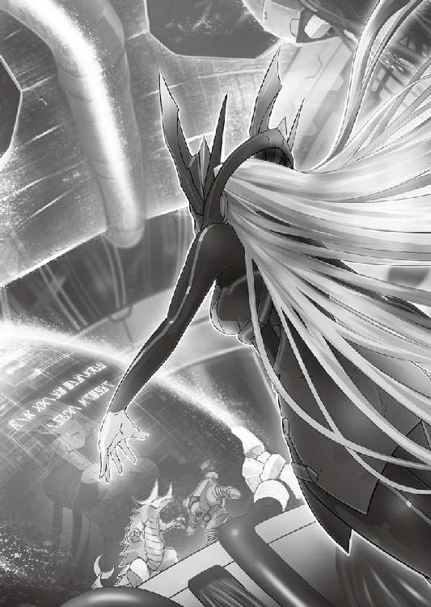

| しんぐんデストロ～イ！１ ～美少女戦車隊、出撃！！～ (桜ノ杜ぶんこ) | |
| 佐山操 | |
| (2014) | |
桜ノ杜ぶんこ
しんぐんデストロ〜イ！
〜美少女戦車隊、出撃!!〜
佐山 操

Ⅰ
この宇宙はいかにして生み出されたものなのか？
科学はまだその答えを持たないし、永遠に持てないかもしれない。だが、神話はすでに答えを持っていた。
とある神話によれば、この宇宙は『虚無の卵』から生まれたという。
その卵は人知の及ばぬ超高次元的存在であり、絶えず生まれ、そして死ぬことを繰り返していた。その生まれた卵が消え去るまでに見ている泡のような一瞬の夢こそが、我々の宇宙なのだという......。
夢はひとつではない。無数に存在し、それぞれは空間に浮かぶ泡のように、近づき、離れ、そして消えてゆく。
これは我々の宇宙とよく似た、まったく別の宇宙の話......。
「......インビテーション・テスト完了。正常作動を確認しました」
『コントロールよりラティーへ。こちらでもインビテーション・テストの完了を確認した。オブジェクト召喚実験は成功だ』
「ありがとうございます。しかし、召喚成功率があまりに低い気がします」
ヘッドフォンから聞こえてくる歓喜溢れるコントロールセンターからの声に対して、ラティーが返した声は無感情と言ってもいいほどの素っ気ないものだった。しかし、コントロールセンターの声はまったく気にした様子もなく、次の指示を下した。
『気にするな。ひとつの実験が成功すれば、その数値を引き継いで成功率を高めることが出来る。引き続き、第二実験にシフトする』
「了解。インビテーションの実験成功により、実験を次の段階にシフト。ジャンピングのテストに入ります」
ラティーは感情のこもっていない声でそう告げると、計器類のチェックを行いながらあちこちのスイッチを入れはじめた。
『了解。ソケットα。五番から一〇番同期問題なし』
ヘッドセットから響いてきた声にラティーは自分の目の前のコンソールパネルに目をやり、ソケットαの項目を確認した。一〇個三列の数字がそこには並んでおり、すべての数字が同じ数値をカウントしていた。
「ソケットα。五番から一〇番こちらも同期確認異常なし」
ラティーの声は、身体にピッタリしたコスチュームの首元につけられた小型マイクが拾い出し、コントロールセンターに送られていた。そのマイクも余裕のある丸首の襟で隠されていて、機能美に溢れるその服装のデザインを壊していない。
『ディメンションワープドライブ起動』
「ディメンションワープドライブ起動チェック。起動を確認」
『エネルギー投入三〇パーセント。ディアスタシオン粒子振動を確認』
「ディアスタシオンの反応を確認しました」
ラティーの左側のモニターに、青白い光の帯を映し出すインジケータが表示された。
『エネルギー投入六〇パーセント。ディアスタシオン粒子振動活発化。次元歪曲を確認。世界体積の部分破断まであと六〇秒』
ラティーは六〇秒のカウントがコンマ〇〇秒から開始されたのを確認し、いくつかのスイッチをさらに押した。
ここはＵＧＳＦ──ユナイテッド・ギャラクシー・スペース・フォース──すなわち、銀河連邦宇宙軍の実験基地で通称Ａ51軌道プラント。銀河連邦ラディウス星系、惑星ヴェクター４の衛星軌道上に作られた秘密実験基地であり、ＵＳＧＦを裏で牛耳る超巨大複合企業であるニューコム社が、極秘裏に作らせたラボだった。
ヴェクター４は民間人は立入禁止の可住惑星であり、住民は惑星や施設管理をする軍人関係者だけしかいない。ここは、退役した戦艦や航宙機等をモスボール保管する専用星系であり、退役兵器の流出を避けるため星系全体が要塞化されていた。そのために秘密実験には最適の場所であり、数多くの研究施設が建ち並んでいる。
ニューコムの非人道的研究は、昔からマスコミによるバッシングの対象であり、その目から逃れるためにこの辺鄙な場所を実験場として使用していた。
『エネルギー投入一〇〇パーセント。世界体積破断。次元断崖形成』
「次元断崖の形成を確認」
さらにラティーは別のモニターに目を走らせ、数値がすべて安定していることを確認した。
「ディメンションワープドライブ──ジャンピング。スタンバイ！」
肩を少し越えるくらいの長さのピンク色の髪を踊らせながら顔を上げたラティーは、心電図を思わせる三本のウェーブが映し出される正面のモニターを凝視し、そう静かだが力がこもった声を上げた。
その声が響いた直後、待機モードを示していた各種スイッチが作動し、正面のモニターの右側にも画面左で減少していくカウントと同じものが表示された。
『これよりプロジェクト・ビフロストの最終実験を行う』
アナウンスの声に合わせて、モニター上に【プロジェクト・ビフロスト】の文字が浮かび上がった。
『ルート・ユニット〝タイプ・イエロー〟ディメンションワープドライブ起動二五秒前。各システム正常に作動中。目標は同一軌道上のＡ50プラント。第五〇一テスト・スタジオ』
高速で数字が減っていくカウントを横目で見つつ、ラティーは最終確認をするように自分の周囲に数百と点灯している正常を示す表示を目で追った。
その時、ひとつのランプがレッド・アラートを表示した。
『ワープジェネレーターに異常発生！ サイン・アラート！』
「デコヒーレンス発生！ 波動関数収縮！ 次元断崖、崩壊します！」
左右のカウントにわずかながらにズレが生じていた。
しかし、カウントは残り一〇秒。もはや、ワープドライブを止める時間はない！
それでもラティーは被害を最小限に抑えるべく、あちこちのスイッチをオフにしていった。だが、カウントは止まらず、レッド・アラートは増え続けていく。
『ジェネレーター出力低下！ 外界揺動増加！』
『ワープルート固定失敗！ このままではどこにジャンピングするかわかりません！』
コントロールからの通信には驚きと恐怖が入り交じっていた。
ここまできてラティーは手を止め、無表情のまま目を閉じた。
実験は失敗する。
わずか数秒の間にアラートサインで視界が真っ赤に染まっていた。今や正常を示す値は全体の三割程度しかない。
『ディメンションワープ発動！』
ラティーは蒼い光に包まれて、その姿は光とともに消失した。
後のＵＧＳＦの非公開実験記録には、こう記載される。
二八一〇年・ＡＧ（アフター・ギャラクティック）歴七一〇年六月一七日 ディメンションワープドライブのテスト中に、Ｆｅｄｅｒａｔｉｏｎ ＦＥＤＣＯＭ５－ＲＵＴＹを消失。トレース不可能な場所に転移したと思われる。一四日間の捜索の後、ロスト・ナンバーとして損失登録する。
マスコミがバッシングする通り、非人道的と言えるほどの早いニューコム社の決断だった。だが、元々彼女は人間ではないために、人道的な対応をする必要はまったくなかった。
彼女は軍事コンピュータＦｅｄｅｒａｔｉｏｎ ＦＥＤＣＯＭ５の移動端末アンドロイドであり、まだ他に六体の端末が存在するのだから......。
Ⅱ
ラティーが目を開けると、そこは南の島を思わせる明るい日射しと真っ白な砂浜。そしてヤシの木が生える別世界だった。
「ここは......ドコだ？」
青い空、紺碧の海。
今までラティーがいた、様々な機械とパイプによって創り出された金属の森をイメージさせる場所ではない。明らかに、ここは自然豊かな世界だった。
「ディメンションワープ・ジャンピングの実験は失敗に終わったか......」
ラティーが聞いたジャンピング実験の成功率は、六五パーセントだった。
六割を超える成功率があるのだから実験すべきである。そういってラボの人間の反対を抑え込んだ本社指示による強行実験は、失敗に終わった。
ラティーはラボとの通信端末を開いて通信を試みたが、コールサインすら表示されない有様だった。
「これでは......我の帰還は無理か......」
そう静かに呟いたラティーは、途方に暮れた人間がよくそうするように、真っ青な空を仰ぎ見た。
雲ひとつない空。
いや、そこには染みのような影がひとつ、ポツンと浮かんでおり、次第に大きくなっていった。
「なんだ......」
それはモモンガが飛んでいる姿だった。
滑空するわけではない。しかしソレは羽ばたきもせずジッと空に滞空していた。
「あれは動物界脊索動物門脊椎動物亜門ほ乳網齧歯目リス科リス亜科モモンガ族モモンガ属の生物か？ 我が知る限り、モモンガとは小型だった気がするが......」
そう、ラティー視線の先を飛んでいる生物は、小さく見積もっても頭から尾の先まで三〇メートルはありそうな巨大なモモンガだった。
「いつの間に......巨大化した？」
巨大化したとかいうレベルではなかった。
その巨体にもかかわらず軽々と宙を舞い、ドガンと地上に落ちて街を破壊し、その巨大な前歯でガブガブと建物や人をかじっていた。
「キ、キミ！ そこにいては危ない！ 逃げたまえ！」
浜辺に突っ立って呆然とモモンガを見ていたラティーに、金属製の甲冑を身につけた中年男が緊迫した声をかけてきた。
──人間の男性。推定年齢四五歳。中世風の金属鎧を身につけている。懐古主義者か？
男はラティーが恐怖に立ち竦んで動けなくなっていると判断したのだろう。ガシャガシャと金属鎧を鳴らして彼女に近づくと、その手を取って走るように促した。
「早く走るんだ。最悪は俺が時間を稼ぐ！」
必死の形相の男の声にラティーは首を傾げた。
──そうか。この男は警備兵かなにかか......。
街の警備兵らしきエンブレムが男の鎧の胸元についていた。だからこそ、ラティーを助けようとしているのだろう。
「ここは危険だ！ 一緒に逃げよう」
「なぜだ？」
「な、なぜって......あれが見えないのか!?」
男が指さす先にいたのは、当然、巨大モモンガだった。
「モモンガだな」
「違う！ あんな巨大なモモンガがいるものか！ あれは〝世界遺山〟から出現した大怪獣モモンガーだ！ 七ヶ月前に王宮を破壊した怪獣がこの街にもやってきたんだ！ 我々の武器や魔法ではどうやっても歯が立たない！ 逃げるしかないんだ！」
「あれが......怪獣......か？」
巨大なだけで愛くるしいモモンガの姿そのままの怪獣モモンガーは、微笑ましく思えるニッコリ笑っているような顔にクリクリした目を輝かせて、じゃれつくように建物を破壊し、人間に噛みつき、ローリングしていた。
「愛らしいな......」
「あれのドコが愛らしいんだ！ あんな強力な化け物は今まで見たことがない！ 魔術師のライトニング・ストライクを受けても平然としている奴らなんだぞ！」
「魔術師......」
ラティーはまだ破壊されていない建物などを観察し、この世界が産業革命による機械化の恩恵をあまり受けず、魔法と呼ばれる物質文明の物理法則とは異なる文化を育んできた世界であることを分析した。
「つまり、物理的な大ダメージを与える武器でなければ通じないわけか」
無駄だと分かっていても怪獣モモンガーの足止めをしようというのだろう。街からは雷撃や火球が飛び立ったモモンガーに放たれていた。だが、すぐさま折り返して落下攻撃をした怪獣の前に魔術師たちは敗れたのか、反撃の火の手はそこで上がらなくなった。
「一方的ではないか」
「だから少しでも遠くに逃げるんだ！ あいつらが時間を稼いでくれている間に！」
魔術師たちは命を捨てるつもりで足止めを買って出たのだろう。その犠牲を無駄にするわけにはいかない。この街の男たちは、少しでも多くの女、子どもを遠くに逃がす義務があった。
「さあ、早く行こう！」
「いや、逃げる必要は無い」
「なん......だと？」
男は目を疑うような顔をしてラティーを見た。
相変わらず無表情のまま、ラティーは怪獣モモンガーを見据えた。その瞳が妖しくも思える光をたたえ輝いていたことに、男は気づいただろうか？
ラティーは怪獣モモンガーを分析し、自分の中に蓄積されているＵＧＳＦの創生期からの戦闘データと照合をしていた。
その間わずか数秒。恐るべき演算能力で、ラティーは数百年にわたる戦闘データとの照合を終了していた。
「照合完了」
ラティーは両手を合わせた。
「インビテーション！」
その叫びを合図にラティーから薄いブルーの光があふれ出した。その光はモヤモヤとした煙のように動き始め、やがて宙を舞い虹のような弧を描いてラティーのすぐ近くの砂浜に突き立った。
「な、なんだあああっ!?」
砂浜がまるで水が沸騰しているかのように沸き立ち、その中から白色発光する巨大な四角い物が耳障りな金属音を放ち、軋ませながら出現した。
「我はあれの弱点を見出した。さあ、それを使って戦うがよい！」
男はポカーンとして出現したそれを見つめていた。
「こ、これを......？」
「そうだ。使って戦うがよい。我が分析した限り、この世界の法則にない物理攻撃ならばあの怪獣の表面を覆うフィールドを貫けるはずだ。これで戦えば、この戦闘はそなたらの勝利となり、完璧なものとなるはずだ。ん......どうした？」
どうしたらいいのか分からないという顔をした男にラティーは小首を傾げた。
「こんな鉄の塊で、どうやって戦うっていうんだ!? こんなデカくちゃ、振り回すこともできねえだろ！」
「なに......？」
ラティーのインビテーションによって出現した四角く巨大な金属の塊。
それは別宇宙に存在し、地上の覇者として、時には鋼鉄の凶獣として人間に襲いかかった戦車だった。しかも、かつて第二次世界大戦と呼ばれる戦争が開戦した直後、世界に戦車の存在を改めて見せつけた電撃の猟犬ともいえるⅡ号戦車だった。
「使えない......と？」
「俺の手でどうやって振り回せってんだよ！ 俺は巨人じゃねえぞ」
武器と言えば白兵戦用の物しかないこの時代に戦車を持ち出せば、こんな反応をされることは当たり前かもしれない。ラティーは納得したように小さく頷くと、また手を合わせた。
「ならば......戦車長も呼び出せということだな。インビテーション！」
再びラティーから薄いブルーの光があふれ出し、光はその周りに六人の人の姿を形成させた。さらにより大きな光があふれ、五つの巨大な四角い塊を形成していった。
七人の戦士と七台の戦車の召喚。
それは、このテクノロジーよりも魔法が発達した世界『オリウス』の危機を救う戦車伝説のはじまりだった。
ラティーと名乗る神より使わされし巫女が、召喚魔法を操り、怪獣に対抗できるこの世在らざる兵器──戦車と、それを操れるパイロットを生み出し駆逐する伝説の最初の一歩となるはずだった......。
Ⅲ
「怪しい所は、砲弾をぶち込め！ ンあ......だああああっ！」
俺はベッドから転げ落ちて目覚めた。
ここは......俺の部屋。
ちっ、夢だったか......。
俺はモサモサと布団をつかんで起き上がり、ベッドに座り込むと壁に貼り付けたハインツ・ヴィルヘルム・グデーリアン閣下の栄光ある写真パネルを見上げた。
ハインツ・ヴィルヘルム・グデーリアン閣下。
戦車戦における電撃戦の父であり、偉大なる戦術家。
念願のポスターサイズのこの写真を手に入れるために、どれほどの苦難の日々を送ってきたことか......。
走馬燈のように脳裏を流れる俺の苦難の日々。
いやいや、これははじまりである！
今までプリントアウトしただけの小さな写真しかなかったからな。
「手に入れた最初の夜からこれだ......。ふふふふ......」
そう、俺は夢の中、グデーリアン閣下の指揮の下でⅡ号戦車を駆ってダンツィヒ回廊を横断し、ブレスト・リトフスクに進撃していた。
「なんという素晴らしい夢を見られたのだ......。いいぞ、いいぞ、いいぞぉ！ 諸君、これから戦争である！」
そこまで言って俺は我に返った。
まぁいい、今朝のところはこれまでとしておこう。
なにせ戦争は長い。今夜の夢が楽しみである。
そのためにも退屈な日課である学校へと向かい、無駄な時間と戦う責務が俺にはある。
さっさと着替えて行くとしよう。今夜の夢は、おそらくは対仏戦アルデンヌの戦いだ。槍の穂先となって、今夜はアミアンからダンケルクまでを走破することとなる。グデーリアン閣下、俺はやります。穂先の最先頭に立って最初にダンケルクに踏み込んでやりますよ！ やがて、俺は〝グデーリアンの槍〟の異名を持つエースになって......。
「なにしてんのー！ ごはんよー！ さっさと下りてらっしゃい！」
「あ、はーい！」
母親というものはいつも無粋だ。
なぜにこう夢に浸っている息子の気持ちをぶち壊しにするんだ......。
俺は生まれてくる時代と場所を間違えてしまった。
拝啓 グデーリアン閣下。なぜに俺は閣下と同じ時、同じ場所に生まれなかったのでしょうか？
愚痴をグデーリアン閣下にこぼしていても仕方がない。
学校の制服に着替えた俺は、グデーリアン閣下の写真をプリントアウトしたものを収めたパスケースを胸に、部屋を出た。
それにしても、なぜに日本の制服というものはこうもサラリーマンを意識させるブレザーなのだろうか？ もっと機能美溢れるパンツァージャケットにならんのか？
「ん......？」
ブレザーの袖を見た時、なにか青い煙のようなものがそこから流れ出した。
袖だけじゃない。気がつくと俺の身体中から青い煙のようなものが出ている!?
「な、なんだ!?」
ブレザーをけなしたからか!? ブレザーをけなしたから、それを恨みに思ったブレザーが俺に攻撃を仕掛けてきたとでもいうのか!?
「なんなんだ......コレ？」
俺の身体が燃えているわけじゃない。なによりも煙が青いんだから！
「わ、ちょ......ちょっと......」
煙はブレザーはおろか、ワイシャツやネクタイ、ズボンからもその青い煙は吹き出していた。そればかりじゃない。俺の手からも出ていた。
「だ、誰か！ か、かあさ......」
母さんを呼ぼうとした矢先、青い煙が眩い光を放ち、俺はとっさに手で目を覆った。
冷たい地面の感触を俺は肌で感じていた。
って......なんで俺は寝ているんだ？
地面か？ 倒れた？
倒れたんなら、家の廊下だろう......。
なんで、地面なんだ。
頭が重くて吐き気がする。もちろん、吐くわけじゃない。
胃の辺りがムカムカして、ちょっと起き上がるのは無理っぽかった。
目を開けることすらつらいほどに身体の自由がきかない。なんだこの感覚は......。
もがくこともままならない状況の中、まともに動いていた耳が、そばで話している誰かの声を拾い上げた。
「なんか......なよっとした印象の男の子ね」
「いい戦略を立案できそうなタイプには見えませんね......」
「こんな男になんか頼る必要などありません。世界に平和を取り戻すための戦いは、私たちの力だけで十分です！」
「どうでもいいけど早くお風呂入りたーい」
「刺激的な毎日を送らせてくれそうにない印象かなぁ......」
「チョコ食べます？」
「遊びは終わりです。男の子の司令官よりも、今はＴ34を見つける時です」
なんだろう......誰かが言いたい放題言われている気がするのは気のせいだろうか？
そんなにイジメたり無関心な言葉を言うと、その人がかわいそうだから手加減してやってくれよ。男ってのはかなり繊細でナイーブで、センシティブなんだからさ。
「眼鏡君だね」
「眼鏡を掛けているイコール頭がいいとは限りませんよ」
「こんなオタクっぽい人が、高い意識を持っているとは思えません」
「さっさと起こして挨拶済ませちゃおう。そしたらお風呂に行けるからさ」
「そういえば新しいスイーツを考えたんだけど......」
「今日の夕飯はカレーにしませんか？ そのスイーツはデザートってことで」
「戦いが上手くいっていないのは、明らかに火力不足が原因です」
眼鏡君は実は人気あるんだからな！ 酷いこというなー。
今の世の中には眼鏡君がたくさんいるんだからな！ いつかは、俺だって草食男子の眼鏡君としてデビューして、女の子に囲まれて......いや、そんなことはどうでもいい。
なんだよ、このうるさい集団は......。
いい加減、その男の子をイジメるのをやめてやれよ......。
なんとか身体を動かそうともがくと、どうにか右腕が動いた。
「あ、起きたみたい」
脳天気な声が、俺の動きに気づいたようだった。それと同時に、動く人の気配が感じられた。
「ふむ......。この者は、なにかインビテーション中にトラブルにあったようだな。だが、もう大丈夫だろう」
「だからクルマに轢かれたウシガエルみたくなっているのか。おい、大丈夫か？」
なんだこの女は......人をウシガエルだと？
なんとか顔を上げると、そこには外国人の金髪碧眼美少女がいた。
「は？」
正しくは、俺の周りには俺をウシガエル扱いした金髪碧眼の美少女をはじめ、合計八人の美少女が取り囲むようにして立っており、地面に這いつくばっている俺を見下ろしていた。
くっそ......。まだ胸のムカつきが収まらない。胃がなにかでシェイクされた気分だ。
冷たい地面に爪を立てるようにしながらなんとか腕を突っ張り、上半身を持ち上げた。すると、赤いタータンチェックのスカートの上に、白いノースリーブのジャケットというマーチングバンドのコスチュームを思わせる服をきたショートカットの女の子が、手を貸して立つのを手伝ってくれた。
「あ、ありがとう......」
「どういたしまして！」
なんとか起き上がった俺の前に立ったのは、どこか人間味が薄くて生活感に欠ける美少女だった。シルバーとブルーを基調にした身体にぴったりしたコスチュームはかっこよく、襟元にしめた黄色のスカーフがアクセントになっていた。
「そなた......本当に我が呼び出した者か？」
「はあ？」
いきなりなにを言い出すのやら。
呼び出したってなんだよ。そう言えば、イジメられていた眼鏡君は......。
右を見ても女の子たち。
左を見ても女の子たち。
おかしい......散々な言われようをされていた眼鏡男子はドコに行ったのか？
「なにを探しておるのか？」
「いや......イジメられていた眼鏡君はどこにいるのかと......」
俺を除く全員が、非常に怪訝そうな顔を見せた。
「うわぁ～。もしかして......みんなのさっきの会話聞こえていたんじゃないですか？」
この声は、チョコレートの話をしていた子っぽいな。
彼女の声にその場に居合わせた女の子たちは顔を見合わせて笑いだした。
なんだよいったい......。
「ここに眼鏡君はお前しかいない。ついでに男もお前しかいない」
「は？」
金髪碧眼の外国人美少女が腕組みしながらそう俺に教えてくれた。
なんで人に物を教える時、仁王立ちして腕組みしてんだ？
そもそも、眼鏡君が俺しかいないなんてわけないだろ。
あんだけ散々なことを言われていたのは......俺か!?
なんで、いきなり見ず知らずの女の子たちに、あんなことを言われないとならんのだ。
「明らかに無理だ。彼には荷が重すぎる」
「そうですね。すぐさま現状把握ができず、こんなに挙動不審な態度を取っていては、まったく役に立たないと思います」
いったいなんの話をしているんだ？
人の頭越しになにか訳の分からないことを言ってるんだが、内容はさっぱり分からない。
まぁ、基本的に俺が使えないということを言いたいんだろうなぁ。
「とにかくまずは訊こう！ そなたは我が呼び出したものか？」
結論をつけたいらしい人間味の薄い美少女が、さっきの質問を繰り返してきた。
「呼び出しって......なに？」
はっはっは......さっぱり分からない。
仕方ないじゃん。説明して欲しいのはこっちなのに、なんで呼び出したのはそなたか？ なんて呼び出された方が呼び出した方に質問してるわけ？
ん？ ん？ ンんーっ!!
「な......な......」
俺は彼女たちの背後にある機能美溢れる車体を見つけ、心臓が止まるような感動を覚えていた。
「なんで......Ⅱ号戦車がここにあるんだ!?」
「は？」
全員が振り返って俺の目線の先に停車しているⅡ号戦車を見て、そして俺に目線を戻した。
「あの独立リーフスプリング式サスペンションの転輪は、まごう事なきｃ型だな。う・つ・く・しー！ なんでこんな綺麗な車体が残ってんだ！ 排気管なんかピカピカじゃないか!! くっそ、マイバッハＨＬ六二ＴＲ直列六気筒液冷式エンジンはかかるのか!? かかるなら、その排気音を聞いてみてええええええっ！」
自然に口から飛び出し、一気にまくし立てた俺のウンチク。
それを聞いた全員の目が点になり、俺に向けられていた。
「どうやら......我が呼び出したのは、そなたのようだな......」
あのシルバーブルーの人間味の薄い美少女のみが、なにか一人感心したように小さく頷いていた。
「外側を見ただけで、なんで型番まで分かるわけ？」
俺が起きるのを手助けしてくれた、マーチングバンド娘が聞いてきた。
「むしろ、分からん方が俺は不思議だ」
ザワッとどよめいて、女の子たちは一歩後ずさりをした。
「この人はただのミリオタです。私たちを率いられるような人間ではありません！」
眼鏡をかけた参謀風な印象のある女の子が、険しい顔をして俺を睨んでいた。
な、なんでこんなに毛嫌いされているっぽい中に、俺はいるんだ？
「ちょ......ちょっと待て。俺にはまったく話が見えないし、君らに敵視されているっぽいことは分かるんだけど、その理由も分からない。イチから説明してくれないか？」
「............」
やだー面倒臭い～って雰囲気なんですが......。
どうすりゃいいんだよ。
「説明しよう。我はラティーだ。よろしく。我がそなたをこの世界に呼び出した」
「はぁ......」
「呼び出したということは、召喚したということだ。つまり、そなたは今、そなたが生まれた世界とは異なる場所──別世界にきている」
「はぁ......」
「驚かないのか？」
「いや、驚くもなにも......戦車があるからまぁ......いいかと」
女の子たちはまた一歩後ずさり、遠のいた。
そしてボソボソと聞こえるようにヒソヒソ話をしはじめた。
「ミリオタで変態よ変態......」
しっかり聞こえてるんだが......。
「まさにそなたは戦車の申し子というわけだな」
「そ、そうなのかな......」
作った戦車プラモの数なら三桁は行くぞ......。やはり量産型である戦車は最低でも一二両は作らないといけないからな。
いや、そんなことはどうでもいい。
ラティーと名乗った女の子は、なにか感心したように頷いていた。
「そなたがここに召喚された理由はひとつ。ここにいる少女たちが乗る戦車隊を率いて、あの怪獣どもを倒すことだ！」
「は......？」
ビシッ！ とラティーが指さした先。遠く離れた所に、特撮世界にいそうな二足歩行のキノコ怪獣っぽいのが蠢いていた。
「怪獣......？ って、今、戦車隊って言ったな!?」
「そうだが......」
「じゃ、じゃあ、俺がこのⅡ号戦車を率いて戦うのか!? ブレスト・リトフスクやダンケルクのように!?」
俺が目を輝かせて訊ねたが、ラティーは『なにそれ？』というように首を傾げただけだった。どうやら知らないらしい。まぁ、女の子というものは、基本的にはこういう態度を取るものだ。
「とにかく戦車隊を率いてあの怪獣をやっつければいいんだな！」
「そのとおりである」
やってやるぜ！ と答えようとしたその時、
「断るわ！ あなたの指揮なんかいりません！」
赤いジャケットを着た長い髪の女の子が即答で否定してきた。
どうなってんだこれは。
一方は俺に率いろといい、一方は断るという。
意志統一がまったくされていないのか？
「だが、今のままの戦い方では、いつか取り返しの付かないことになるだろう」
「そんなことにはなりません。六車さんが立派に指揮を執って、どの戦闘でも勝って見せるわ」
どうやら六車というのは、さっきの参謀風の眼鏡っ娘らしい。
「男なんかいりません！」
男なんか......だと？ ははぁん。分かったぞ。
「つまりキミは百合な......ッ!!」
すべてをいう前に、俺の頬に鉄拳が飛んできた。
「こんな下品な男はいりません！」
遠のく意識の中で、俺はそんな拒絶の言葉を耳にした。
拝啓 グデーリアン閣下。戦車隊を率いるために俺は呼ばれたらしいですが、前途多難です。
敬具
Ⅰ
これは......夢か？
鼓膜が痛くなるほどの砲声と風圧。総火演（陸上自衛隊富士総合火力演習）に行った時に体感したあの感覚が身体の隅々から甦ってくる。
そうか......俺は今、総火演の砲撃演習を見ている最中で、その砲撃のエクスタシーで思わず昇天していたということか？
しかし、なぜ地面に寝ているのだ？
失神したのなら、速やかに救護テントなどに運ばれるのではないか？
俺は上半身を起こして左右を確認した。
左を見ると、燃えさかる町並みが見える。
右を見ると、同じように燃える森が見える。
今年の総火演は、擬似的にヨーロッパの町並みでも再現したのだろうか？
面白いぞ。それは中々凝った趣向だ。
そもそも、演習といいながらも市街戦を想定していない演習では、国土防衛はままならないはず。日本は外に出て行けないのだから、必ず本土決戦になり、市街戦が行われることは必至だ。
しかし──
総火演なのに、猛火の中を逃げ惑うエキストラなんか用意していたのか？
これでは、誤ってエキストラを撃ってしまって野党から吊し上げの大追及とかありそうじゃないか！
「目覚めたようだな」
聞き慣れない声──いや、聞き覚えがある声がした方を見ると、身体にぴったりした服を着た──そう、ラティーという女が俺を見ていた。
「俺は......」
ダムッ、ダムッ、ダムッ！ という連射音が轟いた。
総火演の一〇式の砲声には遠く及ばない小さな砲撃音。そう、この音はⅡ号戦車の五五口径二〇ミリ機関砲の音だ。
「くぉらあああああああああああああああああっ！ 逃げるな怪獣!!」
「は......？」
俺はまだ夢を見ているのか？
Ⅱ号戦車が集団で砲撃戦を行っていた。
いや、Ⅱ号戦車だけじゃない。それ以上の口径の砲声が聞こえる。
「これは......38（ｔ）か!?」
「なぜ砲声だけで分かる!? そなた、やはり変態か？」
失礼な！ なんで砲声で車両が分かったら変態なんだ？ 俺にはサッパリ分からんぞ。
「この砲声は三七ミリ砲。Ⅱ号戦車が主力であるなら、その当時に三七ミリ砲を備えていたのは38（ｔ）のはずと推理したまでよ！」
ドーンと偉そうに当てずっぽうで言ったが、どうやら当たっていたらしい。
二種類の履帯音が響き、灌木を踏みつぶして目の前にⅡ号戦車と38（ｔ）が姿を現した。
Ⅱ号戦車の砲台上面のハッチが開き、中から姿を見せたのは俺を助け起こしてくれたショートカットの女の子だった。
「見失っちゃいました！」
「怪獣は森の中に潜んだようです！」
38（ｔ）から姿を現したのは、俺のことをトコトン認めないとか言っていた高飛車な女の子だ。
つまり、ここにきて報告をしているのは俺に向けてではなく、ラティーという、たった今、俺を変態扱いした女の子に対してだ。
「どうすればいい？」
ラティーは俺を見て訊いてきた。
ショートカット娘は不安そうな目を、高飛車娘は相変わらずの目を俺に向けてきた。
「ドコでどうやって戦っていたのかが分からないと、俺はどんなアドバイスも言えないからな」
ラティーはなるほどと頷き、村と反対側の森を指さした。
「最初に森に現れた怪獣は囮でな、我らの戦車隊が森に向かった直後、村のそばに二匹の怪獣が出現した」
つまり......怪獣は三匹ということか。
「まず、森に現れた怪獣を追って大山を中心とするⅡ号戦車隊五両が先行し、その戦車隊を支援する形で西園寺と海沢の38（ｔ）が続いた。村を怪獣が襲いはじめたのを聞きつけた38（ｔ）二両は反転、村に急行し、住民の避難支援をしながら怪獣を追い立てた」
つまり、森に現れた一匹に対して五両のⅡ号戦車が出向き、村を襲った二匹に対しては二両の38（ｔ）で対応したわけか。
こいつら、足し算と引き算はちゃんと出来るのか？
「森の中に現れた一匹は、ピョンピョン飛び回るから大変なんですよ！」
ショートカット娘──たぶん、大山がスネたように唇を尖らせて言い訳を言ってきた。
確かに、ピョンピョン飛び回る的に対しては、連射可能な二〇ミリ機関砲は効果的だろう。しかし──
「そなたならどうする？」
「潜んでいそうな部分に榴弾をぶち込み、あわてて飛び出してきたところを二〇ミリ機関砲で狙う」
「では、それでいこう。具体的な指示をせよ」
「俺が？」
「お断りします！」
俺が指示を出す前に西園寺という高飛車娘は、38（ｔ）砲塔の上部ハッチを閉じて市街地に飛び出していきやがった。
後に残った大山ってショートカット娘が、不安そうに俺とラティーを見ていた。
「そなたの提案は、Ⅱ号戦車だけでも可能か？」
飛び出していった西園寺を横目で見ながら、ラティーが冷静な声で質問をしてきた。まぁ、榴弾を撃つなら38（ｔ）の方がいいんだが、こうなっちまった以上は贅沢は言えないな。
俺は不敵な笑顔を見せて答えた。どんな逆境でも笑って見せるのが漢ってもんだ。
「十分出来る。Ⅱ号戦車の主砲は機関砲だが榴弾を撃てる。五両いるなら二両に榴弾の雨を撃たせ、残りの三両で仕留めろ！ いいか、怪しい所には砲弾をぶち込め！」
ロンメル将軍の言葉だが、まさに今回の戦闘にはふさわしいお言葉だ。
「了解です！」
大山は敬礼してⅡ号戦車に乗り込むと、そのまま走り出した。大山は素直だな。この調子なら使いやすいかもしれない。
しかし──
俺はキョロキョロと辺りを見回したが、森が多くて周辺の状況が掴みづらい土地だった。こんな場所で戦車戦とは......。
「どうかしたか？」
ラティーが自分の首に提げていた双眼鏡を俺に手渡しながら訊いてきた。
「お。ありがとう」
「他の戦車位置が知りたいんだが......」
「無理だ。ここからすべてを把握することは不可能だ」
ラティーの言葉通り、小高い丘になっているこの場所も、灌木や立木に視界がほぼ覆われているために戦況の把握をすることは不可能だった。なにより通信機がない。
一度作戦指示をしてしまうと、もう後戻りは出来ないことになる。
せめて戦闘指揮車でもあれば、具体的にどう前線が動いているのか分かるんだが......。
「それぞれの車両に無線は積んであるのか？」
「車両同士の連絡の取り合いは出来る」
「だが、ここに無線機はないわけか......」
「そうだな。連絡手段を考えておこう」
考えておこうってことは、今は無理ってことだな。
くそ。ここから先は見ているだけか......。
仕方なく、俺は手近な所にあった太い枝が多い樹の幹によじ登り、少しでも戦場観察が出来るようにした。
「なにをしている？」
「せめて、戦況視察くらいしないとダメだろ！」
「なるほど」
先ほど聞いて心に刻んだⅡ号戦車のマイバッハＨＬ六二ＴＲ直列六気筒液冷式エンジンの排気音を頼りに、双眼鏡でその姿を探した。一両、そしてもう一両発見したが、どうやらコイツらは榴弾砲撃係らしい。移動もせず、ひたすらあちこちに榴弾をぶちまけていた。
「通信機はないんだよね？」
「手元にはない。なぜか、通信機単体のインビテーションが出来ずにおる」
淫靡テーション......？
どうも俺には訳が分からない言語があるな。
仕方がない。
「ちょいと、あの戦車の所に行ってくる」
そう一言断ってから、二〇ミリ機関砲の砲声轟く中、戦車たちが待つ草原に飛び出した。
丘の上にいた時は草原だと思っていたが、丘の麓の森を抜けて草原に出たらそこは広大な麦畑だった。いや......正しくは麦のようなものの畑か......？
米っぽくも見える稲穂で頭をこう垂らしているんだが、なっている実は麦だ。
畑のあちこちから黒い煙が上がっており、上がっていない部分は戦車の履帯に荒らされていた。さらに全長が八〇センチくらいはありそうな巨大な獣の足跡も残されていた。
これが......怪獣の足跡ってやつか？
この足のサイズからすると人間の四倍近くはあるのか？ つまり約七メートル級の怪獣ってことか......。
とにかく俺は、畑の中でも少し盛り上がっている場所に陣取っているⅡ号ｃ型戦車に向かって全速力で走った。
「はぁはぁ......」
近く見えていたんだが、意外に距離があった。
くっそ......。なんだってこんなに走らなきゃならないんだよ。
絶対、移動指揮車が必要だと思うぞ。
って言うか、無線機さえあれば、なにひとつ問題ないんだけどな......。
こんなことになるなら、もう少し身体を鍛えておけばよかった。そう思うが後の祭りだな。グデーリアン閣下、俺は怠けていました。すみません。これでは電撃戦に支障をきたします。
ようやく榴弾をばらまいているⅡ号戦車の所にたどり着いたまではよかったが、もう息切れして苦しいの苦しくないのって......。
まともに喋ることすらできない。
しかし、急がないとここまで走ってきた意味がない。
近くの畦に落ちていた拳ほどの石を拾い、ヨロヨロしながらなんとか戦車の上によじ登り、石で砲塔上部ハッチをゴンゴンと軽く叩いた。
「どなたですか～？」
どなた？ いや......こう返されるとは思ってもみなかった。
ええと......俺の立場はなんなんだ？
「ええと......戦車隊指揮官です」
とりあえず、ラティーは俺に指揮を執れと言ったんだから、そういう立場でいいんだよな？ 間違ってないよな。
俺が悩んでいる間にハッチが開き、中からハの字眉の女の子が顔を出した。
「指揮官って......ラティーじゃないの？」
「いや、そのラティーから指揮権を俺は預かって、この戦場にやってきた。ええと......チアリーディングみたいな格好をした女の子......大山か？ その子から指示を受け取っているだろう？」
「あー......受け取りましたね～。だから榴弾を撃ってるんだけど、問題ありますか～？」
問題ありますか～......って。ありまくりだろう。
「榴弾を撃ちながらターレット──砲台を回せ」
「はぁ!? そんな器用な真似を一人でやるんですか？」
「はあっ!?」
一人って......なにを言ってるんだ、この娘は！ Ⅱ号戦車は三人乗りだろうに。
「あ、あなた、この世界に来たばかりみたいだから教えてあげるけど、この世界の戦車はなぜか一人乗りなのよ！」
「なんだと!?」
青天の霹靂とはまさにこのことだ。
ど、どうやって改造しているんだ？
理屈がわからん。スケールダウンしているならともかく、俺が知るⅡ号戦車そのままのサイズなのに、なんで一人乗りが出来るんだ？ ドイツの科学は世界一ということか？
すべてはそれで片付くということか？
だが、いいことを聞いたぞ。
「ええい。一人で操縦出来るのなら俺がお手本を見せてやる。そこを退きなさい」
「え？ なんで～？」
「俺が攻撃のお手本を見せてやるといっているのだ」
くっくっくっく。夢にまで見たⅡ号戦車を操縦するんだ。ここで既成事実を作ってしまい、この戦車を俺のものにする。そして戦車陣形をきちんと組んで怪獣を滅殺してやる。それで問題ないだろう！
「んー......ちょっと～。ダメな気がするけど～」
そう言いつつも、ハの字眉ちゃんは戦車長席から出て俺に席を譲ってくれた。
「ありがとう......あー......名前は？」
「私？ 月形です。マイペースっていわれますけど協調性はすごいです。たぶんすごいです。よろしく～」
確かにマイペースっぽいな。
「よろしく。じゃあ行くぞ......って、どうやって操縦するんだ？」
砲台から中に乗り込むと、妙にがらんどうな状態だった。
銀色の砂々みたいなものが床に積もっているだけの薄暗い操縦席。さっきまでエンジンがかかっていたのに、月形ちゃんが降りたらピタリと止まってしまい、ウンともスンとも言わなくなっちまった。
「ええと......エンジンはどうやってかけるんだ？」
砲塔の上から覗き込んでいる月形ちゃんを見上げながら訊ねると、彼女は小首を傾げた。
「自然にかかるけど......」
「はい？」
な、なんだよそのオートマチックっぷりはよ？
そもそもこの二次大戦級の戦車に、そんな未来派オートマチックなシステムが組み込まれているはずがないだろう。
「ボタンを押すのか？」
キー・レスエントリーとか、そういうシステムを勘違いしてんだろう。
「なにも押しませんよ」
「じゃあ、どうやって操縦するんだよ？」
「なんと......なく？」
月形ちゃんはハの字眉をさらに寄せながら目を泳がせ、小首を傾げた。
なんとなくってなんだよ!?
「えっと......キミは説明されなかった？」
「な、なにが？」
「この世界の戦車は、男の子は操縦出来ないって」
「はいいいいいいいいいいいっ!?」
なにそれ......。
なにその......俺の夢も希望も打ち砕くような、トンデモ設定は？
グデーリアン閣下......俺の心は早くも折れそうです。
「って言うか、それをさっさと説明しろよ！」
「えええっ。私が悪いの？ だって、キミが説明する前にお手本を見せるって言い出していて聞かなかったじゃない」
「そ、そうだけど......。確かにそうだけど！」
「でしょ？ 私は、悪くないよね」
「う......」
「悪くないよね？」
「うぅ......悪くないです」
確かに月形ちゃんは悪くねえよ。
でも......。でもよぉ。マイペースすぎんだろう？
さっさと説明してくれよ！
俺はノソノソと戦車長席から外に這い出し、月形ちゃんに席を譲った。
「乗ってくれ」
「分かりました～」
シュルッと俺の脇から砲台の中に滑り込み、戦車長の席に月形ちゃんが座り込むと、確かにⅡ号戦車のマイバッハＨＬ六二ＴＲ直列六気筒液冷ガソリン・エンジンが身を震わせてかかり、後方の排気管から勢いよく排気ガスを吹き出した。
この震動。この感触。このエキゾーストノート......。
これこそ、夢にまでみたマイバッハ・サウンド！
嗚呼、なぜだ！ なぜ神はこの戦車を俺に操縦させないのか？
感動と慟哭の涙を器用に流す俺を、腫れ物にでも触るような目つきで見上げていた月形ちゃんは、さらに申し訳なさそうな声を上げた。
「あの......なんだか泣いてるみたいな時に悪いんですけど。指揮官さんは、私になにをさせたいの？」
ああ、そうだった。
感涙の涙を流している場合じゃない。
「いいか、良く聞け。怪獣が潜んでいそうな所を見かけたら、砲塔を左右に動かすか、あるいは砲身を上下に動かしながら榴弾を散らせ！」
「そんなことしたら、当たらないけど......いいの？」
んー......大山ちゃんはいったいどんな命令を伝えたんだ？
「キミの......いや、キミたち榴弾担当の役目は狩りで言う勢子だ。セコ。分かるか？」
「分かりません」
ニッポンの未来はどうなっちゃうんだよー。
勢子って、そんなにマイナーな言葉か？ 猟師でもない俺だって知ってるのによぉ。
「分かった。勢子とは追い立てる役目のことだ。榴弾をまき散らして、隠れ家から追い出す役目だ！」
「おー。了解。じゃあ、適当にばらまけばいいんだね」
「いや、いそうな場所にだぞ！ ロンメル将軍もおっしゃっておられる！ 怪しい所には砲弾をぶち込め！」
「アイアイサー！」
「ああ、それを無線でもう一人にも伝えてくれ！」
「アイサー！ 六車ちゃんにも伝えておくねー」
もう一人の榴弾担当は、六車って言うのか......。
俺がいるにもかかわらず、月形ちゃんはお構いなしに砲台のターレットを回しはじめたので、俺はあわてて戦車の上から飛び降りて、脇に伏せた。
小気味良い二〇ミリ機関砲の砲声が轟き、扇状に曳光弾が飛んでいくのが見えた。
「着弾......今！」
ボムボムボムと、前方の森で榴弾が小さな爆発を次々と起こしていく。
これであぶり出しも出来るってもんだ。
そう言った矢先、激しく木々を揺らして怪物が飛び出しやがった。
「あれが......すばしっこいだ......と？」
意識を飛ばされる前に見た怪獣の姿は遠目だったんでハッキリとしたものは分からなかったが、改めて近くで見ると、どう考えてもすばしっこい外見はしていなかった。
具体的に言うと......巨大だがドコかくたびれた感じの極彩色のキノコに怪獣っぽい手足が生えて、尻尾がくっついた感じ......。
たしかに、こいつは素早かった。
榴弾の雨から逃げる歩行速度はそれなりなんだが、時折、バフッとキノコの笠から黄緑色をした煙を吐き出して一気に跳びやがる。ありゃ、胞子ジェットか？
しかし、なんて無様な戦い方だ？
せっかく榴弾であぶり出してやってるってのに、肝心な狩り役の奴らが上手く機能していない。これじゃ、逃げられまくるのも当然だ。
「おい、月形ちゃん！」
「なんでしょう？」
「大山ちゃんたちの位置は特定できるか？」
「できますが......なにか？」
できるならなにかじゃないってば......。
そう言いたいのを俺はグッと堪えて、テキパキと指示を出した。
「まず大山ちゃんたちのいる方向に、あのキノコ怪獣を追い立てるように榴弾をぶちかましてくれ。そう砲撃することも、大山ちゃんたちに無線で伝えておけよ」
「はい！」
「それから狩り役の大山ちゃんたちに、真っ正面から馬鹿正直に並んで撃つのではなく、包囲攻撃で狙うように伝えてくれ！」
「分かりました！」
これで少しは命中率が上がってくれればいいんだが......。
現代ＭＢＴ──メイン・バトル・タンクでも無い限り、走行中の砲撃は滅多に当たるもんじゃない。つまり、当てたければ戦車は止まって撃つのが基本になる。しかし、今、コイツらが使っているⅡ号戦車の主砲は、砲と言っても二〇ミリ機関砲であり、本来の戦車のドカーンという破壊力のある砲じゃない。そのために反動も低く行進間射撃でも当たりやすい。さらに連射もできる。
このタイプの勢子と狩人が決まっている戦い方で装甲が薄い相手なら、こんなに苦労するはずはないんだけどな......。
月形ちゃんからの通信が届いたのだろう。大山ちゃんたちのⅡ号戦車三両は三方向から包囲する形で跳び回る巨大キノコ怪獣を半円包囲した。半円と言っても、カバー範囲は扇状が限界だ。だが、それで完全に銃弾の包囲網は敷ける。
絶妙のタイミングで、六車ちゃんの放った榴弾が怪獣を包囲網の中心に追い込んだ。
ダムダムダムダムッ！ という四連の射撃音の後、着弾の爆発が起こる。そして、三門の砲塔からの機銃斉射音が鳴り響いた。
二〇ミリ砲の直撃を受けたキノコ怪獣は、断末魔の叫びを上げることもできずそのまま森の中に崩れ落ちた。
「やったぁ!!」
「すぐに反転して村の救援に向かえ。避難民がいるかもしれないから、初撃で榴弾は使うなよ！」
「分かりました！ 他のみんなには？」
「森に入っている連中には全速で村に向かうように伝えておけ！ それと、後ろに俺を乗せてくれ」
俺は月形ちゃんの返事を待たずにタンクデサントよろしく砲塔の後ろに乗り込んだ。
Ⅱ号戦車の車台後部は、片側がエンジンの排熱ダクトでもう片方はエンジンルームなどを確認するためのハッチがついた傾斜状の装甲板になっている。まぁ、装甲板って言ってもⅡ号戦車の上に戦車の上面装甲だからタカが知れてるんだけどさ。クルマのボンネットに乗ってるようなもんだ。
俺は装甲板を通して伝わってくる熱さを我慢しながらその部分に乗っかり、運んでもらうことにした。
まぁ、戦闘が始まったら飛び降りるしかないんだけどさ。
ハッキリ言って、乗り心地はメチャクチャ悪い。だが、この足裏から全身に伝わってくるマイバッハ・エンジンの震動に、俺は陶酔しきっていた。
嗚呼、夢にまで見た戦車に俺は乗っている......。
感無量とは、正にこのことだ。
おっと、泣いてる場合じゃなかったな。
アッという間に村が見えてきて、38（ｔ）の砲声が聞こえてきた。Ⅱ号戦車の二〇機関砲が、豆鉄砲に思えるズシンと腹に響く砲声だ。
しかし──
ハデにぶちかましまくってんな。
村の建物はほぼすべてが半壊状態に近かった。怪獣が暴れたせいもあるだろうし、砲弾の誤射によるものもあるだろう。
民家を避けて戦おうにも、怪獣が民家を襲いにきているわけだから、引き離すことも出来ないんだろうな。
まぁ、半壊しているものが全壊になるのも大した差じゃねえだろう。
「月形ちゃん、全車に連絡。村を包囲して怪獣を殲滅しろ！」
「了解！」
俺は月形ちゃんが無線機に手を伸ばして話し始めたのを確認してから、Ⅱ号戦車の後ろから飛び降りた。
ゴロゴロと受け身を取って転がった後、俺は立ち上がった。
すでに月形ちゃんのⅡ号戦車は攻撃に参加しており、後からやってきた他のⅡ号戦車たちも順次砲撃に参加していた。
まぁ、これであのキノコ怪獣をやっつけることが出来るだろう。
実際のところ、38（ｔ）の砲撃は跳び回るキノコ怪獣に向いているとは思えない。やっぱり、さっき森を逃げ回るキノコをやった戦法と同じように、榴弾で二〇ミリ機関砲の包囲網の中に追い立ててやる戦法が一番効果的に思えた。
「さあ、どんな戦法を見せてくれるかな......」
さっきの教訓が生きていれば、月形ちゃんたちは間違いなく38（ｔ）を勢子にして追い立てるはずだ。
「え......？」
俺が期待に満ちた目で見つめていると、なぜか全車が適当に動きまわり、一応包囲網を敷いている感じでキノコを追い立てていった。だが、ものすごーく非効率的なんだが......。
もしかして......この戦車の弾は無制限にあるのか？
そういうわけじゃ......ないよな？
事実、誰かのⅡ号戦車の弾が切れたらしく、砲塔から身を乗り出して叫んでいる様子がここから見えた。
「なにやってんだ......？」
そしてあんぐりと口を開けて観戦すること約一五分。キノコ怪獣は砲弾の前に倒れ、戦闘は終了した。
Ⅱ
どうして......こうなった？
「ふむ。どうやら怪獣は倒せたようだな」
「倒せたようだなって......こんなに被害が出てもいいのかよ!?」
フワリとやってきたラティーに気づいて食ってかかると、彼女はキョトンとした顔をして俺を見返してきた。
「被害が出た？ これでも今回は少ない方だ」
「はい？」
どう考えても、そこにある村は全壊しているんだが......。
「いつもなら、この規模の村がふたつほど全壊した上に、周辺の畑はメチャクチャ。さらにこちらの戦車にも被害が出ている。だが、今回はこちらの戦車に被害は......大破が一両で中破が一両か。弾切れになった戦車も一両のみ。今までの戦闘で最もいい戦果といえるだろう」
「最もいいって......」
俺はラティーの顔を見て、そして集まってきた戦車隊のメンバーたちを見比べた。

大山ちゃんともう一人──後で名前を知った乃木坂ちゃんは、ボロボロもいい所でなぜか肝心な部分だけが見えないという、ご都合主義の神様にパーフェクトに護られた半裸に近い状態になっていた。
そして、大山ちゃんが乗っていたⅡ号戦車は、よくここまで動いて来れたなと感心するほどにボロボロになって煙をあちこちから上げている状況だった。中の人がアレなわけだから、当然外もボロボロというわけだ。これで中破って......まぁ、自走出来たわけだからそうなるのかな......。
しかし、ラティーの言うように今までで一番いい戦果だったらしく、彼女たちはみな和気藹々としており、俺の隣に立つラティーに敬礼すると、みんなで集まって戦闘後のミーティングをはじめた様子だった。
一番......いい戦果？
これが......か？
──俺ならもっと上手くやれる！ 俺が一番戦車を巧く動かせるんだ！
なにかのロボットアニメの主人公が吐いていそうな台詞が、俺の脳裏でリフレインした。
ロンメル閣下......こんな無様な戦闘でもよいのでしょうか......？
いや、いいわけがない。
だが、なぜ、俺が動かせる戦車がないんだ......？
「今日の戦果は凄くよかったねー！」
そう喜ぶ大山ちゃんの声が聞こえてきた。
そう。そうだ。彼女たちは新兵なんだ！ 俺が古参軍曹として彼女たちを鍛え上げ、最強のエースに育て上げればいいんだ！ それが、この世界に呼び出された俺の目標。グデーリアン閣下に成り代わり、彼女たちに閣下の教えを伝えることが俺の使命なのだ！
「私たちだけでこれだけの戦果を挙げられたんですから、今さら司令なんていりませんよね！」
なに？ 今、誰か聞き捨てならないことを言わなかったか？
もちろん、そんなことを言いそうな子といったら、あの俺を見下していた西園寺ちゃんだと思うんだが......なんだろう。ジーッと俺に注がれる七対の眼差し。
な、なんか冷たい目線な気がするのは気のせいか!?
もしかして、誰もが俺を司令として認めてくれていないのか？
月形ちゃんだけがどうしたものかと俺を気の毒そうな目で見ていたが、基本、俺に味方してくれる気はないらしい。
なんだよなんだよなんだよ！
俺がなにをしたってんだ？ 俺は的確なアドバイスをして、俺から見たらどう考えてもヘタレな戦果だが、彼女たちからしたら上々の戦果を挙げさせたわけだろう？ で、なんで俺の功績がないんだよ......。
「オホン。そなたたち。これからこの男を司令として扱い、彼の指揮の下でしっかりと戦うのだ。いいですね？」
場の空気を読んでくれないラティーの発言で、彼女たちは顔を見合わせた。
ラティーの指示に従って、ここで渋々とハーイと形だけでも従う素振りを見せてくれるのか......。そこからか？ 渋々としか従ってくれないメンバーをなんとかして、最強の戦車チームを作る。そのお決まりの第一歩から、俺の戦車隊指揮官としてのスタートがはじまるのか？
全員がツンデレ設定なんてあり得ないだろう。
「いやです。私たちは、その男を司令として認めていません」
「なっ......」
キッパリとした西園寺ちゃんの言い方に、俺はズーンと沈み込んだ。
訂正しなければなるまい。チームは、俺の想定したスタートライン以下かよ。
こんな状況でやっていけんのかよ。
もう少し、ラティーが俺のことをフォローをしてくれるのかと思いきや、彼女は相変わらず感情が読み取りづらい表情を向けて、ポンと俺の肩を叩いた。
「ということだ。がんばりたまえ」
「..................」
拝啓 我が心の師グデーリアン閣下......俺の心が電撃的に折れそうです......。
◆本日のスコア
したわれ度 全員 ±０
なんだよ、その『したわれ度』って!?

Ⅰ
俺を呼び出したラティーと戦車団の女たちが宿営地と呼んでいる基地に戻り、俺は建物群からひとつだけポツンと離れた場所に建てられた木造平屋の家に自分の居住部屋を割り当てられた。
まあ、女の子七人の中に男が一人だとそうなっても仕方ないか......。
で、部屋の中を案内してくれたラティーに、俺はさっそく質問することにした。
いや、真面目な内容でだからね？ 決して、エロイ内容とかなぜハーレムにならないんだ？ とかという、不埒な内容ではないぞ。
「なぜ男が乗ると戦車が動かないんだ!?」
ほら、真面目な内容だろ？
ラティーは顔をしかめて首を横に振った。
「分からぬ。インビテーションしてこちらの世界に持ち込まれた車両で、履帯がついたものに男が乗っても作動することはない」
理屈に合わない部分だけが妙にファンタジーしている世界だな。
ラティーが淫靡テーションと呼ぶ召喚の儀式みたいなものを行うと、異世界から戦車が呼び出されるのだという。しかもご都合主義的に内部は精神感応素材と融合したナノバイトマテリアル──あの銀色の砂々っぽいやつがそうらしい──が満載され、戦車長一人で操縦出来るという優れものに進化してくるのだそうだ。
まぁ、Ｓ・Ｆファンタジーってヤツだな。
しかし、履帯がついたものがアウトだなんて......。なんて残酷すぎる世界なんだよ！
つまり、俺は生まれた世界でも時代が違ったために戦車に乗れず、この世界でも戦車に乗ることが出来ないと言うことなのか？
なんのための異世界モノだ？
普通はアレだろ？ 異世界に召喚された男子学生は、その才能を発揮して特殊メカを操り、世界の危機を救ってモテモテプリンになるというのが、この手の召喚モノのＳ・Ｆストーリーの典型だろう。違うの？
「ぐぬぬぬぬぬぬ......」
「試してみるか？」
「え？ あるの!?」
「最初にインビテーションした戦車が、そこの丸太小屋の裏に放置してある」
放置って......いったいなにを呼び出したんだ？
俺は部屋を飛びだして、ラティーが指さした窓の外にあった丸太小屋──ログハウスの丸木小屋ではなく、文字通り、建材とかに使うつもりの丸太材木が大量に入れられた倉庫の裏に向かった。
「うおおおおおおおおおおおおっ!!」
そこに置かれた戦車を見て、俺は思わず歓喜の叫びを上げていた。
砲塔から伸びる二本の細い銃身は、冷却のために無数の穴が開いたカバーが付けられたものだった。
小さなボディはあくまでも戦車という物に慣れ親しみ、その操縦方法を習得し、さらに生産技術を習得することを目的に作られた物だった。だが、時速四〇キロという快速と対人戦闘であればまったく問題はないことから、数がそろわないⅢ号戦車やⅣ号戦車の穴埋めとして実戦投入された戦車だ。
「こいつは......Ⅰ号戦車Ｂ型だな」
エンジンはマイバッハＮＬ三八ＴＲという直列六気筒水冷エンジンを採用。ＭＧ13機関銃が二門という非力な戦闘力しか持っていなかったが、ポーランド侵攻の電撃戦を支えた戦車だった。生産両は実に六七五両であり、多くのエースたちがこの戦車で訓練し、実戦に旅立っていった。
な～んて、思わず感動してカー・グラのクルマ紹介みたいなナレーションを言っちまったよ。
確かに怪獣相手の戦闘じゃ、この豆戦車は非力すぎるが、指揮車として考えるならこいつで十分すぎる性能を備えている。通信機が使えれば文句はないし、時速四〇キロも出れば戦車隊の後をくっついて行くことも出来る。
上手いことマイバッハＨＬ四五Ｐエンジンが見つかれば、時速六五キロという超快速の足回りになるからな。
「気に入ったか？」
「気に入ったもなにも、こんな戦車があるなら文句なしだよ！」
「だが、履帯なのだ」
「え......？」
そういえば......履帯がついたものは男が乗っても作動しないって......。
こ、これだけの物を目の前にして、なにも出来ないなんてアリかよ。
俺はあきらめの悪い子。いそいそと車体によじ登り、砲塔上面のハッチを開いて覗き込んだ。やっぱり、この中にも銀色の砂々が詰め込まれており、戦車長の席にしか座れないようになっていた。
「エンジンをかけるにはどうしたらいい？」
「エンジン始動と考えればよい」
ラティーの指示に従って、俺は目を固く閉じてエンジン始動と念じた。
聞かせてくれ！ そのマイバッハＮＬ三八ＴＲ直列六気筒水冷エンジンの咆吼を!!
だが、Ⅰ号戦車は、俺の念に応えてくれる気配をまったく見せなかった。どれほどの執念を燃やそうともエンジンがかからない。
「無駄であったろう？」
「くっ......」
何度も何度も何度もエンジン始動と念じたが、マイバッハＮＬ三八ＴＲはウンともスンとも言わず、静まり返ったままだった。
「くっそ......くっそおおおおっ！」
これだけの物を目の前にしておきながら、なぜに俺にエンジンをかけさせてくれないんだ......。
「無駄だ。そなたが男である以上は、履帯がついた車体を動かすことは出来ない。どうやら、それがこの世界の法則のようなのだ」
「履帯がついていたらダメなのか......。じゃあ、ティーガーⅠもパンターも、ヤクトパンターもケーニヒス・ティーガーも乗れないのか？」
「そうなるな」
「マウスも？ レーヴェも？」
「履帯がついている限りは、そうなる」
「ぐああああああああっ......そんな......。あんまりだああああああああああっ!!」
グデーリアン閣下......。俺は、この世界でも閣下のためにお役に立つことは出来ないようです......。
ベソベソ泣く俺に近づいてきたラティーは、慰めるようにポンと肩を叩いてくれた。
ううぅ......良い奴だな......。
「あきらめろ」
「............」
前言撤回......。慰めではなく、奈落の底に突き落とされた気分だ。
「履帯がある以上、戦車はウンともスンとも言わない。それが、この世界の法則だ」
「履帯......か......」
分かった。百歩譲ってやろう。
履帯がある限り、この世界では戦車には乗れない。しかし、履帯がなかったらどうなるのか？
「その......淫靡テーションで呼び出せるのは、二次大戦の車両だけか？」
「今のところは、一次大戦頃のものから二次大戦のものに限られている様子だ」
「そっか......」
現代兵器の装甲車は呼び出せないのか......。まぁ、ならいい。
「二次大戦の車体で構わない。履帯を使っていない車体を呼び出すことは出来るか？」
「可能だと思うが......。なにをインビテーションして欲しいのだ？」
「高機動車だ。四輪駆動の車体で構わない。本来ならハーフトラックと言いたいところだが、ハーフトラックも後輪に履帯を使ってるから不可能だろう。だったら、四輪のタイヤを使った車体を呼び出すことは可能か？」
こうなったらキューベルワーゲンでも構わない。とにかく、無線機がついていて戦車とやりとりをすることが出来て、戦車の速度について行ける車体であれば問題ない。
「車輪のクルマか......。やってみよう。なにが出ても、文句を言うなよ」
「分かっている」
「車輪だからと言って、男が動かせるとは限らない。誰もそれを実験していないのだからな」
マジかよ......。
だが、やってみなきゃ、なにも始まらない。
「構わない。淫靡テーションしてくれ」
「ふむ。いいだろう。しかし、そなたが言うとなぜかインビテーションも嫌らしく聞こえるな。男だからか？」
「はあ？ 俺はまったく嫌らしい意味では言ってないぞ」
まったく、濡れ衣も甚だしい。そもそも、そっちが考えているネーミングが悪いんだろうに......。淫靡テーションなんて、嫌らしい響きがこもっても仕方ないだろう。
やがて、ラティーは祈りを捧げるようなポーズを取り、例の淫靡テーションというヤツを開始した。
俺も彼女の祈りの動作を真似して、一緒に祈ることにした。
頼みます神様！ どうか、俺が運転して移動出来る車体を淫靡テーションしてください。クルマで我慢します！ 戦車に乗れないのだから、それくらい許してください！
どうかお願いしまっす!!
固く目を閉じて祈っていた俺のまぶたを通してもまぶしい光が周囲に満ちあふれた。
なにかキタアアアアアアアッ！
光がおさまり、俺はゆっくりと目を開けた。
そこにあった物は......。
「エ......Ｓｄ・Ｋｆｚ二四七Ｂ......か？」
そこに出現したものは、ダイムラーベンツが作った三・八リッターエンジンを内包する装甲車だった。
「すっげぇ......スッゲーぜ!!」
「ふむ......。望みのものがきたようだな」
「望み以上のもんだよ！」
キューベルワーゲンのようなクルマじゃない。こいつは、兵員輸送も出来るが戦闘指揮車として活躍した四輪駆動車体だ。文句のつけようがない！
時速八〇キロで走行し、戦車隊の指揮を執り、さらに偵察も兼ねられる。
「問題は、動くかどうか......だな」
「............」
そうだった。車輪がついたクルマを男が動かせるか、試したことがないって話だったな......。
屋根のない装甲車の車体に俺は飛び乗り、運転席に座った。
無線用のアンテナもきっちりとついている。
こいつが動けば、戦車隊の指揮を執ることは完璧に出来る。だが、それが出来ないなら......俺は自転車に乗って戦車隊の指揮をしなきゃならんことになる。
くっそ......。それだけはゴメンだ！
だから、お願いします。エンジンよ、かかってください！
そう祈った時だった。
水冷八気筒のホルヒ三・八リッターエンジンが唸りを上げ、細かい震動を起こして車体を揺らした。
「エンジンがかかったああああああっ！」
それは感動の瞬間だった。
一度も聞いたことがない、一九三七年から一九四五年に作られたクルマの排気音。ミリオタの仲間がこの音を聞いたら、どれほど感動するだろう？
俺は......今、猛烈に感動している！
「おめでとう。無事にエンジンはかかったようだな」
「お、おう！ これで戦車隊の指揮を執れる！」
「それはよかった。どうやら、今のインビテーションの光を見て、隊員たちが集まってきたようだぞ」
「おおっ!?」
昭和初期の写真の中でしか見たことないような、木造学校校舎のような外観の女子寮からワラワラと出てきた女子たち。
どうだ。お前らは戦車に乗れるかもしれないが、俺だってＳｄ・Ｋｆｚ二四七Ｂに乗れるんだからな!!
「なにをしているのですか？」
「なにをって見りゃ分かるだろ？ 俺用の指揮車を用意してもらったんだ」
嬉しさ一杯の俺を見下したような目つきで見ながら質問してきた西園寺ちゃんは、俺の返事を聞いてハァ......と大げさにため息をつきやがった。
「まだ分かっていないようですね」
「なにが......？」
なにを分かっていないって言うんだ？
「あなたを司令として認めたわけではありませんので。あまり勘違いしないでください」
「なっ......」
あまりの言葉に俺はなにも言い返せず、金魚みたいにただ口をパクパクするしかなかった。
た、確かに......。この子はずっと、頑なに司令はいらないって言っていたけどさ......。
せっかく指揮車まで揃ったってのに、それはないと思わない？ っていうか、やっぱり女って怖えええええっ！
俺は脚が震えそうになるのを堪えるために唇をかみしめたが、西園寺ちゃんはなにかを勘違いしたのか、軽蔑したような眼差しを俺に向けて肩を竦めてみせた。
「言い返せませんのね？ 意気地のない方。失礼いたします！」
そう言い捨てると、西園寺ちゃんは踵を返して俺の前から去って行った。
ったく。どうすりゃいいんだよ......。
こんなんじゃ、戦車隊の指揮を執るなんて、夢のまた夢だ。
グデーリアン閣下。閣下なら、どうやって従わせますか？ 俺にはまったく方法が分かりません。トホホ......。
◆本日のスコア
したわれ度 西園寺 マイナス１
したわれ度 それ以外のメンバー ±０
だから、この『したわれ度』っていったいなんなんだよ!?
Ⅱ
翌日──
『戦車隊隊員は営庭に速やかに集合しなさい。繰り返す。戦車隊隊員は営庭に速やかに集合しなさい』
ラティーの放送が、宿営地の建物群に響き渡った。
もう手段を選んではいられない。
片や相変わらず俺を戦車隊司令として認めない隊員たちがいて、片や俺に司令として指揮を執れと迫るラティーがいる。さらに、俺の耳に指揮を執れと囁いてくるグデーリアン閣下の英霊が俺には見える。
当然、俺様としても戦車隊の指揮を執って、パットン将軍のように『わしは戦争がしたいんじゃ』と呟きたいもんだが......そのためには、手足のように動いてくれる戦車隊を育成しなければならない。つまり、最初に戻るが手段を選んではいられない。
とにかく集めて、色々と手を変え品を変えて、彼女たちを使えるように教育し、なおかつ俺様を信頼するように育てていかねばならない。
まるでなにかの育成ゲームだ。
この宿営地は運動出来るように四〇〇メートル陸上トラックが整備してあった。そこを営庭というのだけど、そこに集められた戦車隊員の面々は、なぜここに呼び出されたのか分かっているようで、全員がふてくされているか気まずそうな表情を浮かべていた。
「さて、ここに集まってもらったのは他でもない」
「ラティーさん。私たちに司令はいらないと言ったはずです！」
ラティーが口を開くと、早々に西園寺ちゃんが不平を漏らした。
まぁ、完全な軍隊ではないから、こういうのはアリだよね。
頭ごなしに押しつけたって、この手の性格の子が引き受けるはずがない。むしろ、より一層こじらせるだけだ。
よって、俺が選択すべき道は──
「ちょっと待て！」
「なんですか？」
せっかく可愛い顔をしてんだから、そんなツンツンする必要は無いと思うんだが......。
「俺も、おまえらの司令官になると、まだ承諾したつもりはない」
「なんだと！ それは契約違反であろう？」
契約違反って、ラティーさん。あなた契約書も書いてないでしょう。
だいたい、酔いつぶした挙げ句に外泊届けと偽って傭兵志願書にサインをさせて、外人部隊に連れてったみたいに、勝手に俺をここに連れてきて司令になれとあんたが言っているだけでしょうが！
そう言いたいところだったが、ラティーの目つきが怖いから止めておこう。
「俺としても、出来の悪い兵隊を率いるつもりは毛頭ない」
「なんですって！」
「そもそも、装甲が薄くて非力なⅡ号戦車で、怪獣に肉薄されるまで戦うなんて愚の骨頂だ。そんなんだから、昨日みたいにボロボロになっちまうんだろうが！」
俺の言葉に大山ちゃんと乃木坂ちゃんが顔を見合わせ、シュンと落ち込んだ表情を見せた。スマン、君らを責めているわけではないが、君らよりも可愛いⅡ号戦車があんなボロボロになってしまうなんてことは、とても許しがたいことなのだよ！
「まずは俺様が教導隊長となって貴様らに戦車戦の極意を教えてやる！ 司令云々を抜かしコキやがるのはその後からだ！」
意表を突くのは戦闘の基本だ。司令として指示を受けるのが嫌なら、自分たちで判断出来るように指導を受けるのはまぁマシなはずだ。何度もボロボロになるまで戦っているのだから、もう少しマシな戦い方をしたいというのが本音だろうしな。
「どうした？ それとも俺に教えを受けるのは嫌か？ だが、好き嫌いは言わせない！ （俺の可愛い）Ⅱ号戦車をあんなボロボロにしたくないなら、さっさと行進の準備をしろってんだ！」
「行進？」
誰もが疑問の表情を浮かべていた。なんでこの話の流れで行進をさせられるのか、分かっていない様子だった。
オッといけねえ。
相手が理解しているつもりで話をして、端々を端折っちまうから、ミリオタはやーねーって言われるんだった。
「もちろん行進は行進でも、戦車でやってもらう行進だぜ」
ここまで言ってようやく納得したような顔を彼女たちは見せた。
「分かったらさっさと自分の戦車に搭乗して、戦車教練場に集合だ！」
そう俺が指示を下すと、一斉に全員がラティーの顔を見た。
なにそれ......。いったい、どういうこと？
すると、ラティーは小さくため息をついて全員を見回した。
「全員、教官殿の指示に従い、戦車に搭乗の上、戦車教練場に集合しなさい」
ラティーの指示が下るや全員が彼女に敬礼し、それぞれの戦車が格納されている小屋に向かって散って行った。
さて、俺たちも戦車教練場に向かわないとならない。
まぁ、教練場はこの田舎の木造小学校みたいな建物を挟んですぐ裏だから、大して時間かからないんだけどな。
教練場に向かうべく俺と並んで歩き出したラティーは、なにか気に入らないのか俺のことをジロジロとみていた。勝手に教官を名乗ったことを怒っているのだろうか？
「さて、教官殿。これからどうするのか？」
あ......なんか、ラティーの言葉の端々に棘を感じる。
やっぱ怒ってるのか？
い、いや、こんなことでビビってどうする。
俺は若干腰が引ける思いをしつつ、ラティーに説明した。
「も、もちろん。行軍のイロハから教えてやるさ！」
「行軍のイロハだと？ しかし、そなたがいた世界では、そなたは戦車に乗っていないと思うのだが......」
凄まじく疑問に思うことだが、俺のいた世界を知っているのなら、なんで俺をここに連れてきたんだか......。自衛官でも連れてくればよかったと思うのは気のせいか？
「そなたが一番適性があると計算で出されたために、そなたを選んだ」
「は？」
俺......今、声に出して言っていたか？
その俺の疑問までも読み取ったかのように、ラティーはフフンと笑った。
「そなたを召喚した理由が聞きたいという顔をしておるぞ」
むうう......。俺はそんなに考えていることが顔に出るタチだったか......。
気をつけねばと悩んでいる間に、キャリキャリと音を立てて戦車が集まってきた。
まだ修理が完全じゃないのか、大山ちゃんと乃木坂ちゃんのⅡ号戦車は所々装甲が歪んでいるのが分かったが、まぁ練習に支障はなさそうだった。
横一列に揃った七両の戦車。そのうちの二両はチェコスロバキア製の38（ｔ）戦車であり、五両がⅡ号戦車だった。先日の戦闘でもお目にかかっているが、こう整然と並ばれると壮観だなぁ......。
おおっと、眺めてヨダレを垂らしている場合じゃなかった。
俺はＳｄ・Ｋｆｚ二四七Ｂの側面下の方にある小ぶりのハッチから中に手を突っ込み、無線機のマイクを引っ張り出して指示を出した。
「左端の大山車両から順次発進。速度を時速一五キロに合わせて一列縦隊の行進を開始。おまえらの実力を俺様に見せるために、今まで通りのやり方で行進してみろ。パンツァー・フォー！」
『了解しました！ パンツァー・フォー！』
大山ちゃんの元気の良い声がヘッドセットのスピーカーから聞こえてきた。
パンツァー・フォー！ が戦車前進という意味くらいは知っているらしい。
大山ちゃんの車体に約一〇メートルの間隔を空けて次の車両が続いていく。ほぼ、全車間隔はだいたい均等に保てていることから、時速を制御する程度のことは出来るらしい。
だが、これじゃ失格だな。
「はい。しっかーく！」
『はああああああああっ!?』
うわっ。うるせえ！ 全員がすっげー不満バリバリの声で反応しやがった。
「全車その場で停止して、上部ハッチより上半身出せ」
荒々しい音を立てて、バタンバタンとハッチが開いていく。そこから顔を覗かせた全員が不満の表情を浮かべていた。
「なんで失格か分かる人いるか～？」
シーンと静まり返っており、誰一人答えることが出来ない様子だった。
おいおい、マジかよ......。
ミリオタじゃなかったとしても、これくらいは理解しておけよ。
「今、おまえらが乗っている戦車はマトモなキューポラがついているもんじゃねえ。38（ｔ）もⅡ号戦車も、ほとんど視界は限定された状態だ。必ず死角が存在している。そんな場所を狙われたらどうする気だ？」
ザワザワ......と彼女たちはざわついていた。
実際の所、外を観察するのぞき窓がハッチの周りについちゃいるが、38（ｔ）は十字方向の観察しか出来ないし、Ⅱ号戦車にいたっちゃないも同然のオマケだけだ。
「まず、非戦闘時は上部ハッチを開けて上半身を出して周辺観察をすること。戦車の中は視界がとにかく悪い。先に敵を発見し、素早く射程距離に接近して撃ち倒すこと。サーチ＆デストロイ！ これが基本だ」
なんだか俺はすっげー普通のことを言っているんだが、彼女たちには新鮮極まりない言葉だったらしい。コレがオールドタイプとミリオタの差だというのか......。
いや、ショックを受けている場合じゃない。
さらに大切なことをあいつらに伝えなければいけないのだから！
「次にさらに大切であり、なおかつ君らが失格となった最大のミスを指摘してやろう！」
ここはとてつもなく重要なポイントだった。
「まず、キミたちの砲台を見たまえ。砲身はどこを向いているか？」
「あっ！」
声を上げたのは、六車ちゃんという月形ちゃんとⅡ号戦車で支援砲撃をしていた子だった。このヒントだけで気づけるとは、頭がかなり回る子らしい。
「今、声を上げたヤツ、挙手をしろ」
俺の言葉に六車ちゃんはスッと手を上げた。
「名前を言った後で気づいたことを言いたまえ！」
清廉で知性あふれる眼鏡っ娘というイメージの彼女は、スッと眼鏡を指先で押し上げてから話し始めた。
「六車悠です。私が感じたことは、砲身がすべて正面を向いていたということです。七両もあるのですから、それぞれ砲撃範囲を分担し、砲身の角度を変えて走行すべきだったという認識ですが、よろしいでしょうか？」
「満点の回答だ」
そう。戦車が一列縦隊で行軍する場合、砲身をそれぞれ別々の方向に向けておいて、出来る限り砲塔の旋回時間を減らして初撃を与えられるようにしておくべきなのだ。
現在、こいつらは七両で走行している。一号車の大山ちゃんは正面に砲身を向けたままでいいが、二号車は正面を一二時の方向とした場合の一〇時の方向に砲身を向け、三号車は二時の方向に砲身を向けるべきなのだ。六号車は八時の方向、五号車は四時の方向に砲身を向けていれば、真横以外はだいたいカバーできる。余った四号車は、敵が来そうな開けた方向に柔軟に対応していればいい。
これをやっておくだけでも、戦闘が発生した時に初撃を撃つまでの時間が大幅に短縮出来る。
「一列縦隊は戦地に向かうまでの行軍時は必ず取る陣形である！ 故にこのことはキッチリと頭に刻み込んでおくように！ 道が狭いときや夜間、そして霧などが発生して視界が悪い時、この砲撃カバーがおまえたちを救うかもしれない！」
実際に警戒しながら行軍していれば、もしかしたら大山ちゃんと乃木坂ちゃんがあそこまでひどいことにはならなかったかもしれない。
「じゃあ、次はそこから突撃。敵は前方八〇〇メートル先の丘の上にいる」
八〇〇メートルなんて戦車戦じゃ至近距離もいいところだ。この距離でどう戦車たちを展開させていくのか見モノではある。
そう俺がワクワクしながら見物していたら四号車位置にいた六車ちゃんの車両は展開しようとしたが、それ以外の全員が縦隊のまま突撃すべく走り出しやがった。
『パンツァー・フォー！』
無線機のスピーカーから流れてくる彼女たちの雄叫びを聞きながら、俺は頭を抱えた。
「はい。全車停止。六車ちゃん以外は全員しっかーく！」
『はああああああっ!?』
また不満そうな声が無線機から響いてきた。
これは......操縦させる前に、座学で教えないとダメっぽいな......。
グデーリアン閣下。この連中を指揮して電撃戦を行える日は来るのでしょうか？
Ⅲ
とりあえず燃料がもったいないので、一度戦車から全員を降ろして長い校舎のような女子寮に戻すことにした。
どうやら、ここは本当に元小学校とかそういう建物だったらしく、彼女たちが娯楽室と呼んでいる部屋には、黒板の他に学校によくある机が大量に積み上げられて置かれていた。
「ちょうど良い。ここで座学をするぞ」
「ええええっ！ 座学ですかー!?」
さっきから失格失格と言われているせいだろう。全員の言葉の端々から棘が見えていた。見え隠れではない。ハッキリと棘が見えていて、オモラシしそうなくらいにすっげー怖いんだ。
逃げちゃダメだ逃げちゃダメだ（三回繰り返す）。
くっそ！ ここでビビってどうする。
「さ、さっさと机を並べて話を聞く準備をしろ！」
きょ、教官を名乗った以上、高飛車に行くぞ。
ラティーに頼んで乗馬鞭でも淫靡テーションしてもらっていればよかった......。そしたら、もっと強気に出られたかもしれないが、今はもう後の祭りだ。
ギスギスした空気の中、俺は勇気を振り絞って座学を開始した。
この座学は行軍に関係する基礎の基礎を、分かりやすく図解で説明したものだったんだが......。
開始二分でコックリコックリしはじめた奴らがいる......。
月形ちゃんと海沢ちゃんの二人だ。そして、大山ちゃんも大あくびをしており、そのコックリに加わってめでたくコックリ３を完成させようとしていやがる。
座学では〝交互躍進〟とか〝逐次躍進〟とか、戦闘行動においては基礎的なものなのに......コイツらまったく聞く気がねえのか!?
ただ一人、六車ちゃんだけが真面目な顔をしてノートを取りながら俺の座学に耳を傾けてくれていた。
くぅううぅっ......。
真面目な学生がいるって教師としては本当に嬉しいものなんだな......。元の世界に戻った暁には、俺も心を入れ替えて真面目な学生になります！
今ここで誓ったところでどうにもならんのだけど......。
それにしても、コイツら本当に戦う気があるのか？
相手が怪獣ってことは、下手すると火炎を放射してきたり、目からビームを撃ちだしてくる可能性だってあるわけだろ。そうなると、もう重戦車を相手にするようなもんだぞ。生物だから、二〇ミリ砲は通じるかもしれないが、それすらも効かないような超大型怪獣とか現れた時、基礎的なことを習得出来ていないと困るんじゃないか？
やっぱり、司令官として俺がしっかりと導いてやらんとどうにもならないっぽいぞ。
「とりあえず......分かった」
「なにがでしょう？」
一人、授業に耳を傾けていてくれた六車ちゃんがそう言って顔を上げた。
「六車ちゃん以外は、座学もダメということが......だ！」
大山ちゃん、月形ちゃん、海沢ちゃんはめでたく撃沈し、完全に机に突っ伏して居眠りに入っていた。西園寺ちゃんと乃木坂ちゃんは座学とは無関係の経済学の本やカレーの作り方の本を読んでいるし、ロシア人のナターシャはどこから手に入れてきたのか、ソ連軍の多砲塔重戦車Ｔ一〇〇のプラモを作っていた。Ｔ三四じゃないのか......。
なんてマイナーな重戦車のプラモを......。
しかし、この戦車隊にＴ一〇〇並の火力があればよかったんだが、最大火力は38（ｔ）の三七ミリ砲で、中心火力は二〇ミリ砲だ。対人であれば二〇ミリ砲は十分な火力を発揮するが、第二次大戦の戦車で言うと、最初期の戦車にしか通用しない攻撃力になる。かなり貧弱であり、もしも固い殻を持った怪獣などと遭遇したら、火力を一点集中するなどしないと手に負えないことになりかねない。
つまり......射撃だけでもしっかり当てられるように仕立てないとダメか......。
こうなると訓練は射撃に集中させ、部隊運用はその時その時で俺が指示を出していく方が身につくだろうな。
「寝ている奴らは目を覚ませ！ この後、二〇分間の休憩の後、射撃訓練を行う！ 全員、ただちに休憩に入り、二〇分後に戦車教練場に集合せよ！」
「ええええ？ もう、教官は気まぐれなんですから......」
「..................」
誰のせいでこんなに行ったり来たりしなきゃならんのだよ！ とこっちが言いたいよ！
ブツブツ文句をこぼしている乃木坂ちゃんにそう言いたい気分だったが、今は我慢の時だ......。ここで俺が文句を言って、ヘソを曲げられたら元も子もない。
グデーリアン閣下。閣下もこんな苦労をしていらしたのでしょうか？
いや、そうだ......。そうだった。
マニュアルを読まない新兵たちに対して、グデーリアン閣下も苦労をなさったという記録が残っているではないか！
そう。一九四三年にドイツ軍は、Ⅵ号Ｅ型ティーガーⅠを女体擬人化し、マニュアルとして戦車兵たちに配布しているのである！（事実です）
ドイツ軍は、いつの時代もいる難しい字がいっぱい書いてあるマニュアルを読みたがらない若い兵士たちに、どうすれば小難しい戦車の操縦法方を教えようかと悩んでいた。そこで、彼らが我先にマニュアルを奪い合って読むようにと、Ⅵ号Ｅ型ティーガーⅠを女体擬人化したのだ。若い兵士たちは上手く乗せられ、その小難しいマニュアルを、ピンナップガールが載っている本を読むようなノリで食い入るように読み込んだのだった。
なによりも驚きなのは、そのマニュアルを最後まで読み込むと、女体化ティーガーⅠと結婚出来てしまう俺の嫁ページまで掲載されていたのである！ 車両擬人化萌えを、あのお堅いイメージのドイツ軍が半世紀以上も前に日本よりも先に行っていたのだ！
萌えってスゲー！ さすが、ドイツの科学は世界一ィィィィィィッ!! である！
そんな柔軟な柔軟なマニュアル制作を許可した方こそ、我が心の師であるグデーリアン閣下なのだ！ 閣下こそ電撃戦の父であり、さらに萌えの先駆者でもある！
グデーリアン閣下が味わった辛酸を、今、俺も味わっております......。
俺も閣下を見習うべきぞ！
奴らに餌を与えてやらねばなるまい！ そのためには......。
俺は教室の片隅の机に腰掛け、座学の様子を見ていたラティーに目線を移した。
「淫靡テーションが必要だ！」
「なにが欲しいの？」
「デジカメとスキャナーとカラープリンター。そして、いくつかの雑誌だ」
まったく戦闘には関わりないものを注文したもんだから、ラティーは小首を傾げた。
「まぁ、それくらいなら出来るかも......」
この時まで知らなかったが、淫靡テーションとはラティーが望んだ物品を必ずしもこちらに持ち込めるものではないということだった。
簡単に出来る物品引き寄せの魔法っぽいものかと思っていたんだが、なんだか複雑なんだな......。確かにそう考えると、この戦車隊がⅡ号戦車なんて非力な戦車を主力戦車として扱っている理由も分かる気がする。好きに色々なものを召喚出来るなら、さっさとティーガーⅠあたりを召喚しちまえばいいわけだし......。
そんなことを考えている間に、なんとか俺が要望したデジカメとスキャナー、そしてカラープリンターは召喚出来たようだった。
「さて、こんなものをなんに使うのだ？」
「そいつは、見てからのお楽しみってやつだ。さぁて、さっさと作って準備をしないと、休憩時間が終わっちまう」
俺はイソイソと雑誌を切り抜いてスキャナーで取り込むことにした。
Ⅳ
そして教練場に向かうと、すでに全員が整列していた。
一応、射撃訓練を受ける気はあるらしい。結構なことだ。
「標的におまえらがやる気を出す目標を設置した！」
「オブイェークト？」
いきなりロシア語が飛んできたな。だが、その言葉を言う辺り、このロシア娘は中々の戦車通と見た。
「そうだ、目標だ。いや、標的というべきかな」
「それはどんな標的なのか？ 教官。チョビヒゲ伍長のターゲットか？」
「そんなものよりもやる気を出すものだ！」
ちなみに、ナターシャが言った〝オブイェークト〟は、対象とか目標という意味のロシア語だ。なんでミリオタがそんなロシア語を知っているのかと言うと、ソ連軍は開発中の戦車のことをオブイェークト凸凹と呼んでいたからだ。
いったいなんだよ......という顔をする彼女たちに、俺は標的を置いた斜面を指さした。
「距離にして七〇〇メートル先だ。照準器を覗いてみろ」
俺の指示に彼女たちは照準器を覗き込んだ様子だった。
だが、反応が薄い......。
もっと、キャーとか、ワーっとかないのか？
「んもー！ 教官が考えていることはなにがなんだかわっかんないっつーの！」
「は？」
「本当に理解に苦しみます」
「なに？」
大山ちゃんと西園寺ちゃんの台詞が俺の身体に突き刺さった。
「う～ん。なんかサイテーな感じかな。ミオがなんでイケメンさんを攻撃しなきゃならないかな～」
「ええええっ!?」
海沢ちゃんにまで否定された......。
なんでこんなにみんなから不評なんだ？
俺は、コイツらが目で追いやすいように、ファッション雑誌に登場しているイケメンモデルやアイドルの写真を切り抜き、スキャンして、ターゲットモデルに貼り付けて、標的戦車に乗せたというのに、なんでこんなに不評極まりないんだ！
「同志教官。対象が悪すぎだ」
「教官さん、これはないですね。イケメンを攻撃するなんて、あり得ないと思います」
くっ......ロシア人にも月形ちゃんにも否定された......。
最後の砦とばかりにちろ～っと六車ちゃんを見ると、ハッチを開けて出てきた彼女は、眼鏡越しの冷たい目線で俺を見据えた。
「いっそのこと、標的を教官に変更したらどうでしょう？」
完全否定な上に、代案まで出されちまった。
しかも、その代案に全員がノリノリになってやがる！
「それが良いと思います！」
「教官相手ならいくらでも弾を撃てます！」
グデーリアン閣下......俺のガラスの心は砕け散りそうです......。
あまりのショックに俺がボーッとしている隙に、コイツらはワルノリして俺の写真を撮り、勝手にプリンターを使ってターゲットを作り、標的戦車に載せやがった。
我に返った俺が目にした物は、標的戦車の上部ハッチから情けない顔をして上半身をだしている俺の姿だった。
「なんじゃありゃああああああっ!?」
「ん？ 分からないか？ ヴラーク......すなわち敵だ」
冷静な反応ありがとう......ロシア人。
エネミーエネミーと騒いでいる他の子たちを見ると、まぁ、俺がターゲットでもいいかと思えてくる。
くっそ......。
「とりあえず、撃ってみろ！」
俺の一声で騒ぎは収まった。
「七〇〇も離れているんですよ!?」
あわてた様子で反論してきたのは、西園寺ちゃんだった。
「だからどうした？ 戦車戦だと、七〇〇なんて通常射程だぞ？」
まぁ、通常射程というのは大嘘だが、一般的な戦車なら教練場のような平坦地なら一〇〇〇～一五〇〇メートルくらいだと当たらなくはない距離だ。もちろん、実際の戦車戦闘になれば五〇〇メートルを切るとかあるが、カタログスペック的には一〇〇〇メートルはだいたい当たる。二次大戦期のドイツ軍戦車の射程は二〇〇〇～三〇〇〇メートルが基本数値だ。もっとも機関砲しか持たないⅡ号戦車は例外的に射程が短く、八〇〇メートルしかない。だから、今回の標的も七〇〇メートルなんて中途半端な場所に設置したわけだ。
こんな平坦地で攻撃を受けていない状態で、しかも停止状態での射撃だ。最大射程距離の標的に当てなくてどうする？
「通常射程って......」
「西園寺ちゃん。とりあえず、テキトーに狙って撃ってみろ。他のみんなも、テキトーに撃っていいぞ。38（ｔ）は当てて当然の距離だな」
「テキトーにって......」
「弾種は徹甲弾。単発射撃！ 照準合わせ！」
俺の指示に全員がイソイソと設定をはじめた様子だった。
そもそも、多人数乗りの戦車を単独で操作するというのは、どんなことをしているのか今イチ分からない。
どうやら仕様上、戦車長兼砲手となるのだろうな。全員が照準器を覗き込んで、標的を狙っている様子だった。
「準備整い次第、撃てーっ！」
38（ｔ）の砲声が轟き、遅れるように二〇ミリ機関砲の砲声が轟いた。
「やっぱりこんな距離じゃ当たらないよ！」
「憎ったらしい教官が、ニヤニヤと笑っているように見えます！」
海沢ちゃんと大山ちゃんの文句が無線機からダダ漏れだった。
38（ｔ）の三七ミリ砲弾は七〇〇に届いておらず、中途半端な所に落ちて盛大な土煙を上げていた。二〇ミリ砲もどこかの地面に落ちたようだった。
双眼鏡の中に見える情けない面をした俺様ターゲットは、今の砲撃の失敗を嘲っているようにも見えて、俺的には実に爽快な気分にさせてくれるものだった。
まぁ、撃ってる本人たちはむかつく限りだろう。
乃木坂ちゃんなど、こっそりと二発目、三発目と撃っていたが全然当たらないしな。
「教官！ なぜ当たらないのでしょう？」
真面目な六車ちゃんが上部ハッチから顔を出して質問してきた。
「今まで、どうやって戦っていたんだ？ 大山ちゃん、説明してくれ」
「は、はい！」
いきなり俺に指名され、緊張した面持ちで大山ちゃんが説明をはじめた。
「こんな長距離での射撃は初めてです。私たちは、目の前に敵を捉える一撃必殺の距離に迫ってから射撃をしていました」
「............それって、具体的に何メートルくらい？」
「一〇〇メートル以下です。だいたい......三〇メートル？」
「..................」
俺は開いた口が塞がらず、どうしたものかとラティーを見たが、当のラティーは、なぜ俺が困った顔をしているのか分からずにいるらしく、微動だに表情を変えることがなかった。
つまり、照準もそれに合わせて超近距離に設定してあるわけか......。
「分かった......。だから、おまえらはあんなにボロボロになったんだな」
「はい？」
戦車マニアかと思っていたロシア人のナターシャも、どうやらちゃんとした照準の付け方を知らなかったらしい。
「全員、照準器の真ん中に標的を合わせたか？」
「はい」
みんなコクコクと頷いた。
まぁ、当然だな。照準と呼ばれるものは真ん中に合わせるもんだというのが一般的な考え方だ。
これまでの戦いでテキトーに狙いをつけてきて、超近距離で戦いやすいように照準もテキトーな設定にしていたのだろうな。大山ちゃんの撃った二〇ミリ弾は、五〇メートル先の地面を粉砕していたから......。
「砲弾は地球の重力に引かれる。そのため下に向かって加速することを知っている人は手を挙げて！」
「..................」
シーン......。
誰も手を上げなかった。
「照準器の真ん中に標的を置いてまっすぐに撃ったら、弾は届いてもせいぜい五〇〇メートルくらいだ。ただし、今の照準設定だとそこまで届かずに、はるか手前の地面に落ちてるな」
「ええええええええええっ!?」
この中には理科をきちんと習った人間はいないのか？ 地球に重力があることくらい、小学校で教えるだろう？ それとも今はニュートン先生は不眠症でピグマリオンコンプレックスで、大きなお人形を偏愛していたということくらいしか教えていないのか？
「石を投げると必ず弧を描いて落ちる。これは分かるな？」
大山ちゃんが激しくコクコクと頷いてくれた。
「大砲の弾も同じだ。やたら遠くまで届くから弧を描いているように感じないだけだ」
「じゃ、じゃあどうするんですか？」
「そのために照準器には△マークがついている」
ドイツ系の戦車照準器には、基本中心に三角の記号が描かれており、その左右に三つずつ底辺のない三角形が並んでいる。
「この三角形はシュトリヒという単位を記号化したもので、真ん中は高さと一辺の幅が四シュトリヒの正三角。横の底辺のない三角の線は二シュトリヒ。それぞれの空きは一シュトリヒで構成されている」
知らない単語が出てきて、すでに分からないという顔をしているな......。
「一シュトリヒは、円周を六四〇〇等分した角度（約〇・〇五六二五度）だ。何を意味する単位かというと、一シュトリヒの角度で一〇〇〇メートル離れると一メートルとなる。つまり、二〇〇〇メートル離れると二シュトリヒになる」
「？？？？」
「照準器で測定出来る対象までの距離は〝対象の大きさ÷シュトリヒ×一〇〇〇〟で計算出来る」
照準器の端には、射撃距離を示すレンジが刻まれており、それをいじると標的までの微調整が行える。例えば、一〇〇〇メートルレンジで覗いていて中心三角形の半分の大きさのを発見した時、二シュトリヒだから二メートルの大きさと判別出来る。
今、標的になっている壊れたⅡ号戦車の大きさは四・八メートル──つまり約五メートルあり、四シュトリヒのサイズに見えたとすると、下記の公式が成立する。
五÷四×一〇〇〇 ＝ 一二五〇メートル
つまり、標的のサイズが分かっていれば、標的は一二五〇メートル先にいることになる。
段々と分かってきたのか、大山ちゃんの目の色が変わってきた。
「キミらの二号戦車の照準器のレンジは、一〇〇メートル刻みになっているから、七〇〇に切り替えてみろ」
全員が真剣にチキキと音がなるレンジダイヤルを回した。
「真ん中の三角が標的の上に少しズレました」
「その分だけ砲を上げろということだ。砲の俯仰角調整を行って、照準の中心にくるように設定しろ。設定したら各自、再度射撃準備をしろ」
砲と照準器の位置のズレとかの計算もあるが、今はそんな小難しいことを言っても分からないだろう。とにかく、コイツらが当てたことのない長距離射撃で標的に命中させることが最優先だ。
幸い、標的戦車は横向きになっていて幅が大きいから、五〇センチ前後のズレくらいは問題なく当たるだろう。
「弾種徹甲弾。準備整い次第、撃てーっ！」
一斉に砲声が轟いた。
そして一斉に標的戦車に乗せていた俺のターゲット人形が宙を舞った。
全員の弾が命中したことはとても嬉しいんだが......。
グデーリアン閣下......俺の心中はなんだかスッゲー複雑です。
「教官！ 教官人形が宙を舞いました！」
「教官人形が四散しました！」
「教官人形がボルシチのように赤く染まって見えた」
グデーリアン閣下......うれし涙以外の涙が出てきそうです。
◆本日のスコア
したわれ度 大山・乃木坂・月形 プラス２
したわれ度 六車 プラス１
したわれ度 海沢・ナターシャ ±０
したわれ度 西園寺 プラス１されて±０
はぁ......もう、このワケの分かんない数値は気にしないでいいや......。
とりあえず距離を変更しても標的に当てられるようになったことで、全員の自信がそれなりについてきたように思える。
やれやれ、教官生活の一日目はこれで無事に終了か。
いつになったら司令になれるのやら......。
訓練も終わって解散となり、練習明けにシャワーでも浴びようかと、シャワールームのドアを開けた瞬間、俺はお約束展開にその場に凍り付いた。
シャワールームでは、西園寺ちゃんが一人、シャワーを浴びている最中だった......。
「..................」
「あれ？ 六車さん、忘れ物？ って......」
「..................」
「..................」
シャワーの音だけがやたらと大きくシャワールームに響いていた気がする。
俺たちはお互いに脳みそがマッシロになっていたのかもしれない。なにも言わずに見つめ合う時間が流れた......。
そして最初に我に返ったのは、マズイことに俺ではなく西園寺ちゃんだった。
「きゃああああああああああっ！ 痴漢よおおおおおおおおおおおおおっ!!」
どんな空襲警報よりもデカい叫び声に、建物周辺にいた全員が集まってきた。
「い、いや......ち、痴漢じゃない！ 違う！ 違うんだ！ お、俺は二次元以外の女になんか興味はないんだ！」
と、とりあえず言いつくろってみたがまったく相手にされず、先ほど照準について教えた成果が出ているのか、的確な命中率でボディソープのボトルやらなにやらが投げつけられてきた。
「ぐはああああああっ！」
側頭部にまだ大量に中身が詰まったシャンプーボトルが命中した瞬間、悲鳴を聞きつけてシャワールームに突入してきた大山ちゃんの足払い一閃が、俺をそのまま仰向けにすっ転がした。
「ご、誤解......」
そして鼻先にナターシャが構える旧式の回転弾倉銃ナガンＭ一八九五の銃口が突きつけられ、俺はなにも言えず、仰向けに転がったまま両手を上げてみせた。
「スミェールチ？」
言葉は分からなくても、きっと死を意味する言葉であろうことくらい想像がつく。
俺はフルフルと頭を振って見せた。
「教官サイテー」
全部誤解だ......。
せめて言い訳をする時間くらい作ってくれと言いたいが、身じろぎするだけで銃口が強く押しつけられる現状では、なにも言うことは出来なかった。
◆本日のスコア（訂正版）
全員マイナス１となった為、トータルは以下の通り
したわれ度 大山・乃木坂・月形 プラス１
したわれ度 六車 ±０
したわれ度 西園寺・海沢・ナターシャ マイナス１
グデーリアン閣下......踏んだり蹴ったりとは、このことです......。
Ⅴ
翌日の座学はやはり最悪だった。
いや、授業態度は最悪なままなんだが、さらに空気も険悪でどうにもならんとは正にこのことで......。原因は、まぁ昨日のあの覗き冤罪事件だな......。
完璧に俺を尊敬するという言葉が頭から削除されている。
これじゃ、相変わらず俺を司令官として認めないだろう。
さて、どうしたものか......。
やはり実技による力業でねじ伏せるしかないか......。
「さて座学はこの程度にしておいて、本日も実技を行う」
「また射撃練習ですか？」
六車ちゃんはもっと話を聞いていたいという顔をしていたが、他の連中が睡魔による睡眠ガス攻撃を食らっているので、これ以上座学をやっても時間の無駄もいいところだ。
「この調子では教官としての職務もまっとう出来ないから、やはり俺は本来の司令官になろうと思う。俺の命令を聞いて確実に実行することで、今までになかった勝利を手にすることが出来るはずだ」
「私はあなたを司令官だなんて認めません！ 今までだって勝ってきたのですから、これからも勝ち続けられるはずです」
「甘ったれるな！」
予想通り反論してきた西園寺ちゃんの言動に若干びびりつつ、俺は某アニメの艦長を真似して叫んでみた。
「今まで勝ってきただと？ 単に運が良かっただけだ！」
「なんですって！」
ふふん。予想通り食いついてきたな。
怒り心頭という感じに俺を睨みつける西園寺ちゃんの恐怖の眼力を堪えながら、俺は震える足をなんとか抑えつけて声を振り絞った。
「だ、だったら俺と勝負をしてみるか？ ペイント弾を使って当てた者勝ちルールで戦う勝負だ」
「勝負......？」
この時点で戦車隊全員が睡魔から解き放たれ、俺と西園寺ちゃんの言い争いに注目していた。
「この戦車隊をＡチーム、Ｂチームに分ける。俺を加えた四人のＡチームと、西園寺ちゃんを加えた四人のＢチーム。そっちのメンバーの選抜は西園寺ちゃんに任せる。ただし、俺のチームに配属された子たちは、きちんと俺の命令には従ってもらう。指揮者は演習に出られない。ということで、演習は三対三で行う。基本的な条件はそれだけだ」
「勝ったご褒美はなんになりますか？」
「んー......。ラティーに頼んで俺を元の世界に送り返してもらうか、司令の任務を解いてもらって、一生奴隷になって下働きをするでどうだ？ ただし俺が率いるチームが勝ったら、俺の命令に従って戦闘をしてもらう」
「一生奴隷になって......もしかして、性癖Ｍですか？」
「ンなわけあるか!!」
ま、まぁ......西園寺ちゃんのような女性の奴隷になるなら......って、俺にはそんな性癖はない！
俺の否定を絶対に疑っているという怪訝そうな顔をしていた西園寺ちゃんは、ひとつ小さなため息をついた。
「結構です。それで邪魔者が消えるなら、受けて立ちましょう！」
よしっ！ 俺は心の中でガッツポーズを取っていた。
「じゃあ、まずは六車さんを選ばせていただきます！」
そして西園寺ちゃんは六車ちゃんに続いて、月形ちゃん、ナターシャの三人を選択した。西園寺ちゃんが38（ｔ）の戦車長であり、ナターシャと月形ちゃんがⅡ号戦車だ。二両しかない38（ｔ）は公平に分けてくれるつもりらしい。しかし、西園寺ちゃんが指揮官だと、向こうのＢチームは38（ｔ）が使えないが......。
「指揮者は私ではなく、六車さんにやっていただきます」
「え？ 私ですか？」
「はい。お願いします」
意外な展開だったのか、六車ちゃんはチラリと俺を見た後で、薄い笑みを浮かべてから頷いた。
「分かりました。やらせていただきます」
なるほど。余計な心配だったってことか。演習に出てくるのは38（ｔ）が一両にⅡ号戦車が二両。ハンデはないらしい。
対するこちらはⅡ号戦車の大山ちゃん、乃木坂ちゃん、38（ｔ）の海沢ちゃんチームだ。
まぁ、38（ｔ）相手ならⅡ号戦車でも問題はない。
六車ちゃんを最初に選んだ理由は、おそらくこの戦車隊の中で戦術というものをある程度理解しているのは彼女だけだからだろう。
それに、俺の座学を真面目に聞いていたしな。
戦車戦術に優れているということよりも、俺の考え方を理解している人間ということで真っ先に確保したんだろう。俺が従えると、色々と動ける駒として使えちゃうしね。
「じゃあ、演習は三〇分後に演習場で行う。演習場の地図をよく確認しておくように。Ａチームは俺のＳｄ・Ｋｆｚ二四七Ｂ前に集合！」
俺はそう指示を出して部屋を後にした。
ここで作戦会議をさせてやらないと、意味が無いだろう。
考えに考えてきた戦法を、完膚なきまでに叩きつぶしてあげないといけないからな。
で、ウチのメンバーだが......。
大山ちゃんも海沢ちゃんも、そして乃木坂ちゃんも不安そうな顔を見せつつも、興味津々という表情を浮かべていた。これなら勝てる！
「三七ミリ砲に二〇ミリで勝てるんですか？ やられたら、作戦通りねって笑ってみせるんですか？ 奴隷になるのは教官だけですよね？」
「い、いや......そんなことはしなくていいと思うぞ。それに俺は奴隷になるつもりはまったくない！」
乃木坂ちゃんは、ドコか俺とは感覚がズレているな。面白い視点を提供してくれるかもしれない。
「さて、今回の模擬戦はペイント弾を使い当てたもの勝ちだ。だから、砲の口径とかはまるで関係ナシ。不整地での機動性を考えれば、二〇ミリでも十分に戦える」
コクコク頷いた大山ちゃんは、ん？ と思った表情を見せて挙手しながら質問してきた。
「教官。じゃあ、38（ｔ）の有利な部分はどこでしょう？」
「いい質問だ。圧倒的に射程距離はあっちの方が長い。しかし、射撃訓練をはじめたばかりの西園寺ちゃんがそれを優位に使えるとは到底思えない。その辺は海沢ちゃんも気をつけて欲しい」
いきなり名前を呼ばれて驚いた表情を見せつつ、海沢ちゃんは敬礼して返事をした。
「了解で～す。えと、慣れない長距離射程は控えた方がいいですか～？」
「その辺は臨機応変に頼む」
「臨機応変ですか～......」
海沢ちゃんは難しい注文を～というように眉を寄せた。
まぁ、射撃については全員に言えることなんだけどな。
その辺に気づいていないのか、大山ちゃんも乃木坂ちゃんもウンウンと頷いていた。
指示に従って戦ってくれるならそれでいい。
「まずこの演習場だが......」
昨日の射撃練習に使っていた教練場は、この演習場の一部分にすぎない。
地図を見ると、この演習場は南北に約五キロで東西に一〇キロの長方形に区切られた空間であり、その中には小川や丘などの自然物から、廃墟のような人工物まで、遮蔽物や障害になりそうな物はそれなりに作られている。
宿舎の建物前から演習場をグルリと周回する道があり、そこから多少伸びる枝道まで存在していた。
実に面白い。戦車版のサバイバルゲームだ。
「六車ちゃんは頭の良い子だと思うが、実戦経験を踏まえた知識があるわけじゃない。あくまでも彼女の戦車戦術は、俺が座学で教えた基礎をベースにしたものだけだ」
「教官は......実戦経験があるんですか～？」
「ん？ ま、まぁな」
俺の実戦経験は、ミニタンクによるラジコンバトルと模型によるシミュレーション。あとはネットゲームがある。
いや、それだけじゃなかった。俺は夢の中でグデーリアン閣下の先兵として、先頭を切ってポーランド回廊に侵攻した！ これに勝る実戦経験はない！
グデーリアン閣下。俺はやります。
閣下の戦車戦を、ここでも実践してみせましょう！
ジーク・グデーリアン！
大山ちゃんたちは、握り拳を固めてグデーリアン閣下に勝利を誓った俺を奇妙なものを見るような目で見つめていた。
ええい。そんな視線は慣れている！
「この地図を見る限り、この宿舎前をスタートして、それぞれ左右の道に分かれて進み、演習場の中央にある川に掛かっている橋を両者が渡った所で、演習開始となるはずだ」
おそらく、それが一番計りやすいタイミングだろう。
実はカタログスペックでは、整地走行においての最高速度は38（ｔ）の方が、Ⅱ号戦車よりも約二キロほど早い。
足回りが改良されたⅡ号戦車ｃ型だが、実は多少軽いというだけで性能的にはすべて38（ｔ）が上。
まぁ、この状態で勝てないと、西園寺ちゃんを従わせることなんか出来ないよな。
「まず、スタートの合図と同時に全力で開始地点まで走れ」
整地道路ではあちらに時速二キロの差があるが、全力走行なんて早々出来るもんじゃない。まして、不整地に入ればⅡ号戦車に馬力の利点が出てくる。38（ｔ）は一二五馬力だが、Ⅱ号戦車は一四〇馬力もある。つまり蹴り脚の力では上回っている。軟泥地域に入り込まなければ、この馬力差は大きな力になる。
「この中で一番操縦が巧いのは誰だ？」
すぐさま乃木坂ちゃんも海沢ちゃんも、大山ちゃんの顔を見た。
「わ、私......かな？」
ちょっと照れたように頭をかきながら大山ちゃんが小さく手を上げた。
「いいだろう。大山ちゃんには囮になってもらう。作戦はこうだ」
俺は広げた地図を指さして、三人に指示を与えた。できる限り細かく、どういった操縦をするのかまで......。
そして、演習開始時間がきた──
俺のチームが戦車を並べる時、すでに西園寺ちゃんのチームは整然と並べられていた。
端からナターシャ、月形ちゃん、西園寺ちゃんの順か......。つまり、Ⅱ号戦車が先導で移動するわけだな......。足並みを揃えてスタートというのか？ だとしたら、38（ｔ）の速度の優位性は消えるが......。
「それでは模擬戦を開始するが......スタート位置はどうする？」
ラティーが物憂げな表情を俺に向けてきた。
「それについては提案がある。ラティーのスタートの合図で搭乗し、西園寺チームは時計回りに。俺のチームは反時計回りに舗装路を走り、川にかかる橋に到達したら正式スタートということでどうだ？」
「私に異存はない。が、どうする？」
ラティーは西園寺ちゃんを見た。
「私も異存はありません。強いて上げるなら、橋を越えた時点でスタートにしてください。どっちが先行していても、越えたらスタート。越えていない場合は、越えるまで舗装路から出られず、攻撃も出来ないというルールでどうでしょう？」
西園寺ちゃんがこんな提案をしてくるなんて驚いた。38（ｔ）の速度の優位性を理解しているということか......。
だが、それも一応は想定済だ。
「俺は構わない」
「じゃあ、それで決まりだ。そなたたちの武運を祈る。では、指揮者も車両に搭乗せよ」
ラティーはどこから持ち出してきたのか、レースでゴールを合図するチェッカーフラッグを手にして高く掲げ上げた。まぁ、合図を送るような旗があれしかなかったんだろう。
俺は自分のクルマに戻りながらヘッドフォンを被り、喉に巻いたスロート・マイク（咽頭マイク）のスイッチを入れた。
「全車エンジン始動。状況を報告せよ」
俺の無線連絡で、並んだ38（ｔ）とⅡ号戦車のエンジンがかかり、排気煙が勢いよく吹き出した。
『一号車・海沢準備完了で～す』
エンジンを吹かす音と共に、クラシックに音割れしたノイズ混じりの海沢ちゃんの声がヘッドフォンから聞こえてきた。
『二号車・大山準備完了』
『三号車・乃木坂準備完了です』
海沢ちゃんの声に続いて、大山ちゃん、乃木坂ちゃんの報告が飛んでくる。
「天候晴れ。視界は良好のはずだ。心してかかれ。西園寺ちゃんは38（ｔ）の速度優位性を知っているのかもしれない。そのことを承知してかかれ。それでも好都合だからな。各車健闘を祈る！ 指示を忘れるな！」
『はいっ！』
いい返事だ。
こちらは38（ｔ）のわずかばかりの速度の優位性を重視して、38（ｔ）を外側配置の一号車にした。そのままスタートダッシュしてもらい、タッチスタートを決めてもらおうという算段だ。
そして三人は教えた通り、上部ハッチから顔を出したポジションについた。
それを確認してから、俺はラティーに準備完了のサインを送った。すでに西園寺ちゃんたちの準備も完了しているらしく、ラティーは高く掲げた旗の柄を両手でつかんだ。
固唾を呑む時間が始まった。
もちろん、実際の時間にすればほんの一、二秒程度だろう。だが、旗が振り下ろされるまで、俺たちはその十数倍近い時間の流れを感じていた。
『スタートッ!!』
「パンツァー・フォー！」
「みなさん。パンツァー・フォー！」
旗が振り下ろされると同時に、ラティーの声の合図が響いた。続けて、俺と六車ちゃんの進撃合図が放たれる。
俺のＡチームは一線に並んだ右端の一号車から順に発車していく。
対する西園寺Ｂチームは、外側ではなく内側に停車した西園寺ちゃんの38（ｔ）から順に、月形ちゃん、ナターシャの順で発車していく。
道の進行方向順に並んだ外側の車両からスタートすることが最も自然な流れなのだが、俺の目をごまかそうと考えたんだろう。外側に止まったⅡ号戦車が最後の発進となり、若干のタイムロスを発生させていた。最高速度で二キロの差を持つⅡ号戦車がさらに遅れることとなる。このままだと、月形ちゃんとナターシャのⅡ号戦車は先頭から若干の差をつけて遅れた発進となる。
「司令より全車に通達。敵チームの発進順は西園寺38、月形、ナターシャⅡ号の順。想定した敵行動のイロハ手順のロで進め。復唱の必要ナシ。以上」
俺はスロート・マイクのスイッチを押しながら情報のアナウンスを各車に行った。
敵行動として俺は三パターンを想定した。
ひとつ目はⅡ号戦車と歩調を合わせて三両が同タイミングで慎重に動くこと。ふたつ目は今、目の前で進行したように38（ｔ）が先行した場合。みっつ目はひとつ目同様に三両が同タイミングで動くが、極めて最高速度に近い形で動くこと。
僅かな速度差がどんなズレを生むのか？ お手並み拝見と行こうか。
そんな風に指揮車の上でニタついている俺を、六車ちゃんは見ていた気がしたが......気のせいか？ まぁ、お互いに観察することもある。
見せてもらおうか！ 六車ちゃんの戦術とやらを!!
『こちら一号車。あと一五秒ほどで目標の橋に到着しま～す』
「了解」
さて忙しくなってきた。
俺は指揮者の荷台から降りて運転席に潜り込んだ。
さすがに作戦指揮は、聞かれているかもしれない外では出来ない。
「予定通りに一号車は指定位置の斜面稜線にハルダウンして待機。二号車は囮として先行しろ。三号車は回り込んで一号車を支援」
『一号車。ハルダウンって～......なんですか～!?』
あああっ。海沢ちゃんは戦車戦闘用語も知らんのか......。
「丘の稜線に車体を隠し、砲身を俯角に取り砲塔だけ出して待ち伏せすることだ！ 座学で教えただろう！」
『あ～......すみませ～ん。座学、ワケわからないんで～聞いてませんでした～』
くっ......どいつもこいつも！
この演習場はある程度の高低差がきちんと作られており、戦車が半身を隠すにちょうど良い窪地があちこちに作られていた。
一号車はその窪地に身を伏せて待ち構え、囮となった二号車がその場所に引きつけてくる。今回の作戦は、そんな感じのものだった。
『一号車配置完了で～す。ハル......ダウン？ しました～』
語尾が疑問形だと本当にハルダウンしているのか分からないから心配になるんだが......。
『三号車。配置につきました。オヤツを食べていてもいいですか？』
「オヤツはキャンディにしておけ。チョコレートは溶けて手を汚すからやめとけ」
『ひょうはいへ～ふ』
乃木坂ちゃんのヤツめ......。許可を求めてきたくせに、許可する前に食べやがったな。
『こちら二号車！ 予想より早く接敵！』
乃木坂ちゃんにクギを刺してやろうとした時、二号車の大山ちゃんから悲鳴に似た無線が届いた。その直後、38（ｔ）の砲声が轟いた。
予想外に早い砲声に、俺は屋根を覆うホロを開いて双眼鏡で場所を確認した。
こういう時、前線から遠くて身近に状況を見る手段がないというのは歯がゆいな。
「二号車、応答出来るか？」
返事はなかった。
まさか、出会い頭の遭遇戦でやられたのか？
その可能性は否定できない。
「三号車。二号車の様子は分かるか？」
その通信の直後、再び砲声が轟いた。同じ方向で、今度は多少の煙が確認出来た。その前方からは......エンジンを高回転させたり低速化させる回避運動を行っている、マイバッハＨＬ六二ＴＲエンジンの音が微かに聞こえてきた。必死で逃げ回っているのだろう。つまり、二号車はまだ生きている......。
『こちら一号車～。前方の森の木々の間に動くなにかを発見～』
『こちら三号車。モグモグ......同じく木々の間に動くものがあります！』
まだ、乃木坂ちゃんは何か食ってんのか......。
「砲撃のタイミングはそちらに任せる」
再び三七ミリ砲の砲声が轟いた。射撃間隔が短いから、かなり苛ついて砲撃しているのが分かる。よく狙わずに走行しながら撃っているから、移動する目標に当たるはずもない。
六車ちゃんもスロート・マイクを押さえてなにかしゃべっているが、結構離れているせいもあって会話の内容まではつかめない。この調子だと、顔を出しながらしゃべっても問題ないな......。
「一号、三号車に再度通達。砲撃は任せる。狙って外すな」
『一号車了～解～。狙って外すな』
『三号車モグモグ......了解で......ぐうぅぅぅ......喉に......けほけほ。狙って外しません』
乃木坂ちゃん......外す前に窒息死しそうな気がするが......。
「六車ちゃんが何か必死に指示を飛ばしている。周辺警戒を怠るなよ。敵は三両、バラバラの方向から来る可能性があるぞ。復唱の必要ナシ」
くそっ。砲声で判断しようにも、どっちも同じ武器では判断のしようがない。
こういう時、テレビモニターとかついていればいいんだが......。
例の淫靡テーションとかで、そんな未来派改造パーツを出してもらえないかな......。
再び砲声が轟いた。しかも七五ミリ砲の砲声が二回、ほぼ重なった状態で響いた。
『司令ビンゴ～！ 西園寺さんを討ち果たしました～って、きゃああああああああっ！』
海沢ちゃんの悲鳴と同時に、ダム！ ダム！ ダム！ という二〇ミリ砲の砲声が三回轟いた。
「おいっ！ どうした!?」
『やられちゃいました～！』
その海沢ちゃんからの通信の途中で、また二〇ミリ砲の音が轟いた。
『わたしが海沢ちゃんの仇を取りました！』
『ありがと～!!』
つまり、状況を整理するとこうか？
西園寺ちゃんの38（ｔ）と大山ちゃんの二号車が遭遇し、大山ちゃんは囮任務を達成して海沢ちゃんが待ち構える場所に引きずり出した。あわてた西園寺ちゃんはロクな照準をつけずに発砲したが外れ。ほぼ同時に撃った海沢ちゃんの砲撃が西園寺ちゃんを撃破した。
勝利報告中に遅れて現れた誰かのⅡ号戦車に海沢ちゃんの38（ｔ）は当てられて撃破された。おそらく、これは六車ちゃんの作戦だろうな。最初から、西園寺ちゃんが撃たれることは計算済だったってことか？
「海沢ちゃんは死亡判定なので喋るな！ 二号車は無事か!? 三号車は周辺を警戒。倒したⅡ号戦車の乗員は誰だ？」
『ふええ？ えと......月形さんです』
「あの八の字眉の月形ちゃんか！ じゃあ、残ってるのは一番厄介なロシア人だな！ 周辺警戒を怠るな！」
そう叫ぶ間もなく外とそしてヘッドフォンから二〇ミリ砲の砲声が聞こえてきた。
『すみませーん。やられちゃいましたー！』
なんてこったい。
『ザザッ......こ......ザッ......にご......無事です......』
「大山ちゃんは無事か!? 無線機の状態が悪いのか！」
『ザーッ！』
返事がない......。くっそ。通じてるのかどうか分からねえ！
ダム！ ダム！ ダム！ と、また三発の砲声が響いた。
先ほどと同じタイミングで三発撃っているから、ロシア人か！ それにしても、なぜ大山ちゃんは撃たない？
ここからじゃ状況が見えないから気が気じゃないんだが......。
お互いに二両ずつ戦車を失っている。ここで大山ちゃんが失敗すれば俺は即アウトだ。
「そなた、奴隷になるくらいなら、強制送還された方がマシだ......と思っていないか？」
「はあああっ!?」
俺の心を見透かしたように声をかけてきたのは、いつの間にか近くに寄ってきていたラティーだった。
「い、いや......全然、そんなことは考えてないぜ？ お、俺、ま、負けるつもりないからなぁ。あっはっはっはっはっはっ！」
「ほほぅ......」
感心したように頷いたラティーが手元を操作すると、いきなり空間に映像が映し出された。
そこには、Ⅱ号戦車同士の死闘が映し出されていた。
「なっ！ こんなのあるのなら、さっさと出してくれればよかっただろ！」
「ん？ そなたが必要な物は、無線機だけじゃなかったのか？」
いや、状況把握が出来る品物があるに越したことはないんですが......。
六車ちゃんも緊迫した死闘が気になるのだろう。戦車を降りて映像が見える場所まで近づいてきた。
「もう、こうなったらやることは見守るしかないよな。一緒に見ようぜ」
「はい」
そう。一対一の戦いだ。戦闘指揮もなにもない。
大山ちゃんとロシア人──ナターシャが戦っている場所は、灌木や多少の木々の障害物があるそれなりに開けた場所だった。
最高速で逃げ回るＡチームのⅡ号戦車とそれを追い回し、時には発砲するＢチームのⅡ号戦車。こう見ると、大山ちゃんとナターシャの操縦技術はかなりのものがあるな......。
しかし──
ダム！ ダム！ ダム！ と、再び砲声が轟いた。必ず三発撃つのはクセか？
六車ちゃんを見ると、彼女は肩を竦めてみせた。
「ナターシャと結は、ガンシューティングなどでも身体に二発、頭に二発を撃ち込むクセがあります......」
ダブルタップを二回って......コロラド撃ちかよ。どんだけ古いアニメから知識を得てるんだ？
「だから、無駄弾を撃つクセが出てるのか？」
いや、三点バースト・ショットを考えるなら、決して無駄ではない。しかし、高速で逃げ回る大山ちゃんを追いかけて撃ち続ける姿を見ている限り、バースト・ショットがすべて無駄弾になってるな......。
「なぜ、大山ちゃんは撃ち返さないんだ？」
「そうですね......」
映像を食い入るように見ていた六車ちゃんは、クイッと眼鏡を押し上げた。
「どうやら......咲のⅡ号戦車は、ターレットが回らなくなっている気がします」
「なんだと!?」
確かに、大山ちゃんの砲塔は、一一時の方向に砲身を向けたままの状態で止まっていた。なにかが詰まっているのか、それとも壊れたか......。どちらにしても運がない。これじゃ、撃てる角度も限られてくる。
必死に逃げる大山ちゃんに、それに食い下がるナターシャ。
『このヤポンスキー！ 観念しなさい！』
『オ、オレのケツをなめろー！ って、こういう時は言うんでしたっけ？ 司令、答えてえええええええええっ！』
映像からはナターシャの罵声と、大山ちゃんの悲鳴混じりのおかしな質問が聞こえてきた。だが、大山ちゃん。キミの無線機はもう壊れていて、俺の元に声は届かない。
「ゲンブン先生語か......。ナターシャたちは偏った知識ばかりを持ってるんだな。ヤポンスキーと言うのは違和感があるな......。せめてゲルマンスキーと言って欲しいが、相手が日本人じゃそれも仕方ないか......」
「司令はなんでも知っているのですね......」
「いいや。俺の知っていることなど限られているぞ」
そう言っている間にさらに数回、ナターシャが砲撃を加えたが、すべてをギリギリの所で大山ちゃんは避けきった。
「これは......」
「なんでしょう？」
「勝ったな......」
「えええっ!?」
六車ちゃんは俺の顔を見て正気か？ という顔を見せ、その後映像に目を戻した。
「一方的にナターシャが咲を追い詰めているように見えますが......」
「弾だ」
「え？ ああああっ!?」
そう、Ⅱ号戦車の二〇ミリ砲の弾倉には二〇発しか弾が入らない。こんなにバカスカ撃っていたら、アッという間に弾倉が空になり、弾倉交換をしなければならなくなる。その瞬間に生まれる隙を突ければ、大山ちゃんの勝ちだ。
しかし不運なことに、大山ちゃんの操縦軌道を先読みしたナターシャが先の先を見通したけん制射撃をかけ、側面を捕らえられる位置を取った。
やべえ！ このままじゃ、奴隷になる！
俺の脳裏を西園寺ちゃんに奴隷のようにこき使われる光景が、走馬燈のように流れた。
ああ、そんな人生もいいかもしれない......。美少女に傅いて、足蹴にされる人生......。じゃなくって！ そんな妄想は負けてから考えろ、俺！
『ヤポンスキー！ これで終わりよ！』
大山ちゃんのⅡ号戦車の横腹を、ナターシャの砲は完璧に捕らえた。
しかし──
弾は出なかった。
やっぱり、弾切れだ！
オマケに無茶な追いかけっこが災いし、ナターシャの履帯がそこで千切れてターンするように擱座しやがった。
「運がない。ナンバー・テンだ......」
「ナンバー・テン？」
「最悪って意味。最高はナンバー・ワンだろ？」
「なるほど......」
あうぅ。六車ちゃんに余計なミリオタの知識を与えちまった。
しかし、大山ちゃんがここで撃てれば俺の勝ち。撃たれる前に弾倉を交換してターレット──砲塔を回して撃てればナターシャの勝ち。
あのナターシャが、擱座した戦車の中で四苦八苦しながら弾倉交換をしている姿が目に浮かぶ。
大山ちゃんは激しい勢いで回り込み動かなくなった砲身の銃口を、ナターシャのⅡ号戦車に向けるとダムッ！ という砲声を一発だけ轟かせた。
「勝負あったな」
振り返り微笑んだラティーに、俺は精一杯の虚勢を張って見せた。
「まぁ、当然ってことだな」
内心、ものすごーくヤバかったけどな。
「しかし、良い勝負だった」
「それは認める」
どうやらこの戦車隊の中で参謀位置は六車ちゃん。そして突撃要員の一号、二号が決まったようだ。
ラティーが流した演習終了の合図により、一〇分もすると全員がスタート位置に戻ってきた。
「教官！ 教官の指示は凄く的確でした！」
戦車を降りるなり、駆け寄ってきた大山ちゃんと乃木坂ちゃんが、俺の手を取ってそう言ってくれた。もちろん、最初はなんだか貶んだ目で見ていたような気がした海沢ちゃんも、温かい眼差しに変わっていた。
なんだか、我が世の春がやってきた気がする瞬間だ。
「教官～すごいじゃな～い。感心しちゃった～」
うんうん。そう言ってもらえると嬉しいぞ。なんと言っても、俺は夢の中でグデーリアン閣下の先方を引き受けた人間だからな。くっくっく......。
もっと褒めていいんだぞ！
そんな戦勝を喜ぶ俺のＡチームに対して、負けたＢチームはなんだかお葬式のような雰囲気が漂っていた。まぁ、負けチームなんだから仕方ないよな。
でもまぁ、ナターシャなど毒気が抜けた柔らかい目つきに変わっていた。
これはきっと、俺を認めてくれたに違いない！
で、肝心の西園寺ちゃんだが、彼女はものすごーく悔しそうな顔をして、腕をプルプルと小刻みに震わせていた......。
な、なんか怖いな......。
だが、約束は約束だ。
俺は手足に震えが出るのを抑えながら、ツカツカと西園寺ちゃんの前に歩み寄った。
おっと。右手と右足が、両方同時に出ちまった......。
西園寺ちゃんは、悔しそうな顔をして俺を睨めつけているだけだった。
せ、せめて......おめでとうございますとか、相手を讃える言葉くらい言って欲しいよ......なぁ？
仕方がない。俺は咳払いをひとつしてから、なるべくちょっとエライ人っぽい感じの語調で話すことにした。
「さて、勝負もついたことだし、これで俺の指示は聞いてもらうぜ」
「............」
な、なんで黙ってるの？
どうしようと俺が内心でオロオロしていると、西園寺ちゃんは拳をさらにキツく握り占めて震わせながら、怒りに満ちた表情を俺に向けた。
「仕方がない。約束ですからね。あなたの指示に従いましょう」
よしっ！ これでこの戦車隊の司令は俺になる。
グデーリアン閣下......光が見えた気分で......。
「でも、まだあなたを司令として認めたわけではありません。あまり勘違いしないでください。失礼します！」
それだけ言うと、踵を返して西園寺ちゃんはさっさと宿舎に戻っていっちまった。
え？ えええええっ。なにそれ？ どういうこと？
その場に居合わせた全員の顔を見回すと、全員が全員とも肩を竦めてみせた。
グデーリアン閣下......まだまだ前途多難です......。
◆本日のスコア
したわれ度 大山・乃木坂 プラス３
したわれ度 六車・海沢 プラス２
したわれ度 西園寺・ナターシャ プラス１
Ⅰ
指揮車であるＳｄ・Ｋｆｚ二四七Ｂに、演習で見せてもらった空間パノラマビジョンというものをつけてもらい、戦況把握をしやすくしてもらった。いきなり未来派テクノロジーが第二次大戦時の兵器につくのはアレだが、ナノテクノロジーで戦車が単座戦闘兵器になってんだから、アリといえばアリだよなぁ。
「それにしても淫靡テーションって便利だなぁ......」
俺が感心してつぶやくと、ラティーはなんだか妙な表情を浮かべた。
「そなたが言うと、なぜか嫌らしく聞こえるのは幻聴か？」
「え？ なんで？」
俺は凄まじく真面目に言っていると思うんだが......。
「インビテーションとは、そなたの世界の言葉で〝招待〟〝勧誘〟を表現する言葉だったはずだが......」
「えええっ!? そ、そうなの！」
まったくもってそんな言葉だとは思わなかったよ......。
って、確かに......なぜか嫌らしい響きに聞こえてしまっても仕方ないことを、俺は言っていたわけか......。
「そうなの？ とはどういう意味だと受け取っていたのだ？」
「い、いや......その......」
なんと答えたらいいのでしょう？
すぐそばで大山ちゃんたちが車両を整備しているわけで、下手なことを言ったら、またあのシャワールームの悪夢が始まりそうだ......。
「ま、魔法をかける時の言葉だと思ってたから......つい......」
「魔法？」
う......。大山ちゃんたちも、奇妙な顔をしてこっちを見ている。
エロトーク満載の変態と思われるくらいなら、多少は変な目で見られたとしても、魔法少女マニアだと思われた方がマシだ！
「ほ、ほら......魔女っ娘ものとかで、魔法をかける際にそういう台詞を言うじゃない？」
「知らぬ。その魔女っ娘ものとは、面白いものなのか？」
なっ......魔女っ娘モノを知らぬだと......。
お、俺もそんなに詳しくねえよー！
「え、えええと......きっと、面白いと思うよ」
「ふむ。そうか......。では、そのうちそなたのお勧めの魔女っ娘モノとかをインビテーションしてみよう」
や、やめてー！ これ以上、羞恥プレイしないで！
そう叫びたかったが、それを叫ぶとさらに変な目で見られた上に、号泣する記者会見でも開かされそうなので必死で抑えることにした。
「それにしても......」
これ以上追求されないために、なんとか話題を逸らすことにした。
「この弱戦力をなんとかしないとな......」
インビテーションで色々なものを引っ張ってこられるのなら、さっさとティーガーⅠとかを使えるようにした方がいいんじゃないか？
「そなたのＳｄ・Ｋｆｚ二四七Ｂを引っ張ってこられたのは、実は奇跡に等しいのだ。普通は、パーツか壊れたものしか持ってこられない」
「パーツ......だけ？」
「そうだな。あとは、使い物にならないものがほとんどだ。では、使えなかった物を収めた倉庫に案内しよう」
「それは助かる」
もしかしたら、魔改造出来るパーツとかがあるかもしれない。
せめて、Ⅱ号戦車のハッチにコマンダー・キューポラをつけて、戦闘視野の拡大くらいはしてやりたいものな......。
じゃあ早速、と言いかけた時だった。
まるで空襲警報のような激しいサイレンが鳴り響いた。
「なんだ......」
「怪獣出現だ」
「こんな時にかよ！」
実際にサイレンが鳴る中での集合は俺は初めてだったが、みんなはもう慣れているのだろう。あわてた様子もなく、若干二名を除いて整然と戦車の前に整列した。
二名は......口いっぱいになにかをほおばってモグモグしている乃木坂ちゃんと、シャワーでも浴びていたのか、頭をタオルドライしたままで整列している月形ちゃんだった。
まぁ、いい......。
ここは軍隊じゃない。厳しくしすぎる規律はない。
「で、怪獣の情報は？」
俺が訊ねると、ラティーは自分の目の前の空間に小さなスクリーンを表示し、それを見ながら説明を開始した。
「火を吐く大きな怪獣が西一五キロの所にある町を襲っているらしい」
火を吐く......大きな怪獣。
なんだか、ものすごーく不安になる表現だな。
「巨大な牙と長い舌を持ち、エリマキトカゲの襟のようなヒレが首の左右についている。背中には大きな背ビレがあり、ぼってりした体格をしている。町役場からの報告は以上だ」
「つまり......巨大なトカゲのようなヤツということか？」
キノコマンの次は、メタボなエリマキトカゲか？
「そのようだ。ノンビリしているヒマはない。ただちに出動を要請する」
「イエス・マム！」
俺がラティーに敬礼すると、全員がそれに倣ってラティーに敬礼し、それぞれの戦車に搭乗していった。
俺がＳｄ・Ｋｆｚ二四七Ｂに乗り込むと、当然という顔をしてラティーもその荷台に乗り込んできた。元々Ｓｄ・Ｋｆｚ二四七Ｂは偵察部隊指揮車として作られたものであり、七・六二ミリ機関銃程度には耐えられる薄っぺらい装甲を備えた六人乗れる装甲車だ。運転席以外はカラッポなのだから、乗っても問題はない。
俺は彼女がきちんと座るのを確認してから、アクセルを踏み込んだ。
開けているのは宿舎の周りだけで、基本、俺たちがいる地域は森が多い。多いというレベルではなく、行けども行けども森という状況にすぐになってしまう。
最初はシュバルツバルトはこんな気分か～とか、アルデンヌの森はこんな感じか？ なんて思っていたが、いい加減、森ばかりが続くと飽きてくるし考えることもなくなってくる。まぁ、俺の場合は話し相手がいる分いいんだけどさ。
「このクルマが出来る前は、どんな風にして現地に移動してたんだ？」
「そなたのクルマに乗る前は、基本は戦車の上に乗せてもらって移動していた」
「ですよねー」
まぁ、それ以外は移動手段がないものな。そうだとしたら、これからは戦車の上に乗せてもらって一緒に移動するよりも、はるかに楽な移動が体験出来ると思うぞ。
「本当は戦車を直接移動させるよりも、巨大なキャリアーで陸送する方が履帯も痛まないし早く動けるんだがな......」
仕方ないことだが、38（ｔ）やⅡ号戦車の最高速度は時速四〇キロ台だ。だが、常時四〇キロで移動出来るわけじゃないから、平均速度はもっと遅くなる。対するこちらは最高速度八〇キロだから、平均速度は現代の自動車並には保つことが出来る。だが、歩みは戦車に合わせるから当然平均速度二〇キロくらいでダラダラと進むこととなる。
移動手段をなんとか考えないと、遠方に行けば行くほどに怪獣退治も難しいことになる。
「移動手段は考えてもいいかもしれぬ。だが、それほど遠くに行くわけではないから安心するがいい」
「は？」
だって、どこに怪獣が出現するかなんて、あっちの都合だけだろう？
「戦車隊はそなたたちだけではない。この広い地域をカバーするために、それなりの数の戦車隊が存在している。故に、今のところ、そなたたちがカバーする範囲は、一辺四〇キロのマスの中だと考えてもらえばよい」
「つまり、隣接区には別の戦車隊がいると？」
「そういうことだ。そなたの双肩だけに、世界の命運を託しているわけではない」
「なるほど......」
なんだろう。このホッとしたようなガッカリしたような気分は......。
「あの宿舎は、そのマスの中心にあるのか？」
「そうなる」
なるほど......すると、だいたい半径二〇キロの範囲をカバーしていけばいいんだな。
それなら、だいたいどこにでも一時間前後で行けるわけか。だとすると、キャリアーなどは早急に必要ってわけでもないのか。
そんなことを考えながら運転していると、先頭を走行していた六車ちゃんから無線連絡が入った。
『前方の空に立ちのぼる黒煙が見えます。一時三〇分の方向です』
「なんだと......」
俺は双眼鏡を片手に立ち上がり、前方一時三〇分の方角を見た。
ちなみに、インビテーションで呼び出された車両は、きわどい操作をしない限りは、座っているだけでＯＫらしい。理屈はほら......Ｓ・Ｆだ！
バカなことを言っている場合じゃなかった。
俺はスロート・マイクのスイッチを押して指示を飛ばした。
「全車、全周囲警戒で進め。俺は先行して偵察してくる。それまでの部隊の管理は六車ちゃんが行ってくれ。以上」
さすがに黒煙が上がっている状況で、のんびりと構えているわけにはいかない。
俺はすぐに運転席に座り、ステアリングを握ってアクセルを吹かして先を急いだ。
しばらく進むと森に茂る木々が薄くなり、やがて開けた草原と畑につながった。
その瞬間、八気筒三・八リッターのダイムラー・ベンツの軍用エンジンの排気音がかき消されてしまうほどの大きな怪獣の雄叫びが周囲に響き渡り、その直後、花火でも炸裂したような爆音が轟いた。
「八八ミリ砲でもぶちかましたのかよ！」
「あれだ」
「って......おい、ウソだろ......」
俺は平原にポツンと立っていた立木の脇にクルマを停めて、荷台の上に立ち上がった。
双眼鏡で見る必要もないほどに巨大な怪獣だった。
あのキノコマンと比べると数倍はデカい......。全高が......二五メートル弱はありそうだ。
毒々しいまだら模様のカラーリングにだらりとダラしなく伸びた舌。その両脇には、サーベルタイガーを思わせる巨大な犬歯が氷柱のように垂れ下がっていた。巨大な耳のようにもみえるエリマキトカゲのような襟巻きは、サイドにしかなく、頭頂部には広がっていなかった。その代わり、背ビレが頭頂部から背中にかけて伸びていた。
「スピノサウルスとエリマキトカゲがくっついて、太ったみたいなイメージだな......」
「あれはコゼゴンという怪獣だ。この地方で遭遇したことはないが、あれ一頭で潰滅したブロックもあるらしい」
「あれ一頭で？」
「うむ。噂よりも小さいから、それほどの破壊力があるとは思えないがな......」
「あれで......噂よりも小さい？」
じゃあ、噂になったコゼゴンってなぁ、どんだけデカいんだよ......。
「噂だと、四、五〇メートルはあるらしい。中には一〇〇メートルを超えるものもいるという。つまり......あれでも子どもか、まだ完全成体になっていない存在だな」
あれで......子ども？ ってことは、いつか成体が現れる可能性があるってことか？
そんなヤツと戦車で戦おうっていうのか？ しかも、Ⅱ号とか38（ｔ）で？
ラティーの説明が終わるや、大きく空気が吸い込まれる音がし、その直後に再び爆音が轟いた。
コゼゴンが口から火球を吐き出し、それが地面に激突するや爆発炎上しやがった。直径五メートルほどの火球だが、地面にぶつかった瞬間に爆圧で数十メートルの範囲に火は燃え広がった。
たしかに......あれ一頭で四〇キロ四方のブロックが潰滅してもおかしくないな......。
「標的はコゼゴンと判明した！ 繰り返す。標的はコゼゴンと判明した！」
俺はマイクのスイッチを入れて後ろからやってくる戦車隊に情報を送った。
この手の怪獣は、どう見ても背中が硬くお腹が柔らかい姿をしているもんだから、這いつくばっているはずなんだが、なぜか二足歩行をしている。腹部は背中よりも柔らかいという程度で、全体的に硬いのだろう。
こんなヤツに、果たして二〇ミリが効くのか？
「指揮車より各車に伝達。敵は直立している腹部が狙い所だとは思うが、一番ダメージを与えやすい場所は関節部分だ。足の付け根、膝裏、腕の付け根などを狙え。直立している以上は、おそらく腹部もなんらかの防御能力があるだろう」
説明が終わった時、全車が俺の後ろにちょうど追いついたところだった。
「38（ｔ）は初撃で口を狙え。上手くいけば一発で終わる。Ⅱ号戦車は足関節を狙え。付け根だけじゃない。膝裏なども有効な場所だ。とにかく移動する力を奪え」
俺は一度言葉を句切り、全車を見回してから話を続けた。
「ナターシャは38（ｔ）の護衛兼正面攻撃を担当。可能なら目を狙え。不可能なら38（ｔ）同様に口だ。大山ちゃんは右脚の付け根で、月形ちゃんは左脚の付け根。六車ちゃんは右膝裏で、乃木坂ちゃんは左膝裏を担当だ。各車、攻撃位置につくのを待って総攻撃開始だ。西園寺ちゃん以外の全車は弾種徹甲弾。西園寺ちゃんの38（ｔ）のみ弾種榴弾に設定」
全車が包囲行動をする最中に、俺は弾種を選定する指示を飛ばした。その間もコゼゴンを監視する目は離さない。
『なぜ、私だけ榴弾なんですか？』
「口の中で爆発させるのは一発あれば十分だろう？ 西園寺ちゃんの射撃の腕を見込んでよろしく頼む。海沢ちゃんは、できれば上顎の中の上の方を狙ってくれ」
『ま～かせて～！』
無茶な命令もいいところだが、海沢ちゃんはそれを無茶とも思わずに平然と答えてくれる。まぁ、どんな無茶なことを要求しているのか、分かってないからなんだろうけどさ。
「ナターシャと六車ちゃんのⅡ号戦車隊は、攻撃開始と同時に連射しながら突進。途中で左右に分かれてコゼゴンの注意を逸らせろ！」
『了解！』
『承知しました』
全車が手際よく散開していく。
コゼゴンはこちらを見ているが、もっぱら足元の街を燃やすことが重要らしく、やたらと近い場所に向かって火を吐き続けていた。
「よぅし......こっちが撃つまでそのままでいろよ」
パノラマビジョンで全車の位置を確認していく。
指定通り、全車だいたい目標を狙える位置に展開していた。
「健闘を祈る！ 以上だ！ パンツァー・フォー！」
『パンツァー・フォー！』
通信機越しに全員の喊声が聞こえてきた。
とりあえず、あのデカ物を見ても戦意喪失はないらしい。
照準をつけた38（ｔ）二両の三七ミリ砲の砲撃が開始された。
同時に二〇ミリ機関砲の連続発射音が鳴り響く。
この初撃の勝負だが、先に発射した海沢ちゃんの徹甲弾がコゼゴンの右犬歯を打ち砕いた。ここまではいい。しかし、歯を折られた激痛からコゼゴンはのけ反り、舌を跳ね上げたことから若干遅れて放った榴弾は、その舌先で弾かれて爆発した。
手負いのコゼゴンは、次弾を装填している38（ｔ）を発見し、数歩踏み出した。そこに扇状に襲いかかるⅡ号戦車群。
真っ正面から突撃をかけるナターシャと六車ちゃんは、一番危険なポジションだった。
『ウラアアアアアアアアアアアアアアッ！』
ロシア語で喊声を上げて突進するナターシャは、例によって三発ずつ連射しながら迫っていくが、不整地走行中ということもあり、弾は思った所に命中していない。
苛立つだろうけど、少し堪えて弾の消費を抑えるように指摘しないとダメか？
「ナターシャ。弾は狙って撃て。無駄弾は命を縮めるぞ！」
『分かっています！』
対する六車ちゃんは速度や操縦技術において格段にナターシャに劣っていたが、目の付け所がいいのか巧くコゼゴンの攻撃範囲に入らないように車体を動かし、弾を放っていく。
一方、側面から回り込んだ大山ちゃんは一発、コゼゴンの股関節部分に命中させていた。しかし、弾の威力の小ささから思ったほど効果があったようには見えなかった。
『司令！ 攻撃効果が見られません！』
残念ながら脚を攻撃しに向かった四両の中で、弾を関節部分に撃ち込めたのは大山ちゃん一人で、しかもたった一発のみ。やっぱり二〇ミリでは効果が薄いか......。
「もっと当てろ！ なんとかガンバレ！」
『が、がんばりますー!!』
完全な火力不足か......。
コゼゴンが火炎を吐こうとするたびに、ナターシャか六車ちゃんのどっちかが銃撃を加えて息を吸い込ませないようにするため、あの攻撃は防げていた。おかげで、ヤツの足元をⅡ号戦車がちょこまかと走り回ることができていた。
同時になんとかヤツを倒そうと、躍起になって西園寺ちゃんと海沢ちゃんが三七ミリ砲を撃って行くが、こちらも効果的な攻撃が出来ないでいた。
「38（ｔ）の二人！ 頭部を狙うのはあきらめろ！ 脚の付け根を狙ってくれ！」
『了解！』
『了解～！』
二人の声に余裕なんかなかった。
コゼゴンの足元をうろちょろしているⅡ号戦車が生き残っていることが奇跡に等しいと分かっていたし、このコゼゴンに通用する武器が二人の三七ミリ砲しかないことに、薄々と気づいていたからだ。
火力不足はどうやっても作戦では補えない。
例えるなら、Ⅱ号戦車で陸上要塞とも言うべき弩級戦車マウスに、正面から挑むようなもんだ。
「撤退は......ありか？」
「もちろんだ。あの子たちの命には代えられぬ」
「それを聞いて安心した」
せめて三七ミリ砲があと三門あれば話は違っていただろう。くそっ。残念だ。
正式な俺の初陣を黒星で飾るか......。
「全車......」
そう言いかけた時、乃木坂ちゃんを映していたパノラマビジョンの背後に七両の戦車が現れた。しかも、全速力でこちらに向かってきている。
「あれは......Ⅲ号戦車!!」
しかも砲身がやや太い......ということは、五〇ミリ砲を備えたＧ型か！
隣接区からの援軍か!?
ドンッ！ という腹に響く砲声が轟き、さらにそれが連続して空気を震わせていく。
「全車に告ぐ！ コゼゴンは援軍に任せて撤退しろ！ 繰り返す、撤退が嫌なら転進しろ！ いいな!!」
実際には撤退指示などいらなかったかもしれない。
七門の五〇ミリ砲に襲われたコゼゴンは、瞬く間に劣勢となり徹甲弾の集中砲火を頭部に浴びた後、しばらくの間フラフラと立っていたが、グラリと揺れた後、激しい音と地響きを立てて地面に倒れた。
「圧倒的じゃないか......」
あの砲があれば......。
アッという間にコゼゴンは倒されちまった。
こっちがなにをしても上手くいかなかったのに、Ⅲ号戦車の五〇ミリ砲は易々とやつの装甲を貫通し、その肉を削り取っていった。
こんな一方的な戦闘を見せられるのは屈辱だな......。
帰ったら、さっさと装備を点検して使えるものがないか変えてやらないといけない。これじゃ、俺の戦車隊がかわいそうだ。
俺が拳をキツく握りしめた時、クルマの走行音が近づいてきて俺の隣に停車した。
止まったのは、キューベルワーゲン。
「豆戦車が懸命に戦っているという情報を聞いて駆けつけたが、駆けつけてきて正解だったということだな......」
「なんだ......と......」
振り返った瞬間、俺の表情は凍り付き声も固まった。
キューベルワーゲンにふんぞり返っていたのは、一見すると女の子にも見える絶世の美少年だった。そいつはドイツ軍風の黒い服装で身を固めている金髪碧眼の一三、四歳くらいの美少年で、明らかに俺を見下したような目で睨みつけてきていた。
「おやおや。助けてやったというのに、礼のひとつもなしか。日本人は礼儀正しいと聞いていたが、案外噂止まりか？」
「そいつはどーもたすけてくれてありがとー。これでいいか？」
「ふん。心がこもっていない礼だな」
態度Ｌサイズなヤツに対する礼の気持ちなんかあるわけねえだろ、ボケが！
そう口に出しては言うことが出来ない俺様を、俺は可愛く思う。
って、バカなことを言ってる間に戻ってきた俺の戦車隊の女子どもの目がハートマークになっているように見えるのは......幻か？
「カッコイイ......」
「金髪碧眼でカッコイイ制服を着ているなんて......」
そして一斉になぜか俺のことを見る女子ども......。
なんだよ？
なんだよそのちょーガッカリした表情はよ！
「司令......なぜなんですか～？ なぜ、私たちの司令は、ああじゃないんですか～!?」
目をウルウルさせて海沢ちゃんがその場にへたり込み、何かを哀願するような目で俺を見ながら、そんなことを言ってきた。
「海沢ちゃん......それは、俺に言うのはお門違いだ！ 俺を召喚しておまえ達の司令に据えた、ラティーを恨め！」
なんだろう......。
自分で言っていて、物凄く哀しくなってきた......。
「あっはっはっはっはっはっ！ どうやら、貴様は自分の部下たちの信頼も得ていないようだな！ それは部隊司令として失格なんじゃないのか!?」
「そうです！ この人は司令じゃありません！ 私は司令として認めておりません！」
西園寺ちゃん......。それをココで言うか......。
江戸の仇を長崎でってヤツだな。え......違う？
「まあいい！ とにかく助けてくれてあ・り・が・と・う・よ！ どうせなら名前を教えちゃくれねえか？」
「ふっ！」
その男がファサッと髪をかき上げた瞬間、なぜか周囲にキラキラしたまぶしい光が煌めき、その背後に大量の薔薇が見えやがった！ なんだ？ 幻覚か!?
「聞いて驚け下々男！ 我が名はオットー・スコルツェニー中佐である！」
「はああああああああああああああっ!?」
オットー・スコルツェニー中佐とは、第二次大戦中、様々な奇襲・極秘作戦に従事して連合国を手玉に取りまくったことから〝ヨーロッパで最も危険な男〟とあだ名された男だ。
例えば、失脚してグラン・サッソ山頂のホテルに幽閉されていたムッソリーニを、普通なら着陸出来るはずがない場所にグライダー降下し、戦闘をせずにコッソリと無傷で救出した。この功績でＳＳ中佐に昇進し騎士十字章を受章している。
さらに、グライフ作戦と名付けられた作戦では、アメリカ軍の軍服を着たドイツ兵を鹵獲したジープに分乗させ、さらにＭ一〇駆逐戦車に偽装したパンター、アメリカ軍の塗装を施したⅢ号突撃砲などで作った特殊部隊を率いてアメリカ軍の後方に侵入し、アメリカ軍を攪乱した。ドイツ軍の最後の大反攻となったアルデンヌ攻勢で、この特殊部隊はアメリカ軍を恐怖に陥れた。
一部の兵士は捕らえられたが、捕らえられたらあらかじめ言うように準備していた嘘の自白によって『特殊部隊がパリを襲撃し、最高司令官のアイゼンハワーを誘拐または暗殺しようとしている』との噂まで広めたからタチが悪い。
アメリカ軍の警備は強化されて動きが鈍くなり、アイゼンハワーに至っては何週間も司令部に閉じこめられることとなった。
こんな逸話を数多く持っている男。それがオットー・スコルツェニー中佐である。
画像検索をすると分かるが、左頬から顎にかけて傷のある、見る人によってはダンディ、あるいはいかにも怪しいと思える怪紳士であり、こんな美少年であるはずがない！
「ウソつけ！ 貴様のような青瓢箪がヨーロッパ最凶の知恵者であるはずがない！」
「ふふん。ここは異世界だ。別にどんな名前を名乗ろうと勝手だろう？ そう言うキミだって好きな名前を名乗れば良い。ユキムラ・サナーダとか、ヤマモト・ダテとか、タケダ・ケンシンとかな」
なんで全部戦国武将なんだよ！ オマケに、色々と混ざってるし、変に名前を伸ばして言うなっての。どうせ日本人名を名乗るなら、島田豊作少佐を名乗るわい！
ちなみに島田少佐とはマレー作戦で活躍した戦車隊の指揮官だ。九七式中戦車を率いてイギリス軍と戦闘を交えながら五五日間で一一〇〇キロを進撃し、世界の戦史上まれに見る快進撃作戦を支えた指揮官の一人である。
「フッ......。まぁ、キミがどんな名前を名乗ろうとも、ボクの存在の前では、ゴミ以下の存在でしかないがね......」
「くっ......」
どこまでも態度Ｌな野郎だな......。
しかしなんだ。ウチの戦車隊の女子どもは、自分たちの指揮官が散々コキ下ろされているというのに、目をキラキラさせてすり寄っていきやがる。
くっそ、どいつもこいつも顔ばっかりか！
「はっはっはっ！ 下々君。キミの部下たちは、キミよりもボクの方が優れているとよく分かってい......うわっ！ な、なんだ！ 貴様！」
は？ すり寄っていく女子に何かあったのか、自称スコルツェニーのヤツが飛び上がり、変なことを言い始めたぞ。
「き、貴様......ロシア人だな！」
「はい？」
どうやら自称スコルツェニーはロシア人......いや、ナターシャを見て飛び上がったらしい。酷くあわてて青ざめた表情を見せる自称スコルツェニーは、こっち来んなというようにブンブンと手を振り回した。
「近づくな！ この露助め！ それ以上近づくなら、ク、クルスクに埋めてやるぞ！」
どうやらこの男は、ロシア人が嫌いらしい......。
人種差別で美少年に嫌われたと、ナターシャはガーンとして落ち込み、そのあまりな態度に俺の戦車隊の女子どもは、少し自称スコルツェニーから引いた様子だった。
「ふん。そんな態度を取っているようじゃまだまだだな。これからは、偽スコルツェニーと呼んでやるぜ」
「なんだと!? 貴様、それが命の恩人に対する態度か！」
「うるせえ。こっちは助けてくれなんて一言も言ってねえぜ！ てめえが勝手に助けたんじゃねえか！ 余計なお世話したくせに、恩着せがましいこと言うんじゃねえよ。このバカなゲルマンスキーが！」
「なんだと！ バカって言った方がバカなんだぞ！」
「その幼稚な反応をするヤツの方が、よっぽどバカだよ。この千年バカが！」
この日、俺は人生で初めてという数のバカという言葉を言い続けた......気がする。
◆本日のスコア
◆偽スコルツェニーからナターシャを庇ったことで、彼女のしたわれ度にプラス一。合計スコアは以下の通り。
したわれ度 大山・乃木坂 プラス３
したわれ度 六車・海沢・ナターシャ プラス２
したわれ度 西園寺 プラス１
Ⅱ
完璧な火力不足ということが、今回の作戦で露呈した。
しかし、完動品の戦車は今ここにあるものしかない。
ということは、この戦車たちをベースにして、なにか魔改造をするしかなさそうだった。
もう、積めるなら八八ミリ砲でも積んでやりたいぜ。
というわけで、クソ気に入らない偽スコルツェニーに助けられた夜、俺はラティーが教えてくれたＡ五一倉庫に来ていた。
なんでも、ここにはラティーがインビテーションに失敗して召喚したジャンクパーツが眠っているらしい。
しかし、なんでＡ五一倉庫なんだ？ 五一個も倉庫はないのにな......。
外観は、どうってことのない普通の三角屋根の巨大な倉庫。大きさは、だいたい電車車庫くらいの大きさだろうか？ こう、二両の電車が並んで入れるくらいの大きさだった。奥行きも三枚ドアのＪＲ列車一両分くらいのサイズだ。
だが......倉庫のドアを潜った途端、俺は我が目を疑った。
「四次元ナントカかよ......」
倉庫の中は地平線が見えるんじゃないか？ と思うくらい広かった。
奥の方は暗くなっていて確認すら出来ねえ。
こんなにデカい場所全部に、召喚に失敗したパーツが眠ってるのか？ それって、ものすごーく多くねえか？
今夜中に全部を見て回るのは無理そうだった。
とりあえず、Ⅱ号戦車と38（ｔ）の余剰パーツなりバージョンアップパーツなりを探してみるか......。
倉庫の入口脇に置かれた机に、眼鏡をかけたおかっぱのねーちゃんが座ってウトウトしていたので、彼女を起こしてふたつの戦車のパーツがないか聞いてみることにした。
すると──
「Ⅱ号戦車の関係パーツはあそこ。38（ｔ）戦車の関係パーツはソコにあります」
そう言うが早いか、示したエリア部分の照明を強くして明るくしてくれた。
「ありがとう」
「いえいえ。お役に立てれば幸いです......。お休みなさい」
「え？」
「一、二、三、ぐー......」
「はあ？」
みっつ数えて、すぐに寝ちまった......。
まぁ、分かりやすく教えてくれたんだからいいんだけどさ......。
とにかく、パーツだパーツ。
確かに示された場所には、Ⅱ号戦車のパーツとかあったけど、妙にねじれてジャンク以下になっているパーツとかがゴロゴロしてんだけどさ......。
これってなんで取っておくわけ？ いらない物は捨てないと、ゴミ屋敷になっちゃうんだからな。
「ん？ これなんか良さそうなパーツだな......」
それはⅡ号戦車なんだが、明らかに設計思想が異なる別モノのⅡ号戦車のシャシーだった。コイツ、一両分だけあるぞ......。
おまけに積んであるエンジンは大出力エンジンだ。
「これは......ルクスのシャシーか！」
ルクス──山猫の通称を持つ改造型Ⅱ号戦車だ。一九四三年～一九四四年の間にわずか一〇〇両だけが限定生産された。一八〇馬力の大出力エンジンを積んだ公式魔改造品であり、武装は二〇ミリ主砲一門のみで最大装甲も極めて薄いものにされたが、最高速度は時速六〇キロと俊足を誇る足の持ち主だ。
こいつがあれば、一応、強行偵察が出来るな......。
「おお！ こいつはすげーぜ！ Ｈ型のトランスミッションだ！ しかも四両分ある！」
Ｈ型とは、Ⅱ号戦車の速力向上に主眼を置いた発展型のことだ。しかし四両分あるとは......。
さらに、Ⅱ号戦車の五〇ミリ主砲まで出てきた。
こいつは......メチャクチャ強化出来るじゃねえか！
チャラリラリン！ という音が響いて、なにか覚醒しそうな気がしてきたぞ！
これもグデーリアン閣下のお導きか！
あの偽スコルツェニーの鼻の穴を明かしてやるぜ!!
次は、38（ｔ）の改造か......。
その夜、俺は本気で寝食を忘れて、改造パーツを漁りまくり、Ⅱ号戦車と38（ｔ）の魔改造計画を練りまくった。
そして翌日の朝──
改造に没頭していた俺は、大山ちゃんたちのオシャベリの声で目を覚ました。
どうやら、朝方に戦車に寄りかかったまま寝ちまったらしい。おかげで背中とケツが痛いぜ......。
「ンんー！」
「ああっ！ 司令！ おはようございます！」
「ん？ おはよー」
まだ眠気が抜けないせいか、返事がかなりマヌケな感じだった。
「司令！ この戦車はいったい......」
「ん？ ああ、昨日威力不足を感じたからな......。少し、改造しておいたんだ」
全員が揃っているので、ちょうどいいから改造品について説明しておくか。それと、正式な部隊構成もしないとならないしな。
「まず、勝手ながら部隊の構成を考えたので、それにしたがってもらう。まず、この戦車隊をふたつの分隊に分けることにする。チームＡとチームＢで、それぞれのチームに分隊長を配置する。チームＡは、大山、ナターシャ、乃木坂、月形の四人で構成。分隊長は大山が担当する」
「わ、私がですか!?」
大山ちゃんは驚いた様子だったが、別段誰からも反対意見は出なかったので問題無しとする。
「チームＢは、西園寺、六車、海沢の三人で構成。分隊長は西園寺が担当する。西園寺ちゃん。なぜこういう構成になったかは分かるか？」
「えっと......支援分隊ということでしょうか？」
三七ミリ砲の38（ｔ）に乗っていただけあって、分かってるな。
「その通り。基本はチームＡが突撃部隊。チームＢが支援部隊という構成にする。ただし、六車ちゃんには別の役職があるので、そこは柔軟に動いてもらいたい」
「私に......別な役職ですか？」
「そうだ。六車ちゃんはこの戦車隊の副官兼参謀をやってもらう。ということで、場合によっては分隊に組み込まれない可能性がある。その場合は、月形ちゃんがチームＢに移動して支援部隊のサポートになって欲しい。いいかな？」
「え？ あ、はい。大丈夫ですよ」
この子は......また風呂にはいってたのか？
またタオルドライしながら話を聞いてやがる。
まあいい。
「ということで、新しく改造した戦車について説明しよう」
まずは、大山ちゃんの搭乗車体を改造したⅡ号戦車だ。
「こいつは砲塔ごと交換した。貧弱な二〇ミリ砲を廃して、新たに五〇ミリ砲の砲身（五〇ミリＬ／六〇砲）を装備した。同時に足回りの強化も行い、試作Ｍ型に改修した」
「試作......Ｍ型？」
武装と速力向上に主眼を置いたⅡ号戦車の発展型だ。速力向上を主眼に置いたＨ型と同時に開発され五〇ミリＬ／六〇砲を搭載したが、わずか数両のみの試作で終わったタイプだった。
「こいつは四両分のパーツがあったので、チームＡの戦車はすべてこちらにした」
五〇ミリ六〇口径砲が一気に四両も加わったのだから、火力は超アップって感じだな。
「続いて、六車ちゃんの搭乗車両だ」
こいつは足回り強化と軽量化を行い、速度重視の車体としたⅡ号Ｌ型通称ルクスに改修した。
「速度重視だから、非常に装甲が薄い。だから副官として走り回る役に徹するつもりでいて欲しい。搭載している二〇ミリ砲は、あくまでも支援火力部隊を護る為に使う。戦いはキミの頭が主力だ。いいな」
「承知しました」
そして、38（ｔ）だが、コイツだけは元々の何型という型番では呼べない、本当の魔改造車両となった。
「まず装甲を強化したので、外観はＦ型というタイプに改造したが、エンジンだけがＨ型に使われた一四〇馬力の高出力仕様になった。これで移動速度は格段に上昇し、最高速度が時速六四キロとなった。火力はそのままだが、これで現場に急行して、支援砲撃が出来るから勘弁してくれ。Ｆ型改と呼んでくれ」
38（ｔ）に合う砲身が見つからなかったし、まだ三七ミリ砲は使用に耐えるから大丈夫だろうという楽観がある。まぁ、そのうちなんとかしないといけない宿題だな。
「これで相当火力と移動力の向上が図れたはずだ。俺はこれから少し寝る。だから、おまえらはそれぞれの車両に慣れるよう、本日は教練場で訓練しろ。以上」
それだけ説明して、寝に宿舎に帰ろうとする俺に向かって、女子ズは誰に言われるでもなく敬礼をしてくれた。
へへっ......ちょっとは司令官として認めてくれたのかな......。
◆この時点でのスコアに各員にプラス１。
だから、なんなんだよ、このスコアって......。
Ⅲ
気がつくと、外が妙に騒がしくて、また俺は起こされた。
ったく......。なんだよ、三時間しか寝てねえじゃねえか......。
頭をボリボリかきながら宿舎から出ると、偽スコルツェニーが駐車してあるⅡ号戦車の前に立ってなにかをくっちゃべっていた。
「ったく、うるせえな......」
俺が宿舎から出た途端、偽スコルツェニーの（俺にとっては）人を見下した耳障りな甲高い声が飛んできた。
「おおっ。ようやくお目覚めか。ヘタレ戦車をどうにか魔改造したようだな」
「ああ、おかげさんでな......。ふわぁあぁぁぁっ......。んー......あんたのおかげで火力不足が目に見えたんでな。なんとか出来る範囲で改修した......」
「なんとか出来る範囲か......。それにしてはレベルが低いな。しょせんⅡ号戦車。豆戦車は豆戦車でしかあるまい。まったくもって無駄ッ・むだっ・ムダッ!!」
こいつはテメーがⅢ号戦車を持っているからっていい気になりやがって......。そもそも火力を最初から持ってるからって図に乗ってるだけじゃねえのか？ ティーガーを持ってる相手が出てきた時、そいつに尻尾を振ることしかしねぇで、自分たちの戦力をどうにかしようって考えはねえのか？
「しょせんカスはカスだ！ 我がⅢ号戦車の露払い役でしかなく、永遠に主役になれない脇役の豆戦車だろう。どうやった所で我々には勝てぬ」
あーあ......。大山ちゃんとかが気に入ってたらしいⅡ号戦車試作Ｍ型をバカにしたもんだから、彼女らを完全に敵に回したぞ......。涙目をして睨んでやがる。
この状況で黙っていたら、みんなの司令じゃなくなっちまうよなぁ......。
「じゃあ、勝負してみるか？」
「なんだと？」
偽スコルツェニーは大仰に意外そうな顔を作って見せたが、最初から狙ってやがったんだろう？ バレバレだわぁ。
「模擬戦をしようぜ。俺たちが勝ったら、あんたのそのご自慢のⅢ号戦車をいただく上に、貴様には一生涯スコルツェニー中佐の名前を名乗らんことを誓ってもらう！」
「ほほぅ......。では、貴様らが負けたらどうする気だ？」
「こちらが負けた場合か？ 全員で裸踊りをした上で、一生貴様の所で下働きをしてやるよ。これでどうだ!?」
「えええええええええええええええっ!?」
反発の声は俺の陣営から上がりやがった。まぁ、裸踊りは言い過ぎたと今は後悔しているが、売り言葉に買い言葉ってあるでしょ？ この場合は違う？
そして、頭の中に浮かぶ謎の各員スコアってヤツが乱高下しやがった。
◆この時点でのスコア。偽スコルツェニーに反論した為に各員にプラス１。
◆勝手に裸踊りと下働き宣言をした為に各員にマイナス１（西園寺のみマイナス２）。
◆この時点でのスコア
したわれ度 大山・乃木坂 プラス４
したわれ度 六車・海沢・ナターシャ プラス３
したわれ度 月形・西園寺 プラス１
いったいなんなんだか分からん数字だが、どうやら俺の発言によって上がったり下がったりするらしい。
「よかろう！ 貴様の申し出、このオットー・スコルツェニー中佐が受けてやろう！」
どこまでも態度Ｌなヤツだな......。
「使用弾はペイント弾だが、当たったら終わりではなく、きちんと命中弾による被害状況も計算してダメージ判定をしてもらおう。ラティー出来るか？」
いきなりの俺の質問に、ラティーは相変わらずの無表情顔で頷いた。
「無論だ。我を誰だと思うておる？」
「確認したまでだ」
ぶっちゃけっと、命中弾による被害状況計算は、あっちの利点にしかならねえ。だが、すべての面で上を行き、グウの根も出ないほどぶちのめしてやらないと、あの手の性格の持ち主は引き下がらないだろう。例えるなら、ジャンケン一回勝負と自分から言ったのに、負けたら実は三回勝負だとか言い出すヤツの典型だ。
「ここで待て。私の軍団を引き連れて、ここに来よう！」
そう言って偽スコルツェニーはキューベルワーゲンに乗り、ヤツの戦車隊の集合地に戻っていった。
すると、待っていたように西園寺ちゃんが怒り心頭の顔でツカツカと近づいてきた。
「ちょっと......し......教官！ あんな勝手な約束をして大丈夫なんですか!!」
司令と言いかけたけど、教官に言い直したね。というツッコミをしたら殺されそうだからやめておこう。
「無論だ。負ける気はまったくない！」
あんな偽スコルツェニーなんかに負けてたまるか！
「その根拠はなんですか！」
え......？ ええと......。
なんとかごまかそうとしたが、ジーッと俺を見つめる目は真剣そのもので、ごまかしようがない顔をしていた。
根拠は無いが勝つ自信はある......じゃ、ダメだよなぁ。
ええと......。
少し考えてから、なんとかしどろもどろにならないように説明をすべく注意しながら、俺は口を開いた。
「そ、そもそもだな......。お、俺はおまえたちを信用している......」
ちょっと棒読み口調になったら、いきなり不審感丸出しの顔をしやがった。ダメ......？
「どの口でそんなことを言うんですか？」
「い、いや......どの口でって......この口で......だけど......」
それ以外の口なんか、俺にはねえっての。二枚舌はあるかもしれないが......。
「いいか、ヨクキケ！」
あー......まだ声が裏返るな。
「あの野郎はスコルツェニー中佐を名乗っているが、俺たちを救援にきた時の攻撃方法はあまりにも平凡だった。ただ、火力に任せてバカスカ撃ちまくっていただけで、ウィークポイントとかを狙った様子もない」
「それは......火力があれば、なにも考える必要がないと判断していたからなんじゃではないですか？」
「標的があの怪獣一体だとは分かっていなかったのにか？」
「え......？」
そう。俺たちが遭遇したあの怪獣コゼゴンは確かに一体だった。だが、それが一体だと確証を得ていたのは、ぶっちゃけっと周囲を見ていた俺しか分かっていない......はずだ。
そして、俺はその情報を無線では伝えていない。つまり、無線傍受して様子を探ることは出来なかったはずだ。
いくら火力があったとしても、装備する弾数には限界がある。バカスカ撃ちまくって倒すよりも、効率的な使い方をしないとやっていけないはずだ。
以上のことから分かることはひとつ。
「ヤツはあんまり頭が良くない」
「それは司令も一緒でしょ～？ 寝言で言ってましたよ～？ 追試怖いって～」
ううっ......。海沢ちゃん、余計なことを言うんじゃない。
「そういう勉強脳の話じゃないから大丈夫だ！ 俺の戦術眼は正しい！ 改修した戦車とおまえたちの能力なら、Ⅲ号戦車に後れを取ることはない！」
たぶん......。
「ナターシャ。おまえもあのゲルマンスキーに露助呼ばわりされたままでいいのか!?」
「............よくない」
「ならば勝て！ 勝つ気で戦え！ 勝つると思えば勝つる！ その後、我らは勝利の女神の元に召されるであろう！」
「召されたらダメでしょう！ あの世に行っちゃうことですよ」
ええっ？ ダ、ダメだったの......？
「じゃ、じゃじゃじゃ......訂正！ 勝利の美酒を味わうであろう！」
「..................」
なぜか、その場はシーンと静まり返った。
せっかく演説を言い直してやったのに......なんでみんなして黙ってしまうわけよ？
天使が通って、悪魔と一緒にラインダンスしているくらい、妙に静まり返ってるぞ。
「はぁ......」
最初に沈黙を破ったのは、ナターシャだった。
「仕方がない。裸踊りするわけにはいかないし、確かにクルスクに怯えるゲルマンスキーに露助呼ばわりされているのは癪に障る」
「そ、そうだろ？」
あ、ちなみに知らない人のために言っておくが、クルスクって言うのは、第二次大戦中に行われた、史上最大の戦車戦闘クルスク会戦のことだ。独ソ両軍合わせて六〇〇〇両以上の戦車が導引された大会戦で、ソ連軍は六〇万以上の死傷者と一五〇〇両の車両損害を出して危機的状況に陥ったのだが、独軍の上層部が地中海戦線の崩壊危機を感じて消極的になり、その結果、戦略的勝利をソ連軍が得て、独ソ戦の主導権をソ連が握ることとなった戦いだ。
「そうね......。私たちのプライドのためにも戦わなければなりませんね。しれ......ゴホン、教官の戯言で始まった模擬戦でも、裸踊りをさせられる屈辱は耐えられませんから」
西園寺ちゃんまで......。
「大丈夫です。司令！ 水泳と自転車で鍛えたこの足回りには自信ありです！」
大山ちゃんの発言は非常に嬉しい。だが......自転車と水泳で鍛えた足が、果たしてⅡ号戦車の操縦に意味があるのだろうか......？ いや、もしかしたら大山ちゃんのことだからコッソリと戦車下面部にハッチを作っておいて、加速する時はそこから足を出して走っているのかもしれない......。
ンなバカなことはどうでもいい。
「とりあえず、コテンパンにしてやろうぜ！ それでⅢ号戦車もゲットだ！」
俺の声に全員が拳を合わせた。
だんだんとまとまってきたなぁ......。
そんなスポーツマンガチックな行動を取っていると、Ⅲ号戦車の集団がこちらに近づいてくるのが見えた。
「各自戦車に搭乗」
「了解！」
西園寺ちゃんを含めた全員が、今度は俺に向かって敬礼してくれた。
仲間に入れてくれたってことかな？ 司令として認めてもらうためにも、この戦いで勝たないとな。
戦闘ルールは前回の模擬戦と一緒だった。
中央の橋についた順から戦闘開始。逆に言うと、橋にたどり着けない場合はいつまでも攻撃出来ないルールになる。
Ⅲ号戦車のマイバッハＨＬ一二〇ＴＲＭ四ストロークＶ型一二気筒エンジンは、三〇〇馬力を出力するエンジンだが、あくまでもⅢ号は主力戦車として設計された中戦車だ。それなりの装甲を持ち、重量もある関係から整地走行速度は時速四〇キロが最高速だ。不整地では最高速度は一九キロにも落ちる。これは改造前のⅡ号戦車たちとほぼ同じだが、こちらは超高速の試作Ｍ型とルクスに改修してあり、最高速度はそれぞれ六五キロと六〇キロだ。
「各車に通達。今回は速度勝負になる。よってチームＡは速度優先で先行せよ。チームＢは38（ｔ）改の速度に合わせて進め。それだけでもあちらのⅢ号戦車よりも先に橋まで到達出来る。こちらを舐めている間に、出来る限り数を減らすつもりで行け」
スタートの合図が出るまでの間、俺は考えられる限りの戦法を伝えた。
Ⅲ号戦車Ｇ型なら、十分に試作Ｍ型の五〇ミリ砲で戦うことが出来る。
やがてチェッカーフラッグを掲げ持ったラティーが全車見える位置に立ち、勢いよくフラッグを振り下ろした。
『パンツァー・フォー！』
大山ちゃんを先頭に勢いよく試作Ｍ型が飛びだしていく。その速度に偽スコルツェニー中佐は目を丸くしていた。
「貴様！ 改造したのは砲台だけじゃなかったのか？」
「ああん？ 砲台？ なんだよ......知ら～ねえなぁ～。あっはっはっはっはっは！」
競い合うようにテールツーノーズで進んで行く大山ちゃんとナターシャ。橋は一両しか通れないんだから、テキトーな所で競い合うのをやめとけよ......。
「急げ！ 可能な限りの速度で橋に向かえ！ このバカ者が!!」
偽スコルツェニーはやっぱり偽物だな。まともな作戦なんか考えず、ただ火力で押せると思っていたんだろう。Ⅲ号戦車なら、あのＡ五一倉庫に大量のパーツが眠っていたからいくらでも改造が出来たはずだ。であるにもかかわらず、ずっとＧ型のままでいた。
このＧ型は俺たちがいただいて、有効に使ってやらないともったいない神様が出るぜ。
パノラマビジョンには、先行するナターシャの試作Ｍ型二号車が映っていた。どうやら搭載したエンジンのわずかな差と運転技術の差が出たのか、ナターシャの車体の方が大山ちゃんの一号車よりも若干早い様子だった。そのために先行を二号車に譲ったのだろう。
それに月形ちゃんの三号車、乃木坂ちゃんの四号車の順で続いていた。
そして先頭の二号車が橋をターンした。
「全車、弾種徹甲弾を装填！」
『了解！ 弾種徹甲弾！』
試作Ｍ型の一号車～四号車の全員からの復唱が返ってきた。
速度差二五キロ。これはかなりの差になる。この調子だと、初撃は向こうのⅢ号戦車がまだ撃てない位置にいる間に撃つことが出来る。
「全車、敵が一列縦隊だった場合は、先頭車両に集中。かならず停止ダメージを与えるように心がけろ」
『先頭車両ですか？』
「そうだ。見敵必殺！ サーチ＆デストロイ！」
敵が一列縦隊で侵攻してきているとしよう。その先頭車両が破壊されたらどうなる？
当然、その車両は停止し、後続車両は足止めされてしまう。次に最後尾車両を撃てるなら叩く。これで移動が出来なくなり、敵車両の行動は激しく制限される。
『斉射！』
本邦初公開の五〇ミリ砲が火を吹いた。
二発はずしたものの一発は転輪に、一発は砲塔側部に命中した！
『スコルツェニー隊一号車破壊炎上。車両停止』
ヘッドフォンから抑揚のないラティーの声が流れ出した。その直後にラティーがなにかをしたのか、被弾したスコルツェニー隊の一号車が緊急停止した。その背後を走っていた戦車はあわてて急停止したが、よそ見でもしていたのか破壊判定された戦車の後ろに突っ込みやがった。
その間にナターシャたちは装填完了し、射程を停止させた安定状態で最後尾の車両に向けて砲撃を行った。今度は全弾命中。やはり車両停止され、間に挟まれた五両の戦車は進むことも引くこともできずに、少しずつ車体を動かして角度を変え、脇の茂みに逃げ込もうと躍起になっていた。
『凄いです、この砲は！』
破壊力に満足したらしい乃木坂ちゃんの歓喜の声が聞こえた。
「喜んでいないで、さっさと挟まれた奴らを逐次撃破しろ！」
『了解！ でも司令！ これならどんな敵でも倒せそうです！』
喜んでくれて俺も嬉しいよ。そう言おうとした時、事態が一変した。
『きゃあああああああああああっ！』
上がるはずのない悲鳴があがった。
俺はすぐさま運転席に飛び込み、エンジンをかけた。
それとほぼ同時に怪獣の雄叫びが演習場に響き渡った。
「副官！ 状況送れ！」
『はいっ！ スコルツェニー隊の真下から突然、怪獣が出現し、頭から光のブーメランのようなものを投げて、Ⅲ号戦車を破壊しました！ 隊員は無事に脱出しました。なお、怪獣の攻撃で跳んだ戦車の直撃を受けて、二号車が横転。たった今、ナターシャが脱出しました！』
くっそ。最悪の事態だ！
俺はアクセルを踏んで、とにかく前線になっている演習場に向かった。
「チームＢはけん制射撃！ チームＡが怪獣から距離を取る手助けをしろ！」
『了解！』
西園寺ちゃんは返事をするやいなや、すぐさま砲撃を加えたのだろう。三七ミリ砲の砲声が轟き、怪獣の叫びが上がった。命中したか？
瞬く間に俺の指揮車は演習場中央の橋を越え、戦地の後方に突入した。そこで俺はクルマを停めて双眼鏡を片手に屋根から身を乗り出した。
真っ赤な姿にブーメランをつけたような二本の角。同じような形をした鋭い鎌に似た棘を尻尾の先端に備えた怪獣がそこにいた。
子どもに人気が出そうな、細身でカッコイイ外見の怪獣だった。
問題は、そいつが放つ光のブーメランだ。
角がピカッと光り、両手で投げる動作をすると光が飛んで、命中したものを切断する。
射程がそれほど無いが、その破壊力はそれなりには丈夫な戦車のⅢ号戦車の装甲をバターのように溶かし斬っていた。
五七ミリもあるⅢ号戦車の砲塔前面が、みごとにスッパリと斬られてんだ。恐ろしい破壊力だぞ。
「各車、長距離攻撃に切り替えろ。副長のルクスは近づくなよ！」
『了解です！ ルクスの装甲では、一瞬で車体まで斬られそうです』
分かってるじゃねえか。
さてどうしようか。そう考えた矢先、大山ちゃんの一号車がいきなり突出した。
「一号車下がれ！ 試作Ｍ型の装甲じゃ、あれは防げない！」
『ダメです！ ナターシャと他の子が逃げずに戦おうとしています！ これより救助に向かいます！』
「なんだと!?」
パノラマビジョンをナターシャに向けると、あろうことかナターシャとスコルツェニー隊の女の子二人が、ボロボロになりながらも機関銃を手にし、一歩も引かない様子でその場で怪獣と戦おうとしていた。
「くっそ！ ナターシャ！ 退け！ 退け！」
だが、戦車から降りているナターシャに俺の声が届くはずがない。
くっそ。携帯電話とかねえのかよ！
「大山ちゃん、救出したらすぐさま退避だ！ いいな！」
『はいっ！ お任せを！ 向こう見ずは天才よ！』
なんてことを言ってんだか......。
向こう見ずは天才どころか、天災だよ！
「三号車、四号車は一号車を支援。チームＢはそのままけん制射撃。副長はギリギリまで近づいて、機関砲で頭部を攻撃！」
『了解！』
指示通りに試作Ｍ型の三号車、四号車は展開し、最高速で突進する一号車の支援を行いはじめた。同時にＢチームの38（ｔ）改の二人はけん制射撃を続行し、ルクスに乗った六車ちゃんは怪獣の目を狙うべく後退から一転して、怪獣の攻撃範囲ギリギリまで迫っていった。
「ラティー！ 応答してくれ！」
『なんだ？』
「スコルツェニー隊の残存兵力を一時俺に預けてくれ！ 出来るか？」
無理だという返事を覚悟して俺は訊ねた。が、ラティーの返事は至ってシンプルだった。
『可能だ。すぐにチャンネルをつなぐ。無線機をつないだ。これで、そなたの声もスコルツェニー隊につながる』
『なんだとおおおおおおおおおおおっ!!』
耳障りな偽スコルツェニーの叫びが音割れしてさらに耳障りに響いたが、今はそんなことを気にしている場合じゃない。
『つながったぞ。ちなみに、今回の怪獣の名前はダイボーンだ」
「了解した！ ええと、スコルツェニー隊の諸君。今だけ俺を司令と思って従ってくれ！ 七号車と六号車はそのまま二〇メートルバックして距離を取り、怪獣ダイボーンの側頭部を狙ってくれ」
『承知しました！』
「真ん中で右往左往していた三号から五号車。横に一〇〇メートル転進。そこで攻撃を開始してくれ！」
『了解です！』
問題は、先頭で怪獣の攻撃を受けた一号車と二号車の操縦士か......。
パノラマビジョンで追いかけると、ちょうど大山ちゃんが物凄い勢いでナターシャのそばに戦車を横付けしたところだった。
「一号車、救出目標とエンゲージ！ 支援攻撃を密にしろ！ 副武装も全展開！」
『了解！』
弾幕。まさにその言葉通りの攻撃になっていた。
スコルツェニー隊の女の子たちも、自分たちの一号車、二号車の搭乗員も一緒に助けようとしているのが見えるのだろう。必死になって砲撃を繰りかえし、副武装のＭＧ３４まで含めて撃ちはじめていた。
副武装の攻撃なんて、あんな重装甲の怪獣には、まったく役に立たないだろう。だが、身体をチクチクと攻撃されていて苛立たないヤツなんかいない。
「スコ隊の六番、七番！ なんとかヤツの背面に回って攻撃しろ！ 攻撃場所は人間で言ううなじの辺りだ！」
『承知しました！』
『救出完了です！』
そこに大山ちゃんからの朗報が飛び込んできた。
『司令！ ご心配をおかけして、申し訳ございません！ それと、大切な戦車を失ってしまいました！』
大山ちゃんに続いて、ナターシャの声もヘッドフォンから聞こえてきた。
「無事でなによりだ！ 気にするな！」
四両しかない試作Ｍ型を失ったのは哀しいが、兵士を失う方がよっぽど哀しい。
果敢にも、ナターシャとスコ隊の二人は、撤退する一号車にしがみついたままで銃撃を続けていた。
こういう兵士は助けても意味がある。
やがて、戦車砲の集中砲火を浴びたダイボーンは、ドウッと重い音を立てて二〇メートルの巨体を投げ出すように倒れた。
「よしっ！」
俺の戦車隊と偽スコルツェニー隊の共同戦闘により、今回も怪獣は倒せた。だが、共同戦闘をしなければ倒せないほど、まだ火力不足ってことか......。
せっかく、使えると思って改造したのに......まだ、ダメなのか......。
怪獣に勝ったにもかかわらず、どうにも俺の心は優れなかった。
Ⅳ
「これは私の負けではない！」
「いいや、完璧に完全に絶対に、貴様の負けは確定している。大人しく縄につけ......じゃなかった、大人しくⅢ号戦車を俺たちに渡せ！」
「ダメだ！ 我々は負けていない！ そうだな、審判！」
「審判！ どうなんだ!?」
宿舎の食堂で、俺とスコルツェニーは鼻先を付き合わせるくらい顔を近づけて怒鳴り合っていた。
理由はもう想像がつくだろう？
偽スコルツェニーの奴は、自分は負けてないの一点張りで逃げようとしているからだ。
スコ隊のⅢ号戦車の一号車、七号車を叩いた段階で、密集していた残りの戦車隊は身動きも取れず、獲物の七面鳥もいいところだった。つまり、もうあの時点で詰んでるわけだ。
であるにもかかわらず、奴はノラリクラリと言い訳をかまして逃げようとしやがった。
「ふむ......」
俺と偽スコルツェニーの言い分に耳を傾けていたラティーは、目を閉じて腕組みをして考え込んだ。
「ラティー！」
考え込むまでもねえだろと思う俺が声をかけると、ラティーはカッと目を見開いて偽スコルツェニーを見た。
「オットー・スコルツェニー中佐。そなたの負けだ」
「なっ、なんだと！ 納得ができん！ なんなんだ？ なぜなんだ？ どうしてなんだああああああああっ!?」
おまえ、幼稚園児かなんかかよ......。
偽スコルツェニーは幼稚園児よろしく、今にもその場に転がって駄々をこねそうな勢いでラティーに食い下がった。
「怪獣が出現した時点では、確かにそなたの言い分通り、まだ五両の戦車が残っていた。撃破されたのは二両のみだから、確かにスコアとしては倒していないことになるだろう」
「で、でしょー！」
「しかし！ 怪獣出現後、そなたは右往左往していて的確な指示を出すことが出来なかった。そのために、我は一時的にそなたの隊の指揮権をあの男に譲渡した」
もうその指揮権は返しているけどな。
「そなたの隊は物理的にも負け、そして指揮という部分でもあの男に負けた。よってこの勝負は、そなたの負けだ」
「くううううううううっ！」
納得がいかんという顔をしていたものの、ラティーの判定は絶対だった。
偽スコルツェニーは渋々と頷いて、ようやく負けを認めたのだった。
「じゃあ、貴様らのⅢ号戦車はもらうぞ」
「なっ......くっ......やむを得ん」
「それと、もうひとつの約束を忘れたわけじゃねえよな？」
「もうひとつの......約束？」
この野郎。すっとぼけ続ける気か......。
「貴様の名前を返上するって約束だ！ おまえのような頭の足りない輩に、スコルツェニー中佐の名前は似合わない！ よって返上しろ！」
「戦車を取り上げ、さらに貴様はこの上名前まで取り上げるのか!? この人でなしぃぃぃぃぃっ！」
「うるせえ。約束は約束だ！」
人でなしの汚名を背負おうとも、俺としてはもう一秒たりとて、このゴミクズ野郎がスコルツェニー中佐の名前を名乗っていることが許せなかった。
「さっさと返上しろ！」
「分かった......。以後、私はオットー・スコルツェニー中佐の名前を捨てる！」
「よしっ！」
俺はこの時、最高の喜びを感じ拳をキツく握りしめた。
天国のスコルツェニー中佐、聞こえていますか？
俺は、あなたの名前を穢す輩から、その名前を取り戻しました。もう、その名前は穢されることはありません。安らかにお眠りください。
思わず俺が感涙にむせびそうになった時だった。
「今後、私はパイパー大佐を名乗ることとしよう！」
「なんだとおおおおおおっ!!」
よりにもよって、パイパー大佐だ......と。
「負けたくせに、なんで階級が上がっているのよ！」
パイパーの名前を知るらしいナターシャもまた、このクソ野郎の新たなる名乗りに不満をこぼしたが、俺が突っ込みたいのは階級じゃねえ。
ヨアヒム・パイパー。ヨッヘン・パイパーの愛称で知られる戦車乗りで、数々の武勲を立てた後、あのアルデンヌ攻勢（バルジの戦いとも呼ばれる）の際には、特別編成のパイパー戦闘集団の指揮者となった男だ。
そんな偉大な男の名前を、こんなアホが名乗るだと！
「そんなことは許さん！」
「なぜだ？ 私は貴様に負けたらスコルツェニー中佐の名前は名乗らないと言ったが、パイパー大佐の名前は名乗らないとは一言も言ってないぞ」
「だからと言って、そんなことは許せん！ 別の名前にしろ！」
「では、ミヒャエル・ヴィットマンがいいか？ あるいはオットー・カリウスと名乗るべきか？」
「全部却下だ！」
「この欲張りめ！ すべての名前が貴様のものではあるまい！」
そ、それはそうだが......。
こんなクソ野郎が偉大なるドイツのエースの名前を名乗るなど論外もいいところだろうが！ スケートも出来ないのに、オリンピック金メダリストの名前を騙るようなもんだぞ。
「まぁ、誰がどんな名前を名乗るくらいよいではないか」
端で聞いていたラティーがそう口を挟んできたが、俺としてはどうにも納得がいかないことだった。
「そなたも好きな名前を名乗ればよかろう？」
「な、なんだ......と？」
お、俺が好きな名前を名乗るだと？
俺が......名前を名乗るとしたら......。
その輝かしき偉大なる名前。敬愛するグデーリアン閣下の名前を......。
「ぐああああああああああああああっ！ そんなおこがましいことなど出来るはずがないじゃないか！ 相手は偉人だぞ？ 英雄だぞ？ 戦車戦闘の父だぞ？ こんなハンパ者の俺がその名前を名乗るなど、お天道様がゆるしても俺が絶対に許さん！」
閣下......。
天国におわしますグデーリアン閣下......。俺は間違っていますか？
頭を抱えて座り込んだ俺を見て、戦車隊の面々とラティーはヤレヤレというように肩を竦めて小さくため息をついた。
「では決めたぞ。やはり私は、これからパイパー大佐を名乗ろう」
「き、貴様......」
グデーリアン閣下......俺は厚顔無恥にはなれません......。
◆本日の総合スコア
大山、ナターシャ 『したわれ度』プラス６
乃木坂、海沢、六車 『したわれ度』プラス５
月形 『したわれ度』プラス３
西園寺 『したわれ度』プラス２
Ⅰ
偽スコルツェニー中佐改め偽パイパー戦車隊からぶんどったⅢ号戦車は、怪獣にやられた物もあり、実際にそのまま使えるのは７両中４両のみだった。あの総攻撃の時に、多少の反撃を受けて中破していたらしい。
そのまま使えるⅢ号Ｇ型戦車だけど、そのまま使ったんじゃ意味が無い。もう少し改造パーツはないものかと、Ａ五一倉庫に俺は足を運んでいた。
「どうもー！」
呼び鈴もないので、そう声をかけながら倉庫の扉を開けて中に入ると、相変わらず四次元ナントカ的な巨大倉庫地帯が広がっていた。
そして、こういうキャラなのか、入口入ってすぐ脇に置かれた古びたスチール製の事務机では、椅子に座った眼鏡をかけたおかっぱのねーさんが相変わらずコックリコックリと船を漕ぐように居眠りをしていた。
今時、こんな机をどこから？ と思うくらいの昭和臭が漂う事務机で、さらにねーさんの手元を照らす明かりとして、唯一灯されているものは、こちらも今時ドコで売ってんだろう？ と思うような、古びたＺライトだった。
「もしもし」
「くぱー......くぱー......」
完璧に熟睡中らしい......。起こすのは忍びないが、起きてもらわないと困る。
俺は彼女の肩をつかみ、ユサユサとその身体を揺すった。
「もっしもーっし！ 起きてください！ 地震だぞ！」
「くぱー......くぱー......」
完ッ璧に起きるつもりはないらしい。
彼女は涎を垂らして幸せそうな顔をしたまま、寝息を立て続けた。
「Ⅲ号戦車のパーツが欲しいんだけど！」
耳元でデカい声を出してみる。すると、彼女は目覚めた気配すらみせず、倉庫の一角を指さした。
勝手に取って行けってことか？
いいのかな......。
しかし、明かりが......と思うと、いきなりパパパパッと天井に取り付けられた蛍光灯が灯されていき、彼女が指さした所まで光の帯が伸びていった。
「ありがとう......」
「いえいえ......大したことは......ありませんよぅ......くぱー」
「..................」
寝言か？ 寝たフリなのか？
まぁ、いいか......。
俺は蛍光灯の明かりの下を目的の場所まで歩いて行くことにした。
途中、Ⅳ号戦車の排気管からマウス用と思われる巨大な履帯まで、さまざまな今は使うことが出来ないパーツの山が大量に置かれているのが確認出来た。
マウス戦車か......。
怪獣相手なら、あの砲撃は有効かもしれないな......。
そんなことを考えながら、俺はⅢ号戦車のジャンクパーツを漁りはじめた。
怪獣に砲台を斬られた戦車は、仕方ないからⅢ号突撃砲にしようと考えてここに来たんだが、予想通り、突撃砲用のパーツは大量に揃っていた。中心になる車体はひとつもなかったから、放置されるがままだったんだと思う。これは、俺にとってはラッキーだった。
Ⅲ号戦車の壊れた一両は、パーツ取り用に使うとして、38（ｔ）Ｆ型魔改造はもう少しなんとかしてやらないとならない。支援戦車の予定がいきなり火力が落ちたからな。
そう思って漁っていたら、38（ｔ）の代わりにヘッツァーのボディが見つかった。
軽駆逐戦車ヘッツァー。勢子という意味の名前が示す通り、単体で使用することをあまり考えていない戦車とは名ばかりの戦車だ。だが、この際文句は言えない。
ヘッツァーは七五ミリ砲を備えている。これだけデカい砲は、今の俺の戦車隊にはないから攻撃の要にもなる。
六車ちゃん辺りに使ってもらえれば、効果的な使い方が出来るだろう。
そうすると、今の所の新戦車隊の構成はこんな感じか。
Ⅲ号戦車Ｇ型 ── 四両
Ⅲ号突撃砲 ── 二両
ヘッツァー ── 一両
Ⅲ号戦車のパーツを漁っていたら、Ｊ型用のより強力な五〇ミリ砲が出てきたので、それに切り替えることにした。これによって、車体と装甲はＧ型だけど攻撃力だけはＪ型という魔改造戦車に切り替われる。戦車同士の撃ち合いなら装甲はかなり重視されるが、現在のように遠距離戦闘での撃ち合いだと装甲よりも攻撃力を重視したい。
ということで、ＧだけどＪ型という奇妙な車両を作ることにした。略してＧＪ型か......。
さて、あのねーさんに断って持ち出すか......。
「どわあああああああああっ!!」
振り返った瞬間、そこにあのねーさんが立っていた。
「お、おどかさんでつかーさい......」
「どこ人？」
「そ、そんなことはどうでもよかですたい！」
ねーさんは薄笑いを浮かべて、小さくオイデオイデをしてきた。
「な、なんですか？」
「こっちに、Ⅲ号突撃砲Ｆ型の砲身があるよー」
「はあ？」
いきなりなにかと思ったら、Ⅲ号突撃砲のF型改修パーツだなんて。
「昨日入って来たんだけどね。ラティーさんがインビテーションを失敗しまくっているから、最近は色々な無駄パーツが多く流れてきているのよ......」
「はあ......」
「あたしに断りなく、勝手に持っていっていいから......」
「ありがとうございます」
礼を言った俺に、ねーさんはヒラヒラと手を動かした後、ふわあああっと大きなアクビをして、また机の方に戻っていった。
しかし、Ⅲ号突撃砲F型の長砲身があるとは助かる。
俺は教えてもらった砲身二本をチェッカーに登録して、倉庫を後にした。
ラティーからもらったチェッカーは、中型のスマホくらいの大きさで、これについているカメラにバーコードを読み取らせると、改造パーツをどうにかして、自分の戦車隊に装備出来るらしい。具体的にどうやっているのかは分からないが、その辺はＳ・Ｆテクノロジーだろう。
具体的なエネルギー源は、どうも俺の〝熱意みたいなもの〟らしい......。
この辺は酷く曖昧な言い方をされていたから正直分からないが、仮に俺の魂であったとしても、俺は自分の好きな戦車を見られるのであれば、完全に捧げて取引をしてもいいと思ってるぞ。
まぁ、ラティーがそんな悪魔みたいな奴だったとしても、まったく問題無しだ。
「あとは割り当てだな......」
現在の試作Ｍ型を操るチームＡと支援班のチームＢの構成で問題はないだろうが、誰になにを搭乗させるかが問題だ。
突撃砲というと突進していって撃破するようなイメージがあるが、実は移動する砲台でしかなく、第二次大戦時も歩兵の支援火器あるいは弾よけの移動要塞的な使い方がされていたというのが一般的だ。
支援戦闘を何度か繰り返してきた西園寺ちゃん、海沢ちゃん、そして副長の六車ちゃんの誰をヘッツァーに乗せるかなんだが......迷うな。
考えながら倉庫を出ようとして、あのねーさんに挨拶をしようと顔を見ると、幸せそうな寝顔でだらしなく口を開き、その端から涎を垂らしていた。
「くぱー......くぱー......」
少なくとも年齢は二〇歳前後くらいには見えるんだが、その豪快な居眠りっぷりを見ると、ただのオッサン化した喪女様にしか見えない......。
「ええと......じゃあ、失礼しますねー！」
「くぱー......」
完全に寝ていて返事ひとつ、身振りひとつしなかった......。
このまま放っておいていいのかな？ そう思ったものの、俺がどうこう出来るわけもなく、そのまま放置して俺は倉庫の扉を閉めた。
Ａ五一倉庫から戻ると、都合良く全員が宿舎の食堂に集まっていた。
「ええと聞いてくれ」
おしゃべりや読書に興じていた全員の声が鎮まり、すべての視線が俺に集まった。
「ええと......。偽パイパー隊からもらった戦車を直してきたので、これから搭乗員を発表する」
いきなり全員がザワついた。まぁ、新型が来ると聞いたら誰だってそうなる。
「司令、いいでしょうか？」
大山ちゃんが挙手したので頷いて見せた。
「今までのⅡ号戦車はどうなるんでしょうか？ せっかく司令が改造してくれてから、まだ一度しか使っていませんが......」
「うむ、いい質問だ。基本的に予備車両として保管してもらう。壊れた時の代車は必要だろう？」
「なるほど。分かりました」
「じゃあ、発表するからよく聞け」
それとなく立ち上がり、俺の後ろに移動式黒板を持ってきてくれた六車ちゃんに感謝してから、俺はチョークを手にした。
「Ⅲ号戦車Ｇ型改。これは、キミらが戦ったⅢ号Ｇ型をそのまま使うんじゃ頭が悪いから、砲をＪ型と交換して装着したものだ。同じ五〇ミリ砲だが威力がかなり増している」
「そんなことをしても大丈夫なんですか？」
心配そうな顔をした西園寺ちゃんに、俺はケロっと言った。
「たぶん」
「たぶん!? ちょっと待ってください！ あなたは、そんな曖昧な状態の戦車に私たちを乗せようというのですか？」
「んー......だって、試作Ｍ型も、今キミが乗っている38（ｔ）改も、実は魔改造戦車だからな。問題なかっただろ？」
「はああ？ 問題なかったって......そ、そりゃ......」
「大丈夫。ダメなパーツなら装着できねえよ」
たぶんな。
「当初はＧＪ型と言おうと思ったんだけど、あまりかっこよくないから、Ｇ型改とした。こちらに乗るのは、基本、チームＡの連中だ。大山、ナターシャ、乃木坂、月形の以上四名ね......。よろしく」
「はいっ！」
「問題はチームＢなんだが......」
こう言われて気にならない奴はいないよな。
西園寺ちゃんと海沢ちゃん、そして六車ちゃんが身を乗り出すようにして、俺の顔色を窺ってきた。
「怪獣に壊されたⅢ号戦車をベースに、Ⅲ号突撃砲を作成した」
突撃砲がどんなモノか分かってるのかは知らないが、彼女たちはその名前の勇ましさからオオーッと声を上げた。
しかし、海沢ちゃんはさっきの話もあったせいだろう。妙に心配そうな表情をして挙手してきた。
「それって～......さっきの魔改造は～......してないんですか～？」
「俺がしてないと思うか？」
「思いませ～ん」
ノンビリした口調とは裏腹に、海沢ちゃんの顔色は青ざめていた。
「だろ？ 期待には応えてやったぞ」
「きょ、教官！ それは......どういうことでしょうか？」
まだ、教官か......。いつになったら、西園寺ちゃんの司令になれるんだろうなぁ......。
「んー。Ａ五一倉庫の管理人のお姉さんが、Ⅲ突Ｆ型用砲身と砲ユニットがちょうどふたつあるから、持って行きなさいって言うもんだからね。ツイツイそれにしちゃったんだ」
「それにしちゃったんだって......」
「七五ミリ砲だから、破壊力は抜群のはずだ」
「はああっ!?」
いきなり三七ミリ砲から倍ちょっとある七五ミリ砲に転換だ。その破壊力を想像したのか、西園寺ちゃんと海沢ちゃんは絶句して顔を見合わせていた。
「それで、君らが長年愛用してきた38（ｔ）なんだが......」
「は、はい？ あの戦車がなにか？」
西園寺ちゃんは38（ｔ）にかなりの愛着を持っていたのか、その名前を聞くなりハッと我に返った。
「これ以上の魔改造のしようが無いことと、さらによさげなものが手に入ったこともあり、解体してニコイチすることにした」
「ニコイチ？」
「そう。ニコイチ。パーツのやりとりとかをして、二台の車体を一台にまとめることだ。この場合は、正しく言うならサンコイチだな。三台分のパーツを流用して作り上げた」
「そんなっ......。じゃ、じゃあ、私の38（ｔ）は......」
「すまん。現在は余剰パーツが残ってるだけだ」
サンコイチしちゃったから、もうバラバラもいいところなんだが......。
「そんな......」
西園寺ちゃんはヨロヨロと後ずさりし、そばにあった椅子にへたり込んだ。
そんなにか？ そんなに38（ｔ）を愛していたのか？
うぅ......なんか、悪いことをした気分になってくるな......。
「ええと......その38（ｔ）の遺伝子を受け継ぐ車両なんだが......ヘッツァーという」
「ヘッツァー？」
聞き慣れない名前に全員が顔を見合わせた。
そう、ウチの隊員たちは型番でしか呼ばない戦車にしか乗ったことがなかった。多少戦車を知っているナターシャでも、お国の戦車は番号呼びが普通だ。Ｔ三四とかね。
「ええと、言葉で説明するのもあれだな。よし、教練場の駐車スペースに全車置いてあるから、全員、見に来い」
俺が先導して案内すると、全員がおっかなびっくりな様子でくっついてきた。
普通の戦車だから、そんなに身を固くしないでもいいと思うんだが......。
「これが......ヘッツァー？」
教練場の駐車スペースに置かれたヘッツァーを見た西園寺ちゃんは、驚きに目を見張った様子だった。
Ⅲ号突撃砲の生産を代行出来ないかと打診されたチェコのＢＭＭ社は、突撃砲を持ち上げ移動出来る機材やスペースがないことから、より小型車両しか出来ないと軍に報告した。すると、新たに38（ｔ）のコンポーネントを使って軽突撃砲を生産出来ないかと打診され、それに同意した結果、創り出されたのがこのヘッツァーだった。
傾斜した前面装甲を持ち、全体的にお皿をひっくり返したような外観をしている。
「かわいいいいいいいいいっ！」
「はあぁ？」
西園寺ちゃんをはじめ、大山ちゃんたちがその外観に可愛い可愛いと言い始めた。
ああ、そうだった......。
このヘッツァーは戦車らしからぬ綺麗な形をしており、人によっては亀を想像させる。そのことから、戦車の中では女子人気が非常に高いと言われている。
実際は砲身が中央になかったことから車体バランスが悪くて非常に使いづらく、数を揃えてタコ殴りするのに向いている可動砲台なんだけどな。
「司令！ 私、これに乗りたいです！」
「は？」
今、西園寺ちゃん、俺のことを司令と呼ばなかったか？
「38（ｔ）が無くなったのは残念ですが、こんな可愛いタートル君に変身したのなら文句はありません！ 私をこのヘッツァーに乗せてください！」
「い、いや......でも......」
ヘッツァーはお世辞にも戦車とは言いがたい存在だ。装甲は気休め程度のものしかなく、火力だけをメインに据えた存在。どちらかというと、六車ちゃんに向いていると思うんだが......。
「お願いします！」
あのプライドの高い西園寺ちゃんが、俺に頭を下げてきた。絶対に俺には頭を下げなさそうな子だったのにな......。
ここまでお願いされて、断れる男がいるだろうか？ いや、いない。
「分かったー。じゃあ、ヘッツァーの搭乗員は西園寺ちゃん。Ⅲ突は六車ちゃんと海沢ちゃんでいいかな？」
「はいっ！」
西園寺ちゃんだけでなく海沢ちゃんも返事をし、六車ちゃんも頷いてくれた。それなら問題はないってことだよな。
まぁ、ケンカせずに車両を選んでくれたことが幸いだな。
「じゃあ、各員、それぞれの動作確認とマニュアルのチェックを行ってくれ。特に七五ミリ砲を扱う連中は、その破壊力と有効射程距離を見誤らないようにな」
「はいっ！」
まぁ、これでしばらく戦える武器は用意出来た。
少なくとも二〇ミリ砲や三七ミリ砲なんて貧弱な武器で怪獣と戦うことは避けられる。あとは、今用意した武器が通じないなんてとんでもない敵が現れないことを祈るだけだな......。
Ⅱ
そのサイレンは、新たな戦車の習熟訓練三日目に鳴り響いた。
空襲警報を思わせるサイレン。
怪獣が現れた合図だ。
全員が訓練を停止し、いったん集合地である教練場の車両停車場に集結した。
最後にやってきたラティーは、いつも以上に顔色が優れなかったが、それは気のせいだろうか？
「どこに現れた？」
「ここから南に一〇キロほど行った所にある街だ。このブロックで一番大きな街になる」
報告書に目を落としたラティーは、眉間にシワを寄せながら説明を続けた。
「今度の怪獣は......ロボットのような外見をしているらしい」
「ロボット？」
誰もが顔を見合わせた。
それは怪獣と呼ぶのか？ と──
怪獣というなら生物であるべきだろう。なんてったって〝獣〟なのだから。
「金属の塊であるはずのロボットに魂が固定されたか、あるいはなんらかの理由があって暴走した可能性がある。機械でも自分の意志を持ち、敵対行動を取るものには、断固たる態度で臨んで欲しい」
それは分かる。
だが、ラティーはまだ重要なことを隠している。あるいは説明していない。それはいったいなんだ？
「今回の怪獣は、そなたたちが戦ってきたどんな怪獣よりも大きく、先発したパイパー隊が苦戦しているそうだ」
余計に隊員たちのザワつきが激しくなってきた。
俺たちにⅢ号戦車を譲り渡した偽パイパー隊が得た車両が、俺たちよりも性能が低いはずがない。その偽パイパーが苦戦とは......。
「標的の名前はテトラム。体長は五七メートル。今までの倍以上あるバケモノだ」
俺たちは絶句するしかなかった。
だが、いつまでもその身長に驚いているわけにはいかない。
「燃料と弾薬確認をしろ！ 三〇分以内に出動する！」
俺の声に我に返った隊員たちは、敬礼して自分たちの戦車の元に駆けて行った。
しかし、こっちの戦力を高めると向こうも巨大化してより強力な敵をぶつけてきてないか？ せっかく、こっちが七五ミリ砲を獲得したら、向こうもより硬くなってきやがる。イタチゴッコもいいところだ。だが、もしも二〇ミリのⅡ号戦車ｃ型のままでいたら......。そう考えるとゾッとしてくる。
なにひとつ成すことも出来ず、追いかけ回されて殲滅されてしまう戦車隊。
偶然にも、俺たちはまだ対抗できそうな火力を手に入れている。
「なんだあれは......」
破壊され、燃えさかる街中にいた怪獣は、不思議な姿をした怪獣だった。一昔前の特撮なら、ナントカ星人とかと命名されそうな姿をしている。
ほぼ全身が銀色の金属に覆われており、手足などの関節部分は蛇腹状になっていた。顔は平面のテトラポットを逆さまにしたような形をしており、みっつの先端にはレーダーのアンテナを思わすものがクルクルと回っていた。
「やっと来たか......」
「お、おまえは......」
そこにいたのは、偽スコルツェニー......ではなく、偽パイパーだった。
「戦況は？」
「芳しくない。弾が貫通しない」
「なんだと？」
偽パイパーの新生戦車隊は、どこから調達してきたのかⅣ号Ｆ２型戦車を二両、Ⅲ号Ｊ型戦車五両という超贅沢部隊だった。
「おまえ、どこからこんないい車体を......」
「ふん......。貴様のような下賤な輩と一緒にするな。僕にはコネもあれば頭脳もある」
コネがあることは認めるが、頭脳があることは認められねえなぁ......。
「超巨大怪獣出現ということで、実はボクの前にも二組の戦車隊がこちらに出向いていた。彼らはボクが到着する前に全滅していた」
「なんだと!?」
「生き残った兵士は救出し、そこで治療をしている」
偽パイパーが指さした先には、服装がボロボロになり肌まで露出し、いたるところを血が滲んだ包帯でグルグル巻きにされている女の子が、さらに治療を受けている姿が確認出来た。
「彼女の乗っていた戦車は？」
「マチルダⅡだそうだ」
「マチルダⅡ？」
マチルダⅡは確か......第二次大戦前半の英国製の歩兵戦車だ。五二口径二ポンド砲は、確か三七ミリ砲の一種だ。Ⅲ号戦車や短砲身Ⅳ号戦車の砲弾をものともしない重装甲の持ち主だったが......あまりにも足が遅く、確か最高速度は時速二四キロ......。
「おまえは撃ったのか？」
「なんだと？」
「おまえは攻撃をしてみたのか？ と聞いている」
「彼女たちが負けたのだぞ？ 我々の砲火が通じるとは思えぬではないか！」
「やってみなければ分からないだろ！ 貴様のⅣ号戦車はＦ２型の長砲身だ。マチルダⅡの弾よりも遙かに貫通力が高いんだよ！ Ⅲ号Ｊ型だってマチルダよりも破壊力のある砲じゃねえか！」
このバカはどこまでもバカなんだな。
くっそ、パイパーの名前を返上しやがれってんだ！
「発司令。チームＡは一〇〇〇メートルの距離から射撃開始。チームＢは一五〇〇メートルの距離で射撃を開始。ある程度叩いて状況を確認する。この交戦でトドメを刺せると思うな！ パンツァー・フォー！」
『パンツァー・フォー！』
大山ちゃんと西園寺ちゃんの発進合図がほぼ同時に響いた。
「行く気なのか？」
「やってみなければ分かる物も分からない！」
俺はすぐさま指揮車の中にパノラマビジョンを展開した。
大山ちゃん率いるチームＡは、くさび形陣形という一列横隊で並んだ戦車の真ん中二両が数車両分突出した形で突撃する陣形で移動していた。ドイツ以外の国では、この陣形を傘型陣形と呼ぶこともある。
「チームＢに伝達。弾種は成形炸薬弾を使用」
『了解。弾種・成形炸薬弾』
チームＡは徹甲弾による通常攻撃だが、チームＢは弾が着弾するとジェット噴流と圧力で装甲を破壊する成形炸薬弾に切り替えた。これで、どっちが効果があるか調べることが出来るはずだ。
機械怪獣テトラムは、両手を顔と思われる部分の脇まで持ち上げ、身体を軽く揺すった後、その手を前に突き出すという不思議な動作を繰り返していた。その手が突き出された瞬間に、白色発光する円形のビームが放たれる仕組みらしく、飛んだ円形のビームは街を建物を破壊し、炎上させていた。
「奴の射程は......長く見積もっても六〇〇メートルか......」
少なくとも、繰り返される攻撃の最大到達点は、その六〇〇メートルを超えていない。
「各車に通達。敵の攻撃予想範囲は、半径六〇〇メートルと思われる。安全距離として八〇〇メートル圏内に入るな」
『了解！』
全員が返事をした直後だった。
『チームＢ、エンゲージ！』
チームＢが攻撃予定地点に到達した合図だ。
「攻撃開始！」
『攻撃開始！』
西園寺ちゃんの指揮の下、海沢ちゃんと六車ちゃんが同時に砲撃を放った。若干ズレて西園寺ちゃんが発砲する。
発砲音で攻撃に気づいたテトラムは振り返り、広げた右手で海沢ちゃんの砲弾を受け止めた。六車ちゃんの弾はテトラムの肩を掠めて爆発しただけだった。
そして数瞬遅れて放たれた西園寺ちゃんの弾は、テトラムの顎の辺りに炸裂した。
『Ｇｙａａａａａａａｏｏｏｏｏｏｏｏｏｏｏｏｏｏｏｏｏｏｏｏ！』
夜の街に響きそうなガオーだかギャオーだかって叫びが、音割れした性能が悪いスピーカーから流れ出るような音で響き渡った。
悲鳴を上げたってことは、有効ヶ所に命中したってことか？
『チームＡ、エンゲージ！』
「攻撃開始！」
『攻撃開始！』
攻撃されてよそ見をしているテトラムの横っ腹目がけて、Ⅲ号Ｇ型改の一斉射撃が放たれた。しかし、ガンッ！ という聞きたくない金属音が響いただけで、テトラムはⅢ号Ｇ型に目もくれなかった。それよりも、目標はヘッツァーと決めたのか、地響きを立ててテトラムは走り出した。
「チームＢは下がれ！ チームＡは弾種・成形炸薬弾に切り替えろ。装填次第攻撃開始！ 復唱の必要無し！」
命令を受ける前から心得たというように、西園寺ちゃんのヘッツァーはいきなり方向を真横に変えて左に向かって走り出した。他のⅢ突は右方向に向かって転進を開始した。
身長五〇メートル超の巨体が地響きを立てながら、短距離走者のようなフォームで接近してくる姿は恐怖以外の何物でも無い。
想像してみろ。デカい生物は動きがノンビリしているから、こっちも落ち着いていられる。しかし、高さ五〇メートルのビルに手足が生えて、短距離走者のように走ってきてみろよ。もうホラーな展開以外の何物でもねえぞ。
実際、その走行震動で石造りの家々が倒壊してやがる！
走っただけで武器になんのかよ！
俺もただ見ているだけじゃいられない。
「指揮車、チームＢ付近位置まで前進する！」
『危険です！』
「おまえらだって危険なんだよ！」
放っておけるかっての！
まぁ、六車ちゃんたちが気遣ってくれるのは嬉しいんだけどね。
こっちの最高速は時速八〇キロ。攻撃は出来なくても、攪乱することくらい出来るっての！
再び砲声が轟いた。
大山ちゃんたちがテトラムの背中に向かって発砲し、全弾命中した様子だった。爆圧で前につんのめりかけたテトラムは、その目があるらしきバイザー部分を蛍光グリーンに輝かせて、今度はチームＡに襲いかかった。
あまり頭はよくないらしい！
「チームＡ！ 分散しろ！」
ナターシャ、月形ちゃん、乃木坂ちゃんはそれぞれ左右に展開した。しかし、なにを血迷ったか、大山ちゃんはいきなりテトラムに向かって突進しやがった！
「バッ、バカヤロー！」
『大山咲！ 座右の銘は〝攻撃は最大の防御〟です！ 戦場が私を呼んでいる！ デストローイ！』
「デストローイじゃねえよ！」
俺は叫びながら最初の予定地であるチームＢが初撃発砲した場所を通過し、そのままテトラムの足元に向かって指揮車を突っ走らせた。
大山ちゃんはⅢ号戦車でテトラムの足元をすり抜けざまに、その右脚に向かって砲撃を行っていた。砲弾は命中し、テトラムはバランスを崩したものの倒れない。おまけにそのまま方向を変えて、大山ちゃんのⅢ号戦車を追いかけはじめやがった。
『司令！ 私の座右の銘は〝向こう見ずは天才だ〟ですよ！』
「なに血迷ったことをこの状況で言ってんだよ！ だいたい、座右の銘がさっきと違うじゃねえか！」
『座右の銘ってふたつあっちゃダメなんですか!?』
「知らねえけど、普通そういうのはひとつだろ！ 辞世の句とか二個読むのかよ！」
『ああ、そうですね！』
そうですねじゃねえってば！
Ⅲ号戦車はフルスピードでも四〇キロ。明らかにテトラムの方が足が速い！
『全車支援攻撃！』
西園寺ちゃんの悲鳴にも似た命令が飛んでいた。
そうだ。砲撃でテトラムの気を逸らすか、足止めを考えない限り、大山ちゃんがやられちまう！
俺が交差点をドリフトをかけて曲がった瞬間、前方四〇〇メートルの所にテトラムを発見した。
チキショウ！ 目が合った気がする。
アクセルを激しく空ぶかししてから、俺はクラッチをつないでスタートした。Ｓｄ・Ｋｆｚ二四七Ｂのホルヒ八気筒水冷エンジンが唸りを上げる。
そして奴の足元をすり抜ける直前に、俺は車体を左右に振り、ケツ振りダンスをしてバカにしてみせた。が、奴は全然こっちに注意を払わない。
この野郎！
すり抜けた直後、俺はサイドブレーキを引いてターンをかけ、大山ちゃんを追う奴を追いかけた。
再び無数の射撃音が響き、奴のボディで爆炎が上がる。
ん？ 爆炎の数が多い。
周囲を観察すると、偽パイパー隊が展開している辺りから、援護射撃が放たれていた。
ようやく、手伝う気になったんかよ！
予想外の方向からの砲撃にテトラムはひるみ、立ち止まった。その間に、俺は指揮車を停めて、助手席床に固定して置いたトランクから、信号銃を取り出し発光弾を装填した。こんなんでも、撃てば多少の攪乱になんだろ。
『あれ？ 司令。こんなところでなにをやってんですか？』
いきなりすっとぼけた台詞がヘッドフォンから流れ出してきた。
「はあ？」
脇の窓を覆う鋼鉄のバイザーを開けて、覗き込むと、そこにはⅢ号戦車Ｇ型改に乗った大山ちゃんが、コマンダーキューポラから半身を出してこっちに向かって手を振ってみせた。
「なんでこんな前線に指揮官が出てきちゃってんですか？」
「おまえが心配かけるからだろ！ バカ！」
「あー。バカって言いましたね！ バカって言う方がバカなんですよ！」
なんでこんな戦場で、幼稚園児みたいな言い合いをしなきゃなんねえんだよ。
「いいか良く聞け。今はお試し戦闘だ。無駄な蛮勇を振るわずに大人しく第二集合地点に向かえ！」
「えー！ で、でも......」
「デモもクソもねえ！ あのテトラムって奴の足の速さは、尋常じゃねえ！ このままじゃやられ......」
そこまで言いかけた時、ドムッ！ というわざとらしい足音が響いた。
そう。そこにはテトラムがいたんだった。
前方わずか二〇〇メートルの距離に奴がいる。
「大山ちゃん。発砲は出来るか？」
「すでに装填済です」
「よし。俺が信号弾を撃ったらすぐに奴目がけて撃て。そして、一目散に左に曲がれ！」
「はい......」
大山ちゃんの返事を聞いた後、俺は窓から左手だけを出した。
そして手にしている信号銃の引き金を絞った。
狙いなんか適当だった。放たれた信号弾は黄色に発光しながら黄みがかった煙を放ちながら奴めがけて飛んでいった。同時に俺はギアをバックに入れて高速で後退した。
直後、大山ちゃんの砲撃が轟いた。だが、それを予測していたように、テトラムは身体をひねって避け、あの短距離走のフォームで突進してきやがった。
くっそっ！
バムバム！ という支援砲撃の砲声が轟く。だが、テトラムはその砲撃を横腹に食らっても微動だにせず、俺に向かって突進してきた。
「だあああああああああああああああああっ！」
俺は急ブレーキをかけ、今度はギアを一速に入れ前進した。
テトラムは手を振り下ろして俺を停めようとしたが、なんとかハンドリングでその攻撃を回避し、俺は奴の股の下を潜り抜けた。その直後、激しい震動が襲ってきて、クルマが激しく何度も跳ねとんだ。
「なんだよっ！」
バックミラーを見ると、バランスを崩したテトラムが激しくスッ転んでいた。
「ザマー！」
転んだテトラムに容赦ない支援攻撃が放たれる。
「このまま沈んでくれれば......」
そう思った時、俺は我が目を疑って指揮車を停めて双眼鏡を取り、立ち上がって後方を見た。
「バカな......」
五〇ミリ砲、七五ミリ砲とかなり強力な砲弾を食らっているにもかかわらず、テトラムの装甲に傷ひとつついていなかった。成形炸薬弾も効いていなかったんだ......。
くっそ......。
俺は無線機を全周波数のオープンチャンネルに切り替えた。
「司令より達する。偽パイパー隊も聞け。テトラムは無傷だ！ 攻撃を中止して、西一〇キロ地点の第二集合地点に移動せよ！ 繰り返す集合地点に移動せよ！」
『偽パイパーって言うな！』
突っ込むところはソコかよ！
「うるせえ！ 西一〇キロ地点に教会の廃墟がある。そこに集結しろ！」
そうこう言ってる間に、テトラムが起き上がりやがった。
「くっそ！」
俺は双眼鏡を助手席に放り投げ、運転席について信号銃に再び弾を込めた。そしてクルマの向きを変え奴の動きを見守った。
あの妙な動きをしてから放たれるビームだが、動きを開始してから発射まで七秒かかる。それだけの時間があれば、この指揮車なら射程外に逃げられる。
さあ、どう出てくる？
奴は目の色を蛍光グリーンから蛍光ピンクに変色させていた。
怒ったりすると、どっかの硬くてデカい蟲みたく、目の色が変わるのか？
向こうも様子を窺っているのか、動こうとしなかった。
先に動いた方が負けるって奴か？ こうなったら、いつまでも根比べはしてやるぜ。
と思った矢先だった。
『司令！ 危ないです！』
「な、なんだってえええええええええええええっ!?」
逃げたと思っていた大山ちゃんがいきなり脇から現れて、テトラムに向かって砲撃をカマしやがった。
その砲声が合図となった。
奴はその蛍光ピンクに輝く目から同色のビームを放ってきた。
幅広いビームは避ける間もなく俺と大山ちゃんを包み込んだ。
「くっそ、ゲームオーバーか......」
蛍光ピンク色に染まった世界は瞬く間に真っ白くなり、やがて俺の意識も途絶えた......。
Ⅲ
テトラムに攻撃された街西方郊外の教会廃墟──
司令の通信が途絶した後、六車の指揮の下、戦車隊は教会廃墟に集結していた。
予想外なことに、誰もが目を真っ赤に泣きはらしていた。それは、司令を失った喪失感から流した涙であり、本人たちも予想外の涙だった。
意外と、司令の存在が彼女たちの中で大きくなっていたという証でもあった。
「あんなミリオタのために泣くなんて......あり得なくないですか？」
そんな悪口を言いつつも、西園寺の目から涙が止まることはなかった。
あの男は現れてからずっと、この戦車隊のためになることばかりをし続けていた。時には寝食を忘れて戦車の改造パーツの獲得に走り回り、あり得ないほどに最弱だった装備を瞬く間に改修し、そして譲り受け、対戦車戦闘をしても負けないほどの装備にまで成長させていた。
口こそ悪かったし、見た目もパッとしないオタクだったが、やるべきことをキッチリやるいい男だった。
「誰かが言ったな。いい男ほど早く死ぬと......。ドストエフスキーだったか？」
ずっと黙っていたナターシャもそうポツリともらしたが、ドストエフスキーの著作にはそんな言葉は一言も書いていないので、彼女の記憶違いだろう。
「咲ちゃんも......死んじゃったのかな......」
月形も八の字眉をさらに急角度の八の字にしてボロボロと泣いていた。
そう、この戦車隊を結成して以来、初めての戦死者だった。
どれほどボロボロになっても、誰もが生きて帰ってきた。だが、それは今まで戦ってきた敵が弱かったからだけだったのだ。
「どうすれば......いいのでしょうね」
今後の方針と、あのテトラムをどうにかしなければならない。このチームでリーダシップを取れるのは、西園寺か六車のどちらかだった。
六車は先ほどからなにか考えているのか、一言も言葉を発せず、じっと一点を見つめて考え込んでいた。
「あの巨大怪獣の弱点はどこだと思う？」
仕方なく西園寺が立ち上がり、全員の顔を見回して訊ねたが、その問いかけに答えられる者は誰もいなかった。
その時、バーン！ と激しい音を立てて教会の扉が開かれた。
「司令!?」
誰かが期待してそう声を上げた。が──
「司令は司令でも、おまえたちの司令ではない。私はパイパー大佐である！」
その声を聴いて、全員がガックリと項垂れた。
「こ、こらー！ なんだその期待外れマックスですって反応は！ いいか！ 奴は死んだ。そして今際の際にこう言い残した！ パイパーよ、俺の隊を頼む！ とな」
握り拳を固めて宙を仰ぎながら思い出し涙を流すパイパーを見て、さらに全員が大きくため息をついた。
「あの司令は、死んでもそんなことは言わない。そもそも、おまえのことをパイパーなんて呼ばない。偽パイパーと呼ぶんだ」
ナターシャの発言に、パイパーの後ろにいた戦車兵たちもプッと失笑しかけ、あわてて口を手で押さえた。
「だ、黙れ！ このロシア人！ これから一斉攻撃をかける。おまえたちも手伝え！」
「どうやってですか？」
攻撃手段など見つからなかった。少なくとも司令は見つけていなかった。
その不審感を込めた質問を西園寺はパイパーにぶつけた。
「それだからおまえらはバカだと言うのだ日本人」
チッチッチと舌を鳴らしながら、パイパーはバカにするように立てた人差し指を左右に振って見せた。
「いいかね。すべては一点集中の総攻撃に限るのだ。成形炸薬弾を斉射し、さらに同じ場所を狙って徹甲弾を放つ。装甲が硬いなら成形炸薬弾でとにかく柔らかく痛めつけて、しかる後に徹甲弾で破壊すればよい！」
「............」
誰もがこの作戦は無茶だと思った。
一〇〇〇メートル先の目標に向かって一点集中など出来るはずがない。弾は重力に引かれて落下するし、風の影響も受ける。さらに命中率を上げるために接近すれば、あの異様に早い足で近づかれて攻撃されてしまう。
「テトラムの走行速度はおそらく時速五〇キロ。我々の司令が乗っていた指揮者なら逃げ切れますが、Ⅲ号戦車、Ⅳ号戦車では逃げることは不可能よ」
今まで黙っていた六車が立ち上がり、パイパーの前に立った。
「しかし、一三両の戦車による集中砲火という攻撃方法は、有効かもしれません」
「そうであろう！ おまえ、話が分かるな」
「私たちもお手伝いしますわ、パイパー司令。作戦の総指揮はお任せしますが、私たちの戦車隊は司令より副長に任命された私が指揮を執ります。よろしいですね？」
あわよくばこの戦車隊を接収して、不規則な一三台戦車隊を作ろうと考えていたパイパーとしては、ここでウンと返事をしかねる状況だった。だが、司令不在の戦車隊はそう長くは続かない。ここで二隊同時指揮を執り、作戦を遂行出来る能力があることを見せつけておくことは重要に思えた。
「それでよかろう。作戦開始は一時間後とする。この教会より北に一キロほど進んだ所にある丘の上集合せよ。それまでに照準器の調整をしっかりしておくのだ。誤差はなるべくなくせよ」
「承知しました」
六車の返事を聞いてニヤリと笑ったパイパーは、踵を返して教会を出て行った。
「六車さん。あんな約束をして大丈夫なの？」
西園寺の心配そうな声に、六車は頷いた。
「大丈夫。私は司令の座学をきちんと聞いて理解していたわ。だから司令も私を副官扱いしてくれた。この隊を無事に宿舎に返すことが私の使命だと考えているわ。だからみなさん協力してください。生きて帰るために！」
西園寺はすぐに頷き、同じようにナターシャも立ち上がって頷いた。
月形も乃木坂も、海沢も立ち上がり、それに頷いた。
「あのゲルマンスキーの作戦に手を貸すのは癪だが、司令と咲の仇を討てるのなら甘受しよう」
「ありがとう、ナターシャ」
六車は全員を見回してから声を張り上げた。
「それではみなさん、まいりましょう！ 司令と咲の仇を討ちます。パンツァー・フォー！」
「パンツァー・フォー！」
各自それぞれの車両に向かい、照準器の整備に乗り出した。
「それで、どこを狙うのですか？」
丘の上で待っていたパイパーと合流すると、六車は出迎えたパイパーにすぐ質問した。
「やはり日本人はせっかちだな」
「時刻に正確な国民同士ですが、話が合いませんか？」
「いや、構わん。あのテトラムを観察していて分かったことだ。奴の装甲の硬さは、おそらく四段階に分けられる」
休憩でもしているのか、テトラムは街の端で直立したままの姿勢でずっと止まっていた。
「最も硬い部分は、あの頭部を覆う三方に突き出た赤い顔だ。次に硬い部分は、手や胸部を覆う銀色の部分。三番目に硬いのは現在蛍光グリーンに光っている奴の目だ」
「では、最も柔らかいのは？」
パイパーはもったい付けたようにしばらく黙ってから、手にしていた乗馬鞭で指し示した。
「身体の黒い部分。つまり、男の急所の股間だ」
「なっ......」
確かに、テトラムは黒いブリーフでもはいているような姿をしていた。
「観察していて分かったことだが、あの部分は軟質の樹脂のようなもので出来ている。当然だな、関節部分なのだからな」
「つまり......そこを狙うと？」
「そう。身体の中心位置だから外しづらい股間部分と言ったまでだ。全車、コソコソと近づいて一斉砲撃を行い、そこを集中して狙うのだ！」
そんなパイパーの命令一下、全車は丘を下りて一キロの射程距離にまで近づいていった。
それぞれが遮蔽物に車体を隠しながら、テトラムの股間部分に照準を合わせていく。
しかし、Ⅲ突もヘッツァーも砲身を動かすことが出来ない車両のために隠れての狙撃は不可能だった。
『くそ～。騙されたよ～』
「未央。落ち着きなさい」
無線での海沢の愚痴をたしなめながら、六車もそれに同意していた。
このまま狙撃をした場合、初撃を放った後、最もテトラムの攻撃を受けやすいのはⅢ突の六車か海沢か、ヘッツァーの西園寺だった。
「なるべく半車身を隠せる場所を選んで、そこで狙撃しましょう」
そうは言っても、上手く半車身隠せる場所などなかった。交差点で車体の半分を建物に隠そうとすると、逃げる時に苦労してしまう。
『ヘッツァーとⅢ突は、最初の狙撃終了と同時に三方に逃げましょう。一時間後にあの教会に集合という形でどうでしょう？』
「そうですね。どうせ攻撃を受けた後の囮になるのなら、それがいいと思います」
少なくともそれなら生きて帰れる可能性は出てくる。
『ザッ......全員、位置についたか？』
「全車、オープンチャンネルに変更」
オープンチャンネルからパイパーの声が響いてきたために、六車は無線のスイッチを切り替えた。
「こちら暫定六車戦車隊。全車配置につきました」
『ヨロシイ。弾種は成形炸薬弾。全車、テトラムの顎の下にあるクルクル回っているアンテナの直下二メートルの所を狙え！』
全員が慎重に照準器に刻まれたシュトリヒを見つめた。
司令がしつこく座学で語っていた三角形を使った距離測定。
──撃ちます。司令......。
「照準合わせ完了！」
六車の声に残った一二人の声が続いた。
『ヨロシイ。一斉砲撃開始！ ファイエル!!』
市内各所から一斉に砲撃が開始された。
射撃直後、六車はエンジンをかけて一気に車両をバックさせた。
同じように西園寺と海沢の車両も移動を開始した。
テトラムの顔が動き、動き出した海沢のⅢ突を追い始めた。だが、まだ直立したままだ。
さらに次弾が放たれ、炸裂する。
するとテトラムは最も近距離で砲撃をしていたパイパー隊のⅣ号戦車に目を向け、いきなり走り出した。
『想定外よ～！ テトラムは私たちを陽動の囮と思って、近場の戦車に目標を絞ったみたいよ～！』
「そんな......」
海沢からの報告に六車は車両を停めた。
このままでは、より近い位置で狙撃をしているⅢ号Ｇ型改の仲間たちにも被害が出てしまう。
「私は戻ります！ 未央と西園寺さんは教会に向かってください！」
『そんなの出来るわけありませんわ！』
『そうよ！ 悠ちゃんが残るなら、私だって残るよ～！』
「二人とも......。可能なら、同じ場所を狙ってください」
『それは無理～。テトラムちゃん、私にお尻を向けてるから～！』
「じゃあ、そこに突っ込んじゃってください！」
『了解～。ナターシャがいた！ お～い！』
『手伝いなさい。あの怪獣のケツを撃つ！』
『了解～』
Ⅲ号戦車Ｇ型改とⅢ突の砲声が響き渡った。
「そのまま砲撃を続けて。当たらなくても、けん制になるわ！」
『出来る限り、当てるようにがんばるよ～！』
六車は二人に指示を出した後、オープンチャンネルに切り替えて他の戦車隊の様子を探った。
もうオープンチャンネルの中は大混乱状態だった。
パイパーもテトラムはⅢ突かヘッツァーを狙うと思っていたのだろう。その予想が外れた時からパイパーの頭の中は真っ白になり、指示を出すことが出来なくなっていた。
そのために戦車隊の面々はどうしたら良いのか分からず、逃げ出す者、そしてその場で立ち往生する者が続出した。何より、テトラムに狙われたⅣ号戦車からの無線が恐慌に拍車を掛けた。
『助けてええええええええええええええっ！ 誰か！ 誰か助けてええええええええ！」
駆け寄ってくるテトラムに為す術もなく、頭が真っ白になった戦車長はその場で立ち往生してしまい、結果、テトラムの巨大な足で蹴り飛ばされてしまった。
二五トンもの巨体が軽く宙を舞ったのである。
それを見たパイパー隊の面々は我先にと逃げ出した。
だが、逃げれば逃げるほど、テトラムは犬のように追いかけてきた。
──このままでは全滅してしまう！
六車は懸命に無線のマイクに向かって叫び続けた。
「みなさん落ち着いて！ テトラムに追われている人以外はけん制射撃を加えてください。繰り返します！ けん制射撃を加えてください！」
叫びながら六車も照準を合わせて砲撃を加えた。しかし、走行しながら高速走行している目標に命中させることは至難の業だった。
悲鳴が無線機からさらに響き、垂れ流されてくる。
車両を停めてハッチを開け、上半身を外に出した六車は、Ⅲ突のボディに拳を叩きつけた。
──司令......。私ではまだダメです......。今こそ司令の指示が必要なのに！
その頬に一筋の涙が流れ落ちた時だった......。
傍若無人という言葉通りに暴れていたテトラムの動きが停止した。
「なんの......音......？」
ゴガンッ！ という、なにか響きの悪い鐘を叩いているような音が、テトラムの中から響いてきた。同時に、テトラムはしゃっくりをするように、ケクッと身体を揺らした。
二回、三回......と何度も何度も等間隔でその音は鳴り響いた。
それと同時に、テトラムは身悶えをしはじめていた。
「なにが......起こっているの？」
そう六車が呟いた時、テトラムの尻の辺りから、一発の砲弾が撃ち出された。
その直後、無線機がノイズ混じりの音を拾い出した。
『こちら......ザザッ...し......ザザザッ......全車......せよ......』
『司令よおおおおお～！』
その音を聞いた海沢は、思わず叫んでいた。
Ⅳ
気がつくと、薄暗い世界に俺はいた。
なんだ......ここは......。
やけに蒸し暑く、湿気が立ち込めた場所だった。
身体にケガをひとつも負っていないことを確認してから、俺は後部の荷台へ出て、そこを覆うホロを開けた。
しかし、薄暗くてなにも見えない。
ああ、信号弾を持っていたんだっけ......。
暗闇に目を凝らしながら手探りで信号銃と銃弾ケースを探した。
ケースの中には照明弾が入っていたはずだ。
俺は細長い照明弾を銃口の先に取り付け、上に向かって撃ち上げた。
ぴゅ～！ という音を立てて上がった後、ボムッ！ という破裂音と共に照明弾が上がり、辺りを照らし出した。
「なんだこれは!?」
そこは、車両の墓場だった。
膝くらいまである水で満たされた世界。そこには、無造作に大量の戦車が積み上げられていた。
「戦車の......墓場......か？」
おっといけねえ。
戦車の墓場に見とれている場合じゃなかった。
俺は照明弾の光が生きている間に運転席に座ってエンジンをかけ、ライトを点灯した。
少なくとも、これで多少周りを見る余裕が出来るはずだ。
と──
「しれええええええええっ！」
「あああ？」
大山ちゃんの涙声が、暗闇に聞こえてきた。
「大山ちゃん......いるのか!?」
「しれえええええええええええええっ!!」
幽霊の声じゃないっぽいな。
俺はもう一発、照明弾を装填して上空に撃ち上げた。
そして辺りを観察すると、バシャバシャと水をかき分けながらこっちに近づいてくる人影が見えた。
「しれええええええええええっ!!」
「今、ハッチを開けるから待ってろ」
ハッチを開けて指揮車に乗りやすくすると、大山ちゃんは自分から中に入ってきて、俺にしがみつくように抱きついてきた。
「しれえええええええええっ！」
大山ちゃんの顔は涙の跡に汚れがついてドロドロになっており、見られたもんじゃなくなっていた。
なによりもよほど怖かったのか、ピーピー泣いていて、これじゃ命令違反を怒るに怒れなかった。まぁ、仕方ないよな......。
「ここがドコか分かるか？」
「ええと......私、テトラムの中に吸い込まれたのを......憶えてます」
「吸い込まれた？」
オウム返しに聞いた俺の言葉に、大山ちゃんはコックリと頷いた。
「じゃあ、ここはテトラムの腹の中か......。機械だけに、機械ばっかり溜め込んでるのかな......？」
「いいえ......。さっき、あっちで人の死体を見つけました」
「ええ？」
人の死体って......。それは、俺たちみたいに取り込まれた、戦車乗りたちの死体か。
「白骨化してた？」
大山ちゃんはコックリと頷いた。
「そうか......」
つまり、将来の俺たちの姿ってわけか......。
どれだけ撃ってもコイツの装甲を弾は貫通しなかった。
つまり、救出してもらうっていうのは、無理なわけか......。
「自力で脱出するしかないな」
「どうやってですか？」
「うーん......」
辺りを見回すと、壊れた戦車の山だ。履帯が千切れていたりして、移動することは出来ない。コイツらは使えないか？
ある意味、宝の山だ。
壊れたマウス戦車。壊れたヤクトパンター。壊れたティーガーⅠ......。
どれもこれも、外の連中が涎を垂らして欲しがる戦車だった。
これだけここにあって、誰もが脱出を試みようとしなかったのか？
「一緒についてこい」
「ど、どこに？」
俺のシャツの裾をつかんだ大山ちゃんを連れて、俺は近くに見える壁を調べてみた。
すると、一ヶ所だけ、何度も砲弾を撃ち込んだらしい痕跡が見つかった。
そこにあったマウスで砲撃していたのか......。
何発撃ったのかは分からないが、他の周りの壁面に比べてかなりへこみ、ゴツゴツしていた。
マウスの弾が無くなったから、断念したのか......。
「うっし......。行動は決まったぞ」
「どうしますか？」
「ここを撃つ。まずは、あのマウスを調べるんだ」
「はいっ！」
俺と大山ちゃんは、そのままマウス戦車に向かった。
「乗ってみて、エンジンがかかるか試してみて」
「はい」
大山ちゃんはしばらくなにかをしていたが、ウンともスンとも言わない状況だった。
「エンジンが壊れているみたいです」
「弾は？」
「弾切れ状態です」
「やっぱりそうか......」
おそらく、マウスで壁を攻撃した人間は弾が尽きた時にあきらめたんだ。
マウスの砲撃でも破れないなら、他は無理だと。
本当にそうだろうか？
マウスの砲弾で痛めつけた壁だからこそ、壁をぶち抜けるんじゃないだろうか？
「俺は絶対にあきらめない」
「はい。私も絶対にあきらめませんよ！ こんな所にいたら、マグロも玉子焼きも食べられませんからね！」
「玉子焼きが好きか？」
「はい！ 大好きです！」
「よしっ。じゃあ、脱出出来たら最高の玉子焼きを作ってやる！ だから、あの壁を撃って撃って撃ちまくれ！」
「了解です！」
そう敬礼すると、大山ちゃんは自分のⅢ号Ｇ型改を取りに戻ろうとしたので、俺はあわてて引き留めた。
「そうじゃない。このスクラップの山で撃てる戦車を使うんだ。Ⅲ号Ｇ型改は最後の最後にとっておくんだ」
「了解です。じゃあ、あのティーガーⅠからいきますね」
斜めに傾いたティーガーⅠになんとか乗った大山ちゃんは、ティーガーⅠのターレットを手動で回しはじめた。
「だ、大丈夫か？」
「だ、大丈夫です！ 自転車で......鍛えてますから！」
足なら分かるが......腕の回転運動も自転車で鍛えられるのか？
時間がかかったが、ターレットはなんとか目標を捕らえられる位置まで動いた。自転車、侮れないな！
「砲弾は何発ある？」
「五発です」
「じゃあ、なるべく同じ場所に当たるように撃て」
「了解です！ でーすとろーい！」
ドガンッ！ という腹に響く凄まじい音と共に、八八ミリ砲が炸裂した。しかし、まだ壁は貫けない。
「どんどんいけー！」
「どんどんいきます！」
そしてティーガーⅠが全弾撃ち尽くすと、今度は別の所に落ちていたエレファントを、指揮車とⅢ号戦車で無理矢理動かし、同じ場所を狙えるように位置を設定し、砲弾を放った。
こちらも八八ミリ砲で、しかも砲弾は一〇発残っていた。
しかし、その一〇発を撃ってもまだ穴は空かない。
「次だ次！ どんどん行くぞ！」
「はい！」
ここで俺が迷ったら、大山ちゃんも不安を感じてしまう。
絶対に俺は不安がっちゃいけないんだ。
せめて、同じ場所を外から撃ってくれてると違ってくるんだろうが......。
指揮車の通信機に反応はない。たぶん、こいつの身体が電波の邪魔をしているんだろう。
「次は、コイツだな......」
横倒しになったヤクトパンター。同じく、八八ミリ砲だ。
最強の豹の異名を持つ最強の戦車ハンター。それがコイツだ。
「いきます！」
「おうっ」
狭い空間で何発も何発も砲撃音を聞いているもんだから、そろそろ耳が疲れてきた。だが、ここであきらめる訳にはいかない。
ドガンッ！ としか聞こえない砲撃が一発轟いた。その時、希望が見えた。
「穴が......あいたぞ！」
「ホントですか！」
それは小さな穴だった。俺の指先がなんとか入るくらいの穴。そこから外の光が中に零れだしていた。
「もう一発いけ！」
「ハイッ！」
大山ちゃんは慎重に狙いをつけて、小さな穴目がけて八八ミリ砲を撃ち放った。
その時、落雷のような音が轟いた。
金属が引き裂かれて破ける音だ。
そして、そこからまぶしい光が中に射し込んできた。
「あいたぞ！」
俺は指揮車の無線機のスイッチを入れ、オープンチャンネルで叫んだ。
「こちら司令、全車応答せよ！ 繰り返す！ 全車応答せよ！」
ノイズが激しいせいか、反応が聞こえない。
この穴じゃ、まだ小さいってことなのか？
「くっそ。聞こえていたら、攻撃しろ！ 奴の腹の中に穴をあけた！ 繰り返す、穴をあけたから、そこに砲撃を加えろ！」
そう送信したが、やっぱり応答はなかった。
くっそ......ダメか......。
なんとかココだって場所を示す方法はないか？
そう思った矢先だった、外から物凄い量の砲弾が、その穴に向かって叩き込まれはじめた！
「聞こえてたんですね！」
「ああそうだ！ こっちもバカスカいくぜ！ 撃てる限りの砲を撃って、中からぶち破るぞ！」
「イエッサー！」
その後、何発の弾を撃ったのか憶えていない。ただ、物凄い勢いでテトラムが倒れて、俺たちもこの中で放り出され、物凄くシェイクされたことは憶えている。
その後、約一時間ほどかかり、俺と大山ちゃんは無事に救出された。
「司令！」
テトラムの腹から外に出た俺を、戦車隊の全員が出迎え、泣きながら抱きしめてくれた。
なんだか、今までツンツンされていたのに、涙で出迎えられたなんて、感慨深いものがあるな......。
「お帰りなさい、司令」
「手間をかけちゃったね」
六車ちゃんも俺を温かく出迎えてくれた。
「いいえ。でも、分かったことがあります」
「なにが？」
「私は、司令を補佐することが出来ても、司令の代わりにはなれないということです」
「ええっ？」
なに......この持ち上げっぷりは？
あれか？ どこかのガキ役者がテレビで言ってたよな？ 持ち上げておいて落とされるって。あのワザを使って、俺をもっとひどい窮地に陥れる気なのか？
どうしたらいいのか、困った顔をしている俺を見ても、誰も助けの言葉をかけてはくれなかった。
やっぱり、俺は持ち上げられて落とされるのか？
いいや、その手は通じねえぞ。持ち上げられなければ、落とされることもないんだからな。
「とりあえず～。咲ちゃんと司令の帰還祝いも兼ねて、大怪獣を倒した祝勝会でも開きませんか～？」
「賛成です！ チョコレートケーキが食べたいです！ あ？ え？ これは涎じゃないですよ？ ええと、涙です。口からも涙が出るんです」
海沢ちゃんも乃木坂ちゃんも懐いてくれた感じだな。
じゃあ、次はケーキの用意を俺がするのかな？
この世界で発注するとしたら、どこにケーキを頼んだらいいんだ？
「すまぬが、パーティはお預けだ」
「ええええっ？」
いつの間にそこにいたのか、ラティーがすぐそばに立ち、相変わらずの感情の乏しい顔で俺たちを見ていた。
「西三〇キロ離れた場所で、怪獣が出現したという報告が届いた」
「西に......三〇キロだと!?」
いきなり上がった声に驚き振り返ると、あわてた様子の偽パイパーがガクガクと震えていた。
「なんだよ？ 腹でも下したみてえな顔をして」
「そこは、私が守備しているブロックになる」
「はああ？」
つまり......アレか？ テメーが守備する場所をほったらかしにして、ココにチョッカイを出していたら、いつの間にか空き巣に入られていたって感じか？
「た、頼む！ お願いだ！ 私に手を貸してくれ！」
「ええええええええっ!?」
当然のようにブーイングだよなぁ......。
しかし、ラティーを見ると、許してやれというような表情を見せてきた。
被害を被るのは偽パイパーじゃなく、その場所の住人だもんな。
「しゃーねーなぁ......ひとつ貸しだぞ」
「貸しとはなんだ！ 私は、おまえたちを助けてやっているんだぞ！」
「我々が、いつおまえに助けられたんだ？ ゲルマンスキー」
偽パイパーの前に立ち塞がり、アイツを見下すような目でナターシャと西園寺ちゃんが見下ろすと、偽パイパーは助けを求めるように俺を見てきた。でも、知らねえよ。
「六車ちゃん。俺、この偽パイパーに助けられたの？」
「いいえ。全然助けられていません。むしろ、足を引っ張られっぱなしです」
「だそうだ......」
「か、貸しでいいから！ 住民のために助けてよおおおおおおおおおおっ！」
住民の名前を持ち出されたら、動かないわけにはいかないよな。
「じゃあ、行くぞ！」
「へーい......」
誰もが渋々という様子で重い腰を上げた。
「帰ってきたら、我が美味しいケーキをご馳走しよう」
さすがラティー、分かっていらっしゃる！
「じゃあ、進軍！」
「デストロ～イ!!」
俺たち戦車隊は、次の戦場を目指して移動を開始した。
この世界を救うために、がんばらないとな。
次の怪獣はどんな奴なんだか知らねえが、負けないぜ!!
そこは暗く、様々なチューブがあちこちを伝い、四角い金属の箱が乱立し、真っ暗な闇の中ではランプがソコココで明滅する場所だった。
そう、例えるなら三つの下僕を従えている偉い人がふんぞり返っていそうな、様々な巨大な機械に囲まれた部屋だった。
その部屋の中央には、二〇〇インチはありそうな巨大なモニターが置かれており、その前には場違いな宝箱のようなチェストと大きなソファが置かれていた。
そのソファには、モニターをじっと見上げる女性が座っていた。
「この世界には存在しない兵器を引きずり出してきただけではなく、あり得ないほどの力を持つ勇者まで連れてきたか......」
モニターにはテトラムと戦う戦車隊の様子が映し出されていた。テトラムを破った者は存在しない。これまでテトラムに挑んだものは、ことごとく撃ち倒されるか、あのビームを食らって呑まれてしまい、そこで戦車を残して飢え死にするという末路を辿っていた。
「本当に余計な真似を......」
人類が戦車を持ち出して怪獣と戦いはじめたことに、彼女は非常に不快な思いを抱いていた。
「すべてをゼロにする必要があるというのに、なにも考えない愚か者め......。さて、どうしてくれようか。やられたら、やりかえす......おっと、いけない。流行りの言葉を使うと、すぐに死語と化すからね......注意しないと」
彼女はそうブツブツこぼしながら、すぐそばにあるチェストを開き、中からソフビ人形のような怪獣を取りだした。すると、彼女の前の床がスルスルと持ち上がり、その上に碁盤のようなマス目に切った盤が現れた。
彼女はそのマス目を覗き込み、考えてはひとつ指でマス目を押し、また考えては別のマス目を押すということをしばらく繰り返した。
そして、取りだした怪獣人形をその盤上に載せた。
「こいつで倍返しだ！ あ、言っちゃった......」
失敗した......というような彼女の声が、闇の中に小さく響いたが、それを聞く者は誰一人ここにはいなかった......。

あとがき
ととモノシリーズからの皆様は、お久しぶりのみさっちでございます。今作からの方は初めましてのみさっちです。
このたびは、ミリオタの血がザワザワするゲーム『しんぐんデストロ～イ！』のノベライズを担当させていただきました。これから、どうぞよろしくお願いいたします。
さて、まずここでいきなりお断りさせていただく事ですが、ドイツ軍の戦車の砲口径はセンチ単位で書くのですが、今作では他の国の戦車と共通化を考えてミリ単位で統一表記させていただいております。こだわりのドイツ戦車マニアの方は、忍びがたきを忍んでいただければと思います。
で、普通は使わねえだろうというⅡ号戦車を敢えて採用したのは、僕のこだわりです。だってⅡ号試作Ｍ型は早いも～ん（と、某高速駆逐艦っぽく言ってみる）。
ただそれだけのために採用した戦車なので、ゲームには登場しない可能性もあります。もしかしたら、プロデューサーさんやディレクターさんが、こだわりの一両ということで入れてくれるかもしれません（じー）。
さてさて、物語が始ったばかりで、まだ人が集合しただけな状態。色々とネタを考えてはいるので、これからの展開をお楽しみにお待ちください。
ちなみに司令はあなた自身です！ 司令と書かれた場所には、あなたの名前をルビとして書き込んじゃってください。教官のところも忘れずに！
戦車マニアなのに戦車を動かすことが出来ないという明らかに呪いとしか思えないかわいそうな司令の状況に、未来はあるのか？ きっとまた出てくるであろうパイパー君の次の名前はなんなのか？ 心の拠り所であるグデーリアン閣下の御霊が、司令の守護霊としてスタンドしてくれるのはいつの日か!? 次回『俺の妹が戦車マニアで、砂漠の狐を二戦するまで眠らせてくれない！（ウソ）』を乞うご期待！
合い言葉は、しんぐんデストロ～イ！
佐山 操
佐山 操
ゲームのシナリオを書いたり、小説を書いたりしている変な人。本人はブームの盛衰をまったく気にせずにメイドさん大好きーなヤポンスキーだが、実は作中にメイドが登場したことがほとんどないので、いつかはメイドさんがメインで活躍し、戦うなにかを書きたいなぁと、密かな野望を抱いている......。あ、野望を言っちゃった。
そうだ、メイドカフェに行こう（某Ｒ東海調）
主な著作『剣と魔法と学園モノ。』シリーズ。
しんぐんデストロ〜イ！
〜美少女戦車隊、出撃！！〜
電子版発行 ２０１５年２月５日
原 作 バンダイナムコゲームス
著 者 佐山 操
発行者 辻 信幸
発行所 株式会社一二三書房
〒１０２－００７２
東京都千代田区飯田橋２－14－２ 雄邦ビル
電話 ０３－３２６５－１８８１
イラスト：ヨツヤミヒノトメ
©HIFUMI SHOBO ©BANDAI NAMCO Games Inc.
本書の無断複製（コピー）は、著作権上の例外を除き、禁じられています。
●本書は『しんぐんデストロ〜イ！』（２０１４年９月20日 初版第１刷）に基づいて制作されました。